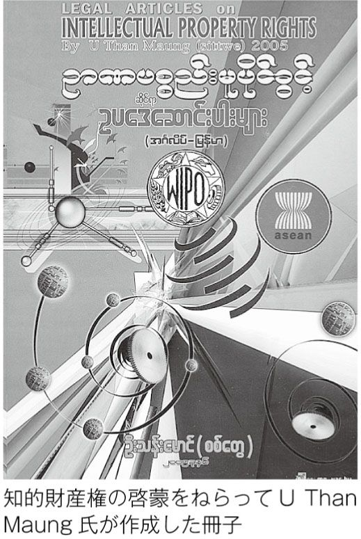

| アジア海賊版文化～「辺境」から見るアメリカ化の現実～ | |
| 土佐 昌樹 | |
| (2008) | |
あれからまだ一年にしかならない。二〇〇七年九月末。前月の燃料費引き上げに端を発し、軍政に反対する僧侶のデモが各地で拡大しながら一般市民と合流することで、ミャンマーの政治状況はいっきょに流動化した。サフラン色の僧衣で膨れ上がるデモの様子は、インターネットを通じて世界中に流された。しばらく傍観していた軍の治安部隊が、デモ隊に発砲し、僧侶や市民を殴りつける瞬間も繰り返しテレビで放映された。
それらの映像は、情報統制がなされているはずの国から、ブログやYou Tube への投稿を通じて世界中のメディアに広まったものである。ＢＢＣ、ＶＯＡ、ＲＦＡ（ラジオ・フリー・アジア）、ＤＶＢ（ビルマ民主の声）などミャンマーの政治情勢を積極的に伝えてきた国際メディア、さまざまな国際ＮＧＯのウェブ・サイト、ミャンマー国内のネットカフェから政府の規制をかいくぐって情報発信を続けた匿名の個人、それらがグローバルなネットワークと結びつくことで得られる情報の力は政府の支配力を凌駕するものだった。そして、デモを撮影していた一人の日本人カメラマンが射殺され、ミャンマーにおける圧政の現実はいっきょに日本人に肉薄したものになった。
東京で行われた葬儀には千人の参列者が集まり、大勢の在日ミャンマー人も駆けつけた。命の犠牲を払ってのことであるが、意外な道を通じて私たちの社会とミャンマーが密につながっていたことに気づかされる瞬間でもあった。ただ、そもそも「ここ」と「あそこ」の間にあるとされる距離はそんなに確たるものだったのだろうか。もともと両者を隔てる境界などあるはずもないのに、そこに心理的な壁をつくり出していたに過ぎないのではないのか。
軍事政権によってすべてが統制された社会と思われているミャンマーから、世界中に続々と映像が発信されてくるのを目の当たりにし、情報化やグローバル化の威力をあらためて感じた人も少なくなかったであろう。
しかし、たまたまこの事件を通じて世界がこれまで見知った表情を大きく変えつつあることを感じたとしても、時の移ろいとともにその重要性はすぐまた忘れ去られてしまうかもしれない。あれからまだ一年にしかならないが、私の記憶もすでに漠然としたものになりつつある。そして、日本人の多くはいまだにアジアに対して特別な距離感を抱き続けているように見える。事件が開示した特別な瞬間は、すでに常態となっているアジアとのつながりを凝縮した形で映し出したに過ぎないのかもしれないのだが。
それにしても、もうそろそろ思い込みでしかない「アジア」のメンタルマップを描きかえてよい時期に来ているのではなかろうか。それが本書の投げかけるもっとも基本的なメッセージである。
この大きな問題に対して、本書は紀行文と論文との中間的なスタイルから取り組んでいる。あるいは、民族誌というきわめて個人的色彩が強い方法に頼っているといってもよいが、そこには新たな意味も付加されている。一般に、民族誌はローカルな文化を自己完結的なシステムとして扱い、長期の参与観察と共感的な視点からその「全体」を重層的に描き出そうとする。「辺境」を通じた人間文化の探究、文化事象の全体的連関の重視、重層的記述を通じた意味の解釈、といった特徴もある。
しかし、ここで試みる民族誌的方法は、そういった伝統を受け継ぎながらもかなり趣を異にしている。文化を完結したシステムとみなすのでなく、なによりトランスローカルな流れに注目することで、新たな民族誌のスタイルを模索しようとしている。
ローカルとは
ローカル（現地、現場、局所、その土地、生活世界......）とはどういうものかという問いは、「アジア」という枠組みを問題にするとき避けて通れない。
いまから二〇年ほど前に、私は韓国の村落に一年間滞在して本格的なフィールドワークをはじめて体験したのだが、当時からこの問いはずっと頭から離れないできた。そのときは「宗教複合」をテーマに、キリスト教会と共存しながら伝統を保っているといわれる村をわざわざ選んで調査を行った。
たしかにその村は、他の村ではほとんど廃れた村祭りを毎年きちんと執り行い、自分たちのスタイルを守っているかのように見えた。観光客や行政の視察者といった「ヨソ者」に明らかに排他的だったし、教会の牧師は村人の「頑迷さ」を繰り返し嘆いていたものだ。ただ、私は一見排他的な村に受け入れられて日々を過ごすうち、村というものを境界で区切られた自律的単位として扱うことにきわめて懐疑的な感覚を持つようになった。
外部の好奇の目に対して攻撃的になる村人も、テレビ、冷蔵庫、電気炊飯器といった家電製品は好んで手に入れようとしていた。昔ながらの釜で炊く唸 るほどおいしい飯は大勢が集まる儀礼的な機会だけに味わうもので、日常の食生活には電気炊飯器の味気ない利便性をどの家も例外なく選んでいた。経済的な余裕があれば、伝統的な藁葺き屋根はスレート屋根に、農作業用の牛は耕耘機に、誰もが好んで変えようとした。そして、テレビという文明のトロイの木馬もすでにほとんどの家庭に入り込んでいた。農村の単調な日常の流れのなかで、ブラウン管に映るきらびやかな都市の風景や美しい肢体を若者がどのような気持ちで眺めているか、私はその渇望を自分自身の感覚としても味わった。
さらに、教育という「魔物」の存在も忘れられない。教育にはもちろん多様な機能があるが、ここで注目すべきなのは、親の世代と子の世代を引き離し、別の社会的存在に仕立て上げる働きである。つまり、教育とは要するに自分の子どもを自分とは異なる存在に仕立て上げることであり、その意味で一種の自己否定に他ならない。
韓国人は、いわれるとおり非常に教育熱心であり、言葉を換えれば伝統否定派だということにもなる。教育は、子弟を家族や共同体から引き離し、分業化された社会の一員に仕立て上げる。よりよい教育と仕事を求めて都市に向かうため、この村にも若い世代がごっそり抜けていた。人を都市へ、海外へと運び、はては子弟のために親まで移民する「教育移民」と呼ばれる現象に至るまで、教育とは共同体の側から見て明らかに解体的な作用をともなうのに、どうしてそれを文化侵略として問題にする観点がないのだろう。
そういうわけで、いかに排他的な体裁を取ろうとも、韓国の村はすべからく「外部」によって蜂の巣のように侵食されていると私には見えたのである。「外部」は一見して外敵とすぐ知れる顔をしてはいないが、家電製品や教育のように親しげに個人の欲望や夢に語りかけ、精神を外部も内部もないメビウスの輪のような入り組んだ構造にかえる。それは韓国の村に限られた現実でなく、いまやどこでも見いだすことのできる当たり前の風景ではなかろうか。
個人の人生を家族からもぎとる社会とは、近代では国家を指す場合が多いが、それだけではない。テレビ画面から「同じ民族」に語りかける声はたしかに韓国語かもしれないが、ニュース、ドラマ、娯楽番組のどのジャンルも、そのモデルは日本やアメリカからの借り物である。こうして、ローカルは幾重にも「外部」のヒダを刻み込んだ複雑な地形を見せているのに、地理的な境界を手がかりに問題を囲い込もうとしても、もはや文化のゆくえは認識の手をすり抜けていくばかりだ。
ローカルがもしそのように安定した単位というよりは、より大きなシステムを構成するための自己否定的な場であるとしたら、それを基礎に地域研究が成り立つとはとても思えなかった。アメリカの人類学者クリフォード・ギアツがいうように、「人類学者は村を 研究するのでなく、村で 研究するのだ」と割り切った方が、そうしたパラドクスにとらわれずにすむ。
「考縁学」としての民族誌
本書では、アジア各地を回りながら得た見聞そのものについて詳しく記すことはほとんどしなかったが、一般化された記述の裏にはつねに具体的な経験の裏打ちと限定がある。
たとえば、二〇〇七年のミャンマーのデモについては、ちょうど九月末に大学の業務でヤンゴンに向かう予定であったのだが、日々移り変わる情勢を受けてまさに出発を延期したその日に日本人カメラマンが亡くなったということもあり、個人的な感慨ぬきにあの出来事を思い返すことはできない。ミャンマーと日本との特別のつながりを実感するようになった知的歩みには、そうした具体的経験の蓄積が支えている面が強いが、一方でそれがかたよった思い込みや錯誤の原因となっている面もあるだろう。
民族誌とは個人的な出会いをグローバルな文脈にまで届かせようとする記述的冒険であり、それ自体がいわば絶対的な矛盾に引き裂かれているともいえる。個人的でミクロな視点と、抽象化や鳥瞰的な方法を融合させるところが民族誌的アプローチの醍醐味であるといえるが、それはそもそも勝つ見込みのない賭けのようなものである。しかし、この不透明な時代にあって、文化の将来を見据えるために民族誌の果たす役割はますます大きなものになろうとしている。
民族誌的な方法は、書斎で終わることのない経験の無限の地平から学ぶことだから、探求の旅には果てしがない。私自身も長年アジアに出かけ、フィールドワークやそれ以外の形の知見を重ねるにしたがい、自分の知識や経験がいかに限られたものかをますます思い知らされている。
一般化や抽象化の試みは、しょせん個人的な経験の幅によって大きく制限されている。同じ家族ですら同じ世界を信じているとはとてもいえない時代にあって、これはとても大切な認識である。フィールドワークという擬似科学的な方法を盾にしたとしても、誰と知り合いどんな話を交わすのかといったレベルから、すべては偶然と無数の前提によって左右されている。人類文化の普遍性と多様性を追究する人類学は、その意味で原理的に不可能な学問的プロジェクトなのであろう。
しかし、そうした個人的出会いの積み重ねや因縁から一般的な意味を導きだそうとする営み（「考縁学」とでも名づけるべきか）が、科学的で客観的な体裁を取る学問より革新的な働きをなすことがある。というより、人類学のような学問は、たとえ無数の錯誤を犯そうとも、つねに実験的で先端的なポジションにいない限り、その存在意義は雲散霧消してしまうのではなかろうか。いうまでもなく、あらゆる知的営みを支えるもっとも基本的な原理は、試行錯誤なのであるし。
本書は、個人的出会いと時代の流れに左右されながら、アジア文化の明日に対してより普遍的な見方を追究した旅と思索の産物である。裏打ちとなった経験は、アジアの多くの地域における無数の人々との出会いから得られたものであるが、叙述の主たる対象は韓国、中国、ミャンマーに限定してある。すでに確立した専門的な知識を一般向けに平たく書き直したものでなく、私的見解を問題提起的な趣旨から述べたものである。
最後に、本書がこれから明らかにしようとする問題の輪郭を示しておく。まず、限られた紙幅で文化のあらゆる領域を含めることはできないので、いわゆるメディア文化を主たる対象とすることにする。メディア文化といっても作品論や作家論といった「中身」でなく、アジア文化が一定の方向に向けて変容する「形式」や「論理」を問題にする。
すなわち、一方でメディアによって「外部」から「内部」へと運ばれるイメージの流れ、もう一方には教育と仕事を通じて移動を続ける人々の流れ――この二つの流れの関係を手がかりに民族誌を書くことができるだろう。メディアが含む範囲は、新聞、ラジオ、テレビ、衛星放送、インターネットというように日進月歩を繰り返し、また人の移動も自動車、船、鉄道、飛行機などの発展によってどんどんその規模を拡大している。次元が異なるこの二種類の流れは、密接に関わり合いながら複雑な運動を人類史にもたらしている。
それがアジアにどのような意識の変革をもたらすか、さまざまな角度から追究するに値する問題がそこにある。問題設定の軸となるのは、「アメリカ化」「海賊行為」「公共圏」という三つのキーワードである。
アジア海賊版文化 目 次
図表作成／デマンド
アジアの文化は、どこに向かって進んでいるだろうか。
それは、依然として多様性と混沌の中に溶解してしまうような問いかけであろうか。アジアを統一的に捉える視点は、手に入れようとしても決して与えられることのない夢幻に過ぎないのであろうか。
今日のアジア地域に目をやると、経済的な相互依存がますます増大し、また政治的にも「東アジア共同体」への模索が続くなど、もはや後戻りがきかない水準までダイナミックな地域統合が進んでいる。しかし、文化の面を見る限り、国家間の疎遠な関係はそう簡単に好転しそうもない。もともとアジアといってもそれは西洋からの一方的なレッテルに過ぎず、内実は驚くほど多様でバラバラであるといわれ続けてきた。実際、仏教、儒教、ヒンドゥー教、キリスト教、ユダヤ教、イスラム教、神道、シャーマニズムとあらゆる宗教が入り乱れ、伝統や民族を基準にすれば統一より亀裂がはるかに勝り、また近代に入っては大きな連帯より覇権主義やナショナリズム同士の衝突こそがアジアの常態であった。資本や技術の移転はこれからもブルドーザーのように強引な地ならしをして行くであろうが、だからこそ、ごつごつした個性や食い違いはなおさら自らの差異を際立たせようと奮闘を続けるであろう。こうして、文化の面では統一や共通性を語ることが長い間おこたられてきた。
本書は、そうした当然の留保を踏まえながらも、あえて文化のレベルで普遍へと向かう大きな流れを問題にしようとする試みである。
この広漠たる問題に取り組むため、とりあえずの出発点を定めないといけない。私はそれを、梅棹忠夫の「文明の生態史観」に求めようと思う。これが発表されたのは一九五七年だから、今からちょうど半世紀前の所説ということになる。しかし、この短いエッセーは今読み返してみても新鮮な洞察に満ちており、その後このような大きな問題設定は絶えて久しいので、日本とアジアの関係を文化の次元から大局的に問い直すときに避けて通ることのできない参照点となっている。
「文明の生態史観」とは、特定の条件下で植生が一定の変化を示す「遷移（サクセッション）」という生態学（ないし生物学）の現象から着想を得た文明論という意味である。それに対する私自身のスタンスは、一言でいえば批判的継承である。これが発表された当初から、賛否両論がさかんに闘わされたが、その後長い時間を経るとともに地域研究の発展から見て不適切な部分が少なくない点も明らかになってきている。ただ、専門分化が進行するとともにこうした大きな問いかけそのものが姿を消しつつある。批判や補完すべき点は少なくないが、生産的な継承をすべきだというのがここでの基本的な姿勢である。
「文明の生態史観」は関連する文章とともに一冊の本にまとめられ、一九六六年に出版された。著者も含めてその後さまざまな人がさまざまなコメントを加えており、細かい議論をし出せばきりがないが、あくまでその概要とそれに対する私なりの反論を示すことで本書の出発点とするにとどめたい。
梅棹の主張によれば、ユーラシアの東の端（日本）と西の端（西ヨーロッパ）は生態史的に見て並行した歴史的発展を遂げてきたという。そこだけが封建制を経験し、また大きな戦渦もなく内発的な発展が許されたことによってスムーズな近代革命を成し遂げ、高度な資本主義と豊かな社会を築き上げることに成功した。それは歴史的に例外に属する事例であり、そこを第一地域と呼んでいる。それに対して、ユーラシアの大半を占める地域（第二地域）は乾燥と戦渦と不毛によって特徴づけられる歴史を刻んできた。近代革命は難産を極め、多くは独裁体制を生みだすことに帰着し、豊かな市民社会がもたらされることはなかった。
こうした観察は梅棹がインドやパキスタンなどの南アジアを歴訪することによって着想され、その後、東南アジア諸国を見て回ることで固められていった。アジア主義者が唱道するのと異なり、日本はアジアの一部でなく、むしろ西ヨーロッパとの類似性が際立つという事実が強調された。それまで主流だった欧米との比較でなく、アジアとの対比から発展させられた文明論であり、戦後まだ間もない時期にアジアに対する新たな認識をもたらし、また新鮮な視点を含む日本論として受け止められた。
発表当時の時代状況を見る限りにおいて、梅棹の主張は大筋で正しかったといえるかもしれない。文化を問うときに、系統や起源でなく共時的な機能の連関に注目する視点の重要性は、その後の文化研究のなかでも確証されてきたものである。また、そうした視点に立ったとき、日本文化のある要素がアジアに発し、別の要素が近代西洋に発するものであるとして、そうした要素の集合が全体としてまぎれもなく高度な産業社会と豊かな生活を実現しており、西ヨーロッパ以外に当時ユーラシアでその類例が見いだしがたいというのも事実であった。日本と他のアジアとの間には全体として類似より差異の方が際立っていた。
しかし、こうした主張は今やアジアの現実とそぐわなくなっており、その結論は（文明論を語るには）あまりに性急すぎたといえるだろう。四小龍、ＡＳＥＡＮ、中国へと「雁行的に」発展してきた一九八〇年代以降の歴史を知る者にとって、日本の発展がアジアの例外だと信じられる者はもはやいまい。
二一世紀に入った今日、アジアに住む人々のライフスタイルの特徴は、どのように記述できるであろうか。バンコクや上海の光景と東京のそれとの間に、なにか決定的な一線を引かないといけない異質性が見当たるであろうか。
もちろん、今でもアジアのそれぞれの地域には、目を瞠 るような独自の色彩があり、グローバル化などといった要約を簡単に許さない特別なにおいやリズムが生きている。大通りを水牛がわがもの顔で往来する都市や、目を覆いたくなるような風習の例をいくらでも挙げることができる。そもそも近代文明を支える制度がきちんと機能していることが疑わしい地域は今でも少なくない。
しかし、そうした差異や矛盾は、乗り越えがたい異質性というよりは、同じレースを走っているからこそ際立つ「順列」であり、別の原理に沿った異質の文明圏として位置づけることはもはや不可能ではなかろうか。
この半世紀の間に、とりわけ冷戦構造が崩壊してからは、地球全体がめざしている方向が基本的に同一であることがますますはっきりしつつある。それは、都市の景観を見るだけで自明である。歴史的景観の違いがまったくならされてしまったわけではないにせよ、今や世界中の都市は独自の風土や生態的差異を無視した同じデザインからできあがっている。高層ビルの例を挙げてみよう。
史上初めて百階を超える超高層ビルとしてエンパイア・ステート・ビルが誕生したのが一九三一年であり、九・一一テロの標的となったニューヨーク世界貿易センター・ビルが完成する一九七二年までその記録は破られなかった。そのすぐ二年後にシカゴのシアーズ・タワーが記録を塗り替えたが、二〇世紀はアメリカの世紀という言葉を摩天楼の歴史はあざやかに示している。
しかし、一九九八年にクアラルンプールのペトロナス・ツインタワーが王座を奪って以来、競争の舞台は完全にアジアに移り、そしてその盛衰のサイクルもどんどん目まぐるしいものになっている。二〇〇四年には台北の一〇一ビルが首位に立ったと思ったのもつかの間、まだ建設途上にあるドバイのバズ・ドバイ・ビルが二〇〇七年の段階で首位の座を奪い取った。アジアの大都市は百階以上の超高層ビルを競うように建設し続け、ドバイを抜き去る怪物がそのうち中国やインドに現れても、もはや驚く者はいないだろう。
あるいは、ニューヨーク世界貿易センターがさらに記録を塗り替える「フリーダム・タワー」を建設するとか、東京が高さ一キロメートルの空中楼閣「スカイシティー１０００」を計画しているとか、この種の話題には事欠かないが、いずれにしてもアメリカとアジアが同じタイプの都市文明を志向していることは疑いもあるまい。環境や居住の快適さという面からいえば決して合理的な存在といえないその偉容は、アジアがアメリカとともに、ある種の神話性を帯びた「同じ」文明の建設をめざしていることを教えてくれる。
その同一性は、天空の高みから見渡すときに明らかになるだけでなく、日々の生活の積み重ねの中によりはっきりと現れている。生態系の違いは都市の分厚いシールドによって排除され、労働と余暇という同じリズムに沿って大多数が生きている。砂漠の民と農耕民が「同じ」都市文明の中で生きているこの時代というものに、もっと驚くべきではなかろうか。
気候の違いにかまうことなく若者はジーンズをはき、ビジネスマンはスーツで身を固める。冷凍食品やファストフードで腹を満たし、通勤と労働の辛苦に耐えたあげく休日にはショッピングモールで消費を楽しむ。学生も労働者も成績や地位の序列化という亡霊に追い立てられ、鬱 積 した憤 懣 を文化産業が提供する余暇に身銭を切って晴らすしかない。さらに、自然や伝統から切り離された人工的な環境に身を置き、こうした恐ろしいほど似通った日常を送りながら、一人ひとりは個性の表現を忘れず、また個々の国家や民族も自らの独自性を信じて疑わない。
こうした要約は、それ自体が皮肉めいた批評になるしかなかろう。生活のニュアンスを取り払ってしまえば、現代というのは疑いもなく悪夢のような時代なのだ。しかし、そんなことはないということをだれもが知っている。矛盾やジレンマがあふれているとはいえ、現代ほど夢に満ちた時代もない。そして、その夢の「源泉」がどこにあるかもだれもが知っている――「アメリカ」である。
戦後の日本を語るとき、アメリカから受けた膨大な影響を忘れることができないのは当たり前すぎる事実である。民主主義からディズニーランドに至る社会のほとんどの領域で、アメリカの影響なしに日本の発展はあり得なかった。「核の傘」に代表される軍事的庇 護 とハリウッドやジーンズに代表される大衆文化の魅惑――一部でなく日本社会の全体を貫くその圧倒的な力に人は反発するか崇拝するかしかないような慣性を身につけてきた。いや、そうした過度の意味づけさえすり抜けて、見えない他者としていつの間にか日本人の無意識の一部を構成するようになった。つまり、アメリカという存在が今やあまりに当たり前すぎて、その意味を冷静に捉え直す作業がおこたられてきたかのようでさえある。
こうした傾向は、日本だけでなく、アジア全体に視野を広げていっても顕著に認められる。アジアの安全保障におけるアメリカの軍事的展開、金融や多国籍企業を通じたアメリカ中心の経済的グローバリズム、人権や民主主義を旗印にした政治的圧力――こうしたハードなパワーに対し、コカ・コーラ、マクドナルド、マイクロソフト、ハリウッドなどが代表する文化の面での圧倒的なソフトパワーもまたアジアの至る所で認められる。さらに、難民、移民、留学といったかたちでのアジアからアメリカへの膨大な人の移動は、ソフトとハードといった分類を超えた大きな影響を双方にもたらした。
だれもが知っているはずなのに、その存在がまともに文化論の中で取り上げられることは少ない。「反米」か「親米」に分極化することはあっても、日本とアジアに対するアメリカの影響力を客観的に捉えることがいかに困難か、戦後の日本でその実例がほとんど見出せないことをとってもよくわかる。
そして、梅棹の「文明の生態史観」にも、アメリカがすっぽり抜け落ちている。この欠落は、日本を他のアジアから切り離し、ユーラシア大陸のもう一方の先端と結びつける図式を陰から支えている。梅棹の文明論は、「日本はアジアではない」という矮小化されたメッセージとなって、今日でも小さくない影響力を発揮している。これは、新世紀の日本にとって、まことに不幸な置きみやげとなってしまった。
もし、アメリカという大きな存在を取り込んでいたなら、「文明の生態史観」は大きく揺らがざるをえないであろうし、また日本とアジアとの差異もごく些細なものとして相対化されることになるであろう。
その先に見えてくる、新しい世界像はどのようなものか、その問題のせめて端緒なりとも本書で捉えてみたい。
梅棹の議論は新種の「脱亜入欧」であったといえるが、そうした批判にとどまっていてもあまり意味がないだろう。たしかに、戦前までの反欧米的連帯の流れを心情的アジア主義として切り捨て、日本の独自性を強調する「日本人論」の系譜を「文明の生態史観」は見事に先取りしているように見えるかもしれない。というのも、梅棹の基本的スタンスは、欧米と比肩する発展をしていながら（欧米から見て）異質な文化的価値をもち、アジアに位置しながら特別な発展を遂げた日本の位置を大きな俯瞰図のなかで与えているのだから。
しかし、梅棹の議論のすぐれたところは、日本的独自性や異質な価値といったマジックを持ち出さず、目の前の日常的な現実を基礎にしながら文明論を展開していったところにあり、だからこそ今日読んでもまだ教えられるところが多いのである。つまり最近の「日本人論」批判の一例として取り上げるのでなく、同じ方法に則って今や別のアジア論を展開することが可能であり、それこそがより生産的な道であるだろう。
そのためにも、「文明の生態史観」がもつ本質的な欠陥を克服しなければならない。それは、ユーラシアをあたかも完結した系のように取り扱い、その中での歴史的進展にだけ注目したところにある。南北アメリカ、オセアニア、アフリカとの相互作用がまったく図式から欠落している。とりわけ、北米との相互作用が抜け落ちているのは、二〇世紀以降の世界を語る上で致命的な欠陥であり、その点は著者も自覚していたことを後に語っている。しかし、アジアと日本の文化変容にとって、アメリカは副次的な要因として片付けるにはあまりに大きな存在である。端的にいって、アメリカを軽視したあらゆるアジア論は空論になるしかないだろう。
アメリカ化の大きな影響を認めた上で、アジアの日常的な現実を基礎にしながら新たな文明論を構想するとしたら、どういった輪郭が描けるであろうか。
まずは、非土着的アジア文明の誕生とでも名づけることのできる現象が目につくであろう。ブランド・ファッション、ファストフード、ポピュラー文化、電子化されたコミュニケーションなどが都市の表層を形成しており、まったく画一的な文明ではないにせよ、グローバルな文化商品の流行によってその土地の景観が左右されている。それは、気候風土の差異を無視した都市文明であり、ユーラシアという単位でなくアメリカとの関係の方がその成長により大きな影響を及ぼしてきた。
現実を虚心に見つめるならば、今やアジアを理解するためには「非生態史観」とでも呼ぶべきパラダイムに依拠する必要があるのだ。そのため本書では、「海賊行為」と「公共圏」というキーワードを通じて具体的な展開を図った。その問題へと進む前に、ここではもう少し「アメリカ化」の意味をはっきりさせておきたい。
アメリカを対象化するのは難しい。
個人的出会いだけを思い返してみても、アメリカの大衆文化に毒づく知識人のありようは、世界のあらゆる地域に共通して認められる。アルマティで、北京で、マニラで、ソウルで、あるいは東京で、ハリウッド映画の低俗さを嘆く知識人の仕草がまるで示し合わせたかのように酷似していることに、何度驚かされたであろうか。
一方で、アジアのどの都市であれ、アメリカのポピュラー文化は圧倒的な人気を誇っており、それに毒づく知識人も心からハリウッド映画を軽蔑しているというよりは、要するに伝統の守護神たる知識人として、認知的不協和を起こしているようにしか見えない場合が多かった。
アメリカの存在をハードパワーの面から明らかにすることは、さほど困難でない。しかし、今日のイラクやアフガニスタンの惨状がはっきり証言しているように、ハードパワーが前面に出たときのアメリカは自らの信奉者を増やすことに決して成功しない。覇権主義という面からいえば、そういうときのアメリカは実にもろい。
アメリカの力が発揮されるのは、あくまでソフトパワーに負うところが絶大なのであり、アメリカを軸にしてアジア文化について論じていくときの重点もそこにある。
これはいわゆる「文化帝国主義」と呼ばれるアメリカ批判と軌を一にしているだろうか。文化帝国主義とは、コカ・コーラやディズニーランドで人心を懐柔しておいて、経済的、軍事的支配を実現するという「陰謀」に対する批判であり、ハリウッド映画を攻撃する全世界の知識人にも共通する思考様式である。これはあまりに現実を単純化した見方であると多くの批判を浴びてきたが、別の形で生き残っている。それがジョセフ・ナイのいう「ソフトパワー」論であり、そうした批判をいわば逆手に取り、アメリカの経済的、軍事的支配を容易にするため、大衆文化が代表する「ソフトパワー」を高めていかなければいけないと主張し、いわばアメリカの文化帝国主義的な支配を肯定し、推し進めようとしているのである。
しかし、いずれの見方もソフトパワーとハードパワーの関係を単純化しすぎており、その関係が不透明であるところにアメリカの魅力の秘密があるという点を見過ごしている。
実際、アメリカの文化的影響力がここまで全世界に浸透した理由は、未だほとんど明らかにされていない。それが絶大なハードパワーと相関していることは確かだが、どう関係しているかを追究した例はほとんどみられない。数少ない例外として、たとえばアメリカの歴史学者ウォレン・コーエンは『アメリカがアジアになる日』という一般向けの書物で、アジアがいかにアメリカの文化的影響を受けてきたかについて語っている。
二〇世紀を通して、アメリカは大多数の東アジア諸国の大衆文化、教育、宗教、さらに政治・経済の理論や政策に影響を及ぼした。このアメリカ化は、強制されて起こったものは非常に少ない。また、そのようなケースはたいてい失敗に終わっている。アメリカ化の大部分は強要されたものではなく、アメリカ文化に魅了されたアジアの人々が、それをみずから取り入れた結果なのである。多くの場合、それは各国の好みに合わせてアレンジされ、最終的にはその国の文化として定着した。
アメリカの文化的影響はアジアの大衆が好んで受け取ったものであり、ハードパワーが背後から脅迫してなしとげた成果ではない。また、同時に重要なのは、アメリカ化を推進してきたアメリカとは固定した主体でなく、アメリカそのものが絶えず変貌してきたという事実である。
こうしてアジアのアメリカ化を問題にしたコーエンは、アメリカのアジア化を同時に見ざるを得なくなる。それは、たとえば移民や留学生の受け入れを通じて、アジア的なライフスタイルや価値がアメリカの日常のあらゆる場面で見られるという現象となってあらわれた。寿司バーや日本アニメの人気はもちろんのこと、メイド・イン・チャイナの氾濫、ＩＴ産業におけるインド人エンジニアの活躍、仏教的精神修養の流行、あらゆるエスニック・レストランの増加など、枚挙にいとまがない。アメリカ社会の主流を形成していたＷＡＳＰとしてのアイデンティティは徐々に薄らぎ、アジアからの文化的影響をすすんで受け入れる傾向が目立っている。「アジアの影響は、美術、映画、食品、産業、宗教、セックスなど、アメリカの大衆文化とハイ・カルチャーの両分野に及ぶ。アジア文化との接触が増すにつれ、アメリカ人の価値観や考え方にも変化が生じはじめている」。
フィリピンや韓国と並んで、アジアでもっともアメリカ化が進行しているといわれる日本も、こうした問題を考えるときに欠かせないケースである。吉見俊哉の『親米と反米――戦後日本の政治的無意識』は、戦後日本における大衆文化の発達とアメリカのハードパワーが密接に結びついていることを例証している。たとえば、東京近辺の米軍基地 や軍事施設は、移転後も原宿や湘南に代表される若者文化と外国文化のベースとなって生き続けている。ただし、その関係はやはり直接というよりは逆説的なものである。ハードパワーが後退することで、むしろ日本でのアメリカの文化的影響力は、どの社会より確固たるものとなったといえるからだ。
アジア以外にまで目を転じるなら、いわゆるアメリカ化の影響を問題にした例は少なくない。「マクドナルド化」「コカ・コーラ化」「ディズニー化」といった一連の用語もすべてそうした巨視的な影響を指したものだ。なかでも、アメリカに対する崇拝と侮蔑のサイクルを繰り返してきた先行例として、やはりヨーロッパが突出したケースとなるだろう。
アメリカの歴史家リチャード・ペルズによれば、二〇世紀前半までの合衆国は、世界のなかでまだ周縁的な存在だった。ヨーロッパは第一次世界大戦でかなり衰弱したが、それでもまだ政治的文化的中心だった。
第二次世界大戦こそがそうした序列に変動をもたらし、アメリカを世界的パワーにした。マーシャル・プランが代表する戦後ヨーロッパの経済復興援助や、ＮＡＴＯを通じた軍事的プレゼンスの増大などを通じ、アメリカの影響力はかつてなく大きなものになっていった。しかしなによりアメリカの影響力が発揮され、また現地の反発にあったのは文化の分野だった。戦後まもなくのヨーロッパ人にとって、アメリカ文化とは「映画、ジャズ、ロックンロール、新聞、大量発行雑誌、宣伝、漫画、そしてなによりテレビを意味していた。これは上流階級でなく、一般大衆のためにつくられた文化だった」。アメリカ文化は青年や大衆から大きな支持を受け、ヨーロッパの文化はとめどもなくアメリカ化されていったが、それに対するヨーロッパ人、とくに知識人や政府官僚の受け止め方は非常にアンビバレントなものだった。
ヨーロッパ（なかでもフランス）にとってのアメリカとは、洗練された西洋文明の対極に位置するものであり、「どうしようもなく貪欲で物質主義的、野卑で暴力的で文化的に不毛、規格化されていて凡庸、精神も魂も欠けている」と非難された。こうしたイメージの裏面には、退廃して崩壊の危機にあるヨーロッパに対し、自由と希望にあふれ、活力ある文化を生み出し続けるアメリカという倒立したイメージが控えているわけである。「反米」という名のステレオタイプは、ペルズによれば、「アメリカの文化と価値をひそかに採用しながらも公的には否認する方法」だったという。
いまや政治経済的な共同体を形成しつつ、しかし文化的にはけっして「ひとつ」になったとはいえないヨーロッパの姿を知っている者にとって、アメリカ化という作用も決して文化を均質化する一方的な過程でないことは認めやすい。しかし、この点に関してはアジアでも驚くほど似通った反応をアメリカに対して見せてきたのである。そして、それはアメリカの知識人にも共有されている。
「マクドナルド化」という用語を打ち出した社会学者のジョージ・リッツアもその一人である。「マクドナルド化」とは、「ファストフード・レストランの諸原理がアメリカ社会のみならず世界の国々の、ますます多くの部門で優勢を占めるようになる過程」を意味している。その影響は、「レストラン業界にかぎらず、教育、職業、ヘルスケア、旅行、娯楽、ダイエット、政治、家族、つまりは社会のすべての側面に及んでいる」。マクドナルド化とは、要するにアメリカ化の別名であり、マクドナルドの店舗が世界中に増えるにしたがって、行き過ぎた合理化や官僚制に代表される非人間的な原理が広がっていくという。
アメリカの政治学者ベンジャミン・バーバーは、こうした批判的見解をさらに極端にまで推し進めている。彼の著書『ジハード対マックワールド』は、タイトルが示すとおり現代世界が二つの対極的な原理によって引き裂かれていることを告発する。一方には、ナショナリズム、部族主義、宗教的熱狂主義といった血塗られた細分化の運動があり、他方にはアメリカ発の文化的均質化の運動がある。ジハードはたしかに瞬間的には恐怖と混乱で世界に大きなインパクトをもたらすが、長期的に見てほんとうに恐るべきなのは、ＭＴＶ（娯楽産業），マッキントッシュ（コンピュータ）、マクドナルド（ファストフード）の三つのＭが代表するマックワールドのパワーである。それはイメージとしての商品がつくりだすソフトパワーであり、その威力には政治的、軍事的なハードパワーはもちろん、宗教的な戒律も太刀打ちできない。なぜなら、その魅力が働きかけるのは、単に表層的な欲求でなく、魂の渇きだからだ。
新たな遠距離通信や娯楽産業は、魂を無視したり破壊したりするのではなく、むしろそれを吸収し、分解して、再構築するのである。この業界では、魂のほうが物理的に限界のある身体よりも消費を喚起するのに適している。喉の渇きや飢えは簡単にいやされるが、魂が求めるものには限度がない。魂が動員されて流動的な――変幻きわまりない――肉体の要求をみたそうとするとき、限界のない市場が保証される。
こうして、アメリカ中心のグローバル化と、それに対抗する原理主義的反抗が続く限り、世界は出口のない袋小路に突入することになる。
民族誌的手法は、こうしたある種の誇張された批判的言説を補完する手がかりとなる。たとえば、人類学者のジェームズ・ワトソンらは東アジアにおけるマクドナルドの受容を民族誌的に検討することを通じ、マクドナルド化やアメリカ化を告発する理論が一面的であることを示した。マクドナルドの進出は単なる押しつけにとどまらず、多様なローカル化の歴史でもあった。
ローカル化のプロセスは双方向の道筋である。つまり、現地の文化を変化させると同時に、マクドナルドの標準的な事業のやり方を修正させる。行列をつくり、自分で食べ物を運び、座席につくといったマクドナルドの産業化されたシステムの鍵となる要素は、東アジアの消費者に受け入れられてきた。一方、産業化されたモデルの別の側面、とくに時間や空間に関わる面は拒否されてきた。東アジアの多くの地域で、消費者は現地のマクドナルドをレジャーセンターや放課後のクラブのようにしてしまった。「ファスト」の意味はそこでは覆されてしまった。そこでは、食べ物を出す速さを意味し、消費の速さを意味しない。
ローカルな実践に注目することで、ステレオタイプや巨視的な見解に修正を迫ることはできる。だが、ここであらためて問うが、ローカルとはなんだろう。消費のスタイルを少しばかりずらしたからといって、それがほんとうにアメリカ文化を別物にしたといえるのだろうか。ワトソンも問うてはいるが、そもそも文化がアメリカのものかローカルなものかという疑問自体が正当なものだろうか。ちょっとしたニュアンスにローカルな意味合いを過剰に持たせる仕草は、アメリカが世界を一色にしてしまうと騒ぎ立てる誇張法とあまり大差ないのではなかろうか。こうした疑問は、これから本書の全体へと受け継がれていく。

写真は、たまたま手元にあるフィリピンの雑誌であり、マニラの中産階層がモデルとするようなファッション、インテリア、グルメ、ウェディング、自動車、電子機器、バカンスなどのイメージが盛られている。これが東京のものであってもドバイのものであってもなんの違和感もないだろう。その類似性は、アジアの伝統から来るものではなく、アメリカ化という共通の作用がもたらすものである。
ここに掲げられている「アジア的ライフスタイル」とは、「アメリカ化されたアジアのライフスタイル」という意味に他ならない。それは、固有の場所とメッセージを欠いた空虚なイメージに過ぎないのかもしれない。しかし、こうしたイメージは、アジアのどの都市でも無敵の力を発揮しており、伝統主義者のどんな説得にも耳を貸すことはない。
そうした表層的なイメージの流れを具体的に検証し、共通性とともにローカルな差異を確かめる手法も、アメリカ化を経験論的に問題にするうえで重要であろう。
同じくフィリピンから一例だけ取りあげるなら、『ピノイ・ポップ・カルチャー』というグラフィックな本は、プレスリーからファストフードや人民パワーに至る例を取りあげながらピノイ（フィリピン人）の大衆文化を色彩豊かに紹介している。「フィリピン人はなんでもコピーするのが大好き」と宣言し、アイドル、映画のプロット、レストラン、ファッション、建築、インテリアデザインなどすべてが外国の（とりわけアメリカの）流行を模倣していると指摘している。そうした傾向をおもしろおかしく紹介しつつも、「第一世界のライフスタイルを第三世界の経済で買っている」と皮肉り、模倣を繰り返して「よきアメリカ人になろうとしても、惨めなフィリピン人でいるのが関の山」と自己揶揄してもいる。しかしもう一方で、「私たちはアジアで唯一の西洋人だ」という皮肉とも自慢ともつかない主張もなされている。
こうしたコピー文化の氾濫と植民地化された自己意識の発露は、かならずしもフィリピンに固有のものではない。たしかに、ハリウッド映画とともにメキシコのテレビドラマが好まれるのはアジアの他の地域には見られない嗜好であるし、軍用ジープを乗合乗用車に改造して生まれた「ジプニー」など、アメリカ文化の見事なローカル化といえるだろう。そうしたローカルな差異はいくらでも挙げられるが、それでも「すべて」いつかどこかで見たかのような既視感を与えずにはいないのである。
アジアの都市に氾濫するコピー文化の意味をありのままに受けとめるためには、ローカルな差異にこだわり過ぎることはその妨げとなる。その点、日本はとくに自己愛的な「視界不良」になりやすい場所にいる。ついこの間まで日本はアメリカ文化の影響に徹底してさらされ、コピー文化の花咲く園であった。しかし、今や漫画・アニメ・ゲームが代表する日本のオタク文化は「クール・ジャパン」ともてはやされ、ポピュラー文化の分野で日本のアメリカ化でなく、「ジャパナメリカ」という造語とともに、アメリカの日本化が真剣に論じられるまでになっている。
これはしかし、歴史を早回しし過ぎた見方であり、その前にアジアという大きな文脈で確かめておかないといけない一般的な問題がまだたくさんある。
アメリカ化がアジアで実現しつつある一般的な問題を浮き彫りにするため、ローカルな具体例を通覧的に検討していくというやり方も捨てがたいが、本書は別の道を進もうと思う。ここまでで明らかなように、アメリカ化は決して平坦なプロセスでなく、否認、反発、抵抗といった複雑な屈折をかならずともなう。それは、この大きなテーマを扱うときに、有力な手がかりともなる。その屈折点こそが、本書が問題にする海賊行為であり、公共圏である。
アジアにおけるアメリカの文化的影響をいざ具体的に検証しようとすると、メディア文化ひとつを取ってみても環境のあまりの違いから容易な一般化を許さないことにすぐ気づかされる。インターネットや衛星放送の普及がグローバル化を進めていることは間違いないにしても、アジアの多くの地域では圧倒的な貧富の差が国境よりも厚い壁を国内に築いている。権威主義的な政府はそもそも国民に情報への自由なアクセスを許さないであろうし、北朝鮮、イラン、ミャンマーといった「反米国家」ではアメリカ化を問うこと自体が空疎な問題設定ではなかろうか。
冷戦構造が崩壊することで、アメリカの影響が全世界をくまなく覆うようになったとはよくいわれるが、それらの国々は例外として位置づけられるのが常である。だが、あえてそうした地域に目を向けることで、アメリカ化という現象を問うときのアジア的文脈とでもいうべきものが浮き彫りになるであろう。
そうした文脈を明るみに出す鍵として、本章では文化的な海賊行為に注目する。そして、まずミャンマー（ビルマ）の例を引き、次章でさらに中国に目を向けながら、海賊行為がアジアの全体を貫いてアメリカ化につながっていく道筋を明らかにしてみたい。検証の試みを通じ、そうした動きは玉が坂を転がり落ちるような単線的なものでなく、もっと複雑で逆説的なベクトルを含んだ運動であることもまたはっきりするはずである。
ミャンマーは、北朝鮮とともにアジアの「孤児」であり、アメリカをはじめとする外部世界に対して堅く門戸を閉ざしている。また、国連から最貧国に指定されており、貧しい国民生活を度外視した軍部の独裁政治が続けられている。文化のアメリカ化を問うのにもっとも無縁な場であろうし、グローバル化という言葉がこれほどむなしく響く社会もあるまい。
これが外からのいわば公式見解であるが、実際に訪れてみるとそうした要約では捉えきれない変化が進行していることにすぐ気づかされる。
たしかに、軍部の恣意的な運営で国の発展はいびつなハンデを背負い込まされている。ＩＭＦの推定によれば、二〇〇五年度の一人あたりのＧＤＰは二一九ドルにとどまっている。日本から見ると、二〇〇七年の民主化デモに対する弾圧のような極端なイメージだけが印象に残っているかもしれない。そうでないとしても、西側からの批判をものともせず民主化運動の指導者アウン・サン・スーチーを自宅軟禁し続け、また経済状況を顧みず突如として首都をへんぴな地方都市ピンマナに移し、ネーピードー（「王都」の意味）と命名するなど、およそ合理的な思考では理解しえない動きばかりがニュースとして伝えられる。
実際、首都移転のほんとうの動機については、アメリカのイラク攻撃に衝撃を受けた軍部が、占星術師の託宣に従って決断したとまことしやかに噂されてもいるのだから、国民の絶望の深さも並大抵ではなかろう。
しかし、今でも実質上の首都であるヤンゴンでは、豊かな緑と英植民地時代の老朽化した建物がそのまま保たれている一方で、新たなオフィスビルやレストランやショッピングモールが建設を競っている面もある。西側社会の経済制裁は大きな影を落としているが、中国やＡＳＥＡＮからの投資で発展が停止しているわけでないことが実感される。きらびやかなショッピングモールやスーパーマーケットの陳列棚には、外国の商品が所狭しと並べられている。タイや中国の廉価な商品はもちろんのこと、日本の家電製品からスコッチ・ウイスキーまでおよそないものはなく、それを求める客足が途絶えることもない。
まだ限られた階層の話であるとはいえ、そして貧困の拡大も確実に進んでいるとはいえ、都市の一部では過剰な消費生活が見られる。外部の情報を手に入れることも実は難しくない。国内の状況に絶望して逃亡するという動機が突出しているとはいえ、留学や（不法滞在を含めた）出稼ぎなど外への人の移動も増え続けている。隣国のタイだけで八〇万人を超えるミャンマー人が職を求めて移動したとされ、そうした現象がもたらすインパクトも無視できない。
つまり、閉鎖的な体制といびつな発展を前提にしてはいるものの、この地でも文化のグローバル化は確実に進行しているのである。その点を、メディア状況に目を向けながら、もう少し具体的に検証していこう。
ここでは映像コンテンツの流れに話を絞ることにするが、ミャンマーのメディア状況の実際を記述することは簡単でない。そこには明らかに複数の基準があり、政策と現実について正確な情報を得ることがきわめて困難だからだ。ミャンマーにおける映像コンテンツの流れには、複数の層がある。そのうち、政府の統制が及ぶ程度は、領域によってまちまちである。
一方には、非常に厳しく統制された領域がある。ミャンマーには二つのテレビ局があり、いずれも放映されるすべての番組は検閲部（Censor Board ）によって事前のチェックを受ける。外国の番組が流されることは少ないが、ドラマについては例外となっている。ドラマは毎晩、七時台と九時台に放映する枠組みが設けられており、その時間帯に日によって国産ドラマか外国のドラマが放映される。この数年は韓国ドラマが人気がありよく放映されているが、台湾や香港のドラマも同じくらいの比重で放映されている。番組の途中で唐突な場面転換があれば、「不適切な」シーンがカットされたことが知れる。
国営テレビ局で数年前まで検閲に携わっていた男性が、匿名を条件に二〇〇四年八月にインタビューに応じてくれたが、彼によれば検閲の最も重要な意義は、ミャンマー文化を守ることだという。ここでミャンマー文化とは、伝統、家族のきずな、仏教からなるものであり、そうした価値観から見て相応しくないものはチェックされる。たとえば、女性がお酒を飲んだり、過度に肌を露出した場面は、容赦なくカットされることになる。実際にはそれ以外にも、政治的な配慮やさまざまな理由によってテレビの放映内容は左右されるという。たとえば、ある太った人気コメディアンが、中年女性の格好をしてＣＦに出演した。検閲でも問題は指摘されず、放映されるとコミカルな演技に人気が出たが、その姿がさる政府高官夫人の見た目にたまたま非常によく似ていたことが明らかになった。周囲の友人からそれをからかわれた彼女は激怒し、そのＣＦはすぐ放送中止になった。
こうしたエピソードは、皮肉まじりにすぐ噂となって広まることもあり、現実には文化保護主義は権力者の恣意として機能しているといっても過言ではない。言葉を換えるなら、鎖国状態と思われているミャンマーは外来文化の流入に対してきわめて「寛容」でもある。この検閲担当者の言葉を借りるなら、発展するために外から来るものに対して門を閉ざすことはしないが、ミャンマーの国民が作るものに対しては、厳しくチェックすることが必要だという立場である。
外国の文化は、外国人が作ったものだから「われわれ」には関係なく、その影響もたかがしれている。たとえば、衛星放送も見る人が限られているので問題にしていない。大衆のコントロールだけが大切なのだ。こうした見方は、一人の検閲担当者の主観にとどまらず、政府の立場でもあるようだ。
しかし、これは明らかに現実の変容に対する過小評価である。あるいは、テレビや新聞が情報省によって検閲されているのに対し、衛星放送は電気通信省の管轄下にあるという事情も影響しているのだろう。
衛星放送の受信アンテナには、タイの有料放送に登録して受信するタイプと、さまざまな衛星に向けて直接受信するタイプに二分される。高い地点から首都ヤンゴンの町並みを見渡すと、大きな衛星放送受信アンテナが無数に林立しながら、空のあちこちの方向を向いているさまが見て取れる。これは後者のタイプのアンテナであり、さまざまな衛星から受信するためにディスクは巨大化し、またＢＢＣからスターＴＶまで、受信する衛星の位置に向けてアンテナの角度を動かすためにそうした光景が生まれることになる。
こうした受信アンテナがどのくらい存在するか、その実数はつかみがたい。政府に登録された数を見ると、二〇〇一年まではほぼ千数百くらいで一定しており、厳しい統制下にあったことがわかる。ところが、二〇〇二年にその台数はいっきょに六万近くにまで増加し、この時期に許可が緩和されたことがわかる。これ以外に無許可のアンテナが相当数あり、すべてを合わせればゆうに一〇万台は超えると推算できる。アンテナを備えた家族は世界中の衛星放送を政府の検閲なしに受信することができる。今のところ政府は衛星放送の影響力をあまり重視せず、こうした状況が放置されている。
衛星放送がローカル文化に及ぼす影響力は過小評価できないが、確かに比較的裕福な家庭でなければ簡単には視聴する設備をそろえることはできない。
そこで、より大衆的なメディアということであれば、ＶＣＤやＤＶＤの海賊行為が問題にされなければならない。しかも、それは非合法でも闇ですらもない。関係者によれば、ミャンマー全体で約三万のレンタル・ビデオショップがあるが、それはすべて政府に登録されているという（実際は、路上の売店を入れてもおそらく一万に満たないと思われる）。そこに並ぶビデオソフトは、外国ものに限ればすべて海賊版である。ビデオショップを通じ、外国の文化コンテンツの影響力はもっとはるかに草の根レベルにまで及ぶ。
テレビで、日本や欧米の番組が放映されることはほとんどない。それは人気がないからでなく、情報統制という政策的な理由に加え、放映権料を今の財政状況では払えないという理由が最も大きいようだ。したがって、この海賊版の世界では、まったく異なる人気の指数があらわれる。何軒かのビデオショップを回って聞いたところによれば、利用者のおよそ七～八割はハリウッド映画が目当てだという。次に香港映画、アニメ（アメリカと日本）、そしてタイ映画と続く。最近は韓国映画の人気が高まってきたが、それでも数パーセント程度の需要である。
ミャンマーにおけるメディア状況を理解するためには、テレビや新聞のように政府の統制が行き届いている領域だけでなく、ＶＣＤやＤＶＤの海賊行為に代表される「灰色の」領域にも目を向ける必要がある。それは衛星放送より直接的にグローバル・ネットワークを大衆に結びつけている。たとえば、テレビでタイのドラマや映画が放映されない理由を聞くと、人気がないからだと答える人が多く、テレビ関係者も放送を禁じているわけではないと口をそろえる。しかし、ビデオショップではタイのアクション映画やホラー映画などに対する一定の人気を確かめることができる。つまり、よくある隣国に対する警戒心や敵 愾 心 が認められる一方で、大衆のあいだでは隣国のポピュラー文化に対する一定の人気も確かめることができるのである。二〇人程度を収容できる無数のビデオ小屋では、インドの移民がインド映画を楽しんだり、労働者がタイのアクション映画を楽しんだりといった風景も一般的だという。そうした捕まえにくい部分まで含め、ミャンマーのメディア状況は、ある意味かなり自由で多文化的なものだと結論づけることができる。
要約すれば、ミャンマーにおける映像コンテンツの流れには、地上波放送、衛星放送、映画館、レンタル・ビデオショップという四つの層がある（インターネットの影響力も無視できないが、現時点ではナローバンドしか普及していない）。このうち、地上波放送と映画館上映は政府の厳しい検閲下にあり、海賊行為の入り込む余地はない。一方で、衛星放送は政府の規制が及ばない情報通路を押し広げつつあり、またビデオショップは海賊行為の格好の温床となっている。
テレビや映画館では外国文化の存在は限定的なものだが、衛星放送やビデオショップでは圧倒的に外国文化が主流である。ミャンマー政府が国民に対して統制的な文化政策をとりながら、同時に発展をめざした対外政策をとっているため、国際社会に対するイメージに分裂的な二重性が生まれている。表立ったメディアでは反米が掲げられ、アメリカのコンテンツが現れることはまずないが、ビデオショップで出回っているコンテンツの大半はハリウッド映画の海賊版である。数年前まではビデオテープが主流だったが、最近は安価な中国産のＤＶＤプレーヤーが出回り、ＤＶＤないしＶＣＤが映像コンテンツの主流メディアになっている。この技術革新のおかげで、コピーの増殖がますます加速されることになる。
要するに、メディア環境の変化、先進国との圧倒的な経済格差、政府の分裂的で抑圧的な文化政策といった要因のおかげで、海賊行為が増殖する温床が用意されているのである。こうした状況をミャンマーの文化受容の側から見ると、海賊行為というものをどう位置づけることができるだろうか。一軒のビデオ店に目を向けながら考えてみたい。
そこはヤンゴン市内の一角にあるビデオ店で、この調査を始めたころなにげなく立ち寄ったのが縁の始まりだった。
薄暗く目立たない間口から入ると、外国映画のＤＶＤパッケージが所狭しと陳列されている。最近のハリウッド映画やアニメといった「売れ筋」はもちろん、『ベン・ハー』『風と共に去りぬ』『七人の侍』といった古典的な映画もきちんとそろえられている。短い髪でこざっぱりとした風体の主人は、突然の異邦人の訪問にもいぶかることなく、何でもよろこんでしゃべってくれた。何度か通ううちに、日本で想像するよりはるかに「重い」意味をビデオショップが担っていることにも気づくようになった。
いうならば、そこは一種の文化的サロンのような空間になっていた。常連客にはミャンマー映画の「全盛期」を支えたカメラマンや俳優も含まれており、いかに今の映画界が沈滞しているか、いかにミャンマー政府が無策無能であるかといった話を大っぴらに聞くこともできた。それ以外にも新聞記者や大使館関係のスタッフ、軍人、局長クラスの官僚、大臣クラスの子弟にいたるまでが出入りし、ここにいる間は社会的立場を忘れてただの映画ファンに戻ることができるわけである。
ここでやり取りされる「商品」は、いうまでもなく海賊版の映画や音楽であり、あたかも政府の圧力から自由なエアポケットがこの地に現出したかのような趣があった。主人は、実はミャンマーにおける海賊版ＤＶＤの流通網における中心的な人物であることもやがてわかり、貴重な話をたくさん聞くことができた。
自分が海賊版で商売しているという状況を彼は非常に客観的に把握していたし、そのディテールについても包み隠さず話してくれた。
以下は、ミャンマーにおける映像コンテンツの海賊行為がいかなる背景で成立しているかという問題を明らかにするため、その主人の話を再構成したものである。
政府は以前は国産映画のコントロールにしか興味がなかった。つまり、思想検閲と徴税を目的としたコントロールであり、外国映画は表向き禁止されてきたが、そうした関心の外にあった。商売する立場としては、国産映画だけでは成り立たず、外国映画の海賊版を扱わないわけにはいかない状況になっている。
ビルマ映画のＤＶＤは一枚三五〇〇～一万二〇〇〇ky （チャット：一ky ≒〇・一円）くらいするが、法律でレンタル店は年に三〇〇本以上購入しないといけないことになっている。それだけで、多少ごまかしたとしても最低でも年に六〇万～七〇万ky になる。しかし、それは正規版だといっても、品質が悪くて五回くらい見るとダメになる。レンタルするときは一枚一五〇ky で貸すので、とても元が取れない。そこで、オリジナルから五枚くらいコピーしてレンタルすれば、ようやく元が取れる計算になる。オリジナルには「Video Censor Board 」のステッカーが貼られナンバーがついている。
国産映画は低予算で撮った質の悪いビデオ映画がほとんどで、外国映画なしには商売が成り立たない。ここでは国産映画を扱っておらず、すべて外国映画のレンタルと販売でやっている。外国映画のソフトを正規に輸入して売ろうとしたらものすごく煩雑で、現実には無理だ。輸入したい映画は、まず検閲部に提出してチェックを受けないといけない。税関に納入し、検閲を受け、不適切な部分をカットしたものが戻るのに一ヶ月半くらいかかる。さらに、通産省に申告して三五％の税金を払う。ライセンス版を輸入するのに最低一枚一三ドルくらいかかり、検閲に通らなければその投資はパーになる。現実には中国からの密輸品に頼らざるを得ない。
こうして、現実にはミャンマーに出回っている外国映画のビデオやＤＶＤはすべて海賊版ということになる。こうした状況を政府は黙認してきた。ところが、二〇〇五年に入って政府は急に規制の手綱を締めだした。
二月に内務大臣が会議を招集した。最初は、カラオケの騒音が付近の迷惑になっているので、せめて学生の受験期間くらいは規制しようという話だけだった。ところが、会議の場でたまたま参加者の一人が最近レイプなどの性犯罪が増加しているのは外国映画の影響だと訴え、規制することがいっきょに決まった。その理由としては、① 検閲を受けていない海賊版である、② 登録して税金をちゃんと払っていない、③ 知的財産権を侵害している、という三点が挙げられた。違反すると、最高禁固二六年、罰金三〇万ky という法外なものだ。
ヘロインの取引は死刑に相当するが、そのくらい重い罪として扱われている。賭博で捕まるより重い。一枚だけ見つかっても万単位で罰金を取られる。レンタル、売買とも同じ罰となる。借りる側も、ビルマ映画以外はダメなことになっている。
チェックは、警察、ヤアパ（Ya-A-Hpa ：地区平和発展評議会）、映画局、レンタルショップの団体という四つの組織が組んで実施している。ビデオ店にはあらかじめいつ行くと連絡しておくと、その日は違法の商品を隠し、チェックにやってきたお歴々をもてなしたり、付け届けをすればそれでＯＫになることが多い。しかし、取り締まりのせいで三分の一くらい収入が減ったのではないか。小さな店では、表にはビルマ映画しか置いていないが、知り合いだけにこっそり黒いビニール袋に入れてやり取りするケースも多い。
ビデオ店のライセンスを年ごとに更新するときにも前からチェックはあったが、今回がもっとも厳しく、長い間続いている。
現実には、警察の取り締まりにも、いろんなパターンがある。腰にＤＶＤを差して歩いていた男を捕まえて報告した若い警官に対し、警察署が「なんて立派な警官だ」と皮肉ったというエピソードもある。他方で、スリを逮捕したところ、その荷物の中にＤＶＤが見つかったのでそっちの方をより重視して捜査したという話もある。つまり、スリより違法ＤＶＤの方が罰金が高いからだ。結局、今回の取り締まりで得をしたのは、警察とヤアパだということになる。
海外のＤＶＤが入ってくるルートについては、以下のように詳しい説明をしてくれた。
ヤンゴンに至る海賊版ＤＶＤのルートは主に二つある。ひとつは、バングラデシュの首都ダッカの工場でプレスしたものを空輸してくるルートだ。ほとんどがハリウッド映画だが、インド映画も多少は含まれる。俗にパキスタンルートと呼ばれているが、そう呼んだ方がエキゾチックでありがたみが生まれるからだろう。しかし、こちらのルートは九・一一ＮＹ同時多発テロ以降は閉ざされている。
もう一方は中国の昆 明 から国境を越えてヤンゴンへと至る陸路であり、現在はこちらのルートだけに頼っている。昆明から国境沿いの町シュエリまでＤＶＤを運び、そこで海賊版を大量コピーする。それほど大きな設備は必要なく、小型トラックの荷台に機械を載せてそこでプレスする。取り締まりがあればすぐ移動できるし、電柱から電気を引いてどこででも商売を始められる。小回りのきく小さなビジネスであり、マフィアや大きな組織が絡んでいるわけではない。年に一度くらい取り締まりがあり、ローラー作戦で一斉摘発が実施される。以前は四〇くらいの工場があったが、今は二五くらいに減っている。
国境のシュエリ川を越えて海賊版をミャンマー側の町ムセに運ぶが、そこはノーチェックとなっている。そこから車でマンダレーまで運ぶのだが、途中四ヶ所に検問所がある。しかし、麻薬や宝石には厳しいものの、それ以外は賄賂など抜け道がいろいろとある。マンダレーからヤンゴンまではノーチェックで運べる。ヤンゴンは取り締まりが厳しいので、マンダレーに分散して商品を置いている。
昆明まではオリジナルと区別ができないコピーが出回っているが、シュエリでコピーするときにパッケージが別物になり、信頼度も低くなる。こうやって海外から仕入れてヤンゴンで卸までしている者は自分を含めて二人しかいない。そこからさらに零細な商店へと流れていく。取り締まりが厳しくなっても公然と商売をしている店と、裏でかろうじて商売を続けるか、閉店してしまった店との違いがあるが、それは儲かっているかどうかの違い。収入があれば賄賂を払って営業を続けられる。
自分はそれに加え、信用を培ってきたことが大きい。シュエリに新しい商品が入荷するとＦＡＸで連絡が来るが、あらかじめ雑誌やインターネットで調べて、売れそうで質の高い作品だけを注文する。ポルノや政治的に危険な映画は扱わない。古典を含めてここに来ればいい作品があるという評価が広まるようになり、取り締まりのときもあらかじめ政府筋から知らせてくれる。客の中には、官僚もいれば大使館関係の外国人もいる。
今後どうなるかはまだ読めない。ミャンマー政府は、それこそディズニーからポルノまで、内容に無頓着なまま取り締まっている。誇張でなく「味の素」から電化製品に至るまで規制するような政府だ。普通に生活しているだけで、厳密に言えば誰もが不法な行為をしていることになり、政府がその気になればいつでも誰でも逮捕できる。人間としての誇りはまだ植民地時代の時の方が保障されていた。今は、モノは何でもあるようになったが、そうした誇りがない。外泊するだけでも届け出ねばならないことになっている。教育もひどい状況だ。だから、心ある者は外国に興味を持ち、海外に出ようとする。いずれ彼らが戻ってきたときに、この国の未来も変わるだろう。
ミャンマーの政治的・経済的状況を考えに入れたとき、海賊行為の功罪を一律に決定するのがいかに難しいかがわかる。
政府の統制主義的な体制は、国内の文化的コンテンツを枯渇させる方向に進んできているが、国境を越えて海外から入ってくる文化の流れは、ほとんどが海賊版という形をとりながら、そうした閉塞状況に自由な風を運んでいる。先進国では卑劣な破壊行為でしかないと断定されるとしても、ミャンマーのような閉鎖的な体制において海賊行為は人間の創造性を保障している。少なくともそういう面があることを認めないわけにはいかないであろう。
政府は（時には外国からの圧力を受けて）海賊行為を著作権や知的財産権といった基準で取り締まろうとするかもしれないが、当面の目的はそこでなく、徴税や大衆の統制といった点にあるのは明らかである。規制の網の目をくぐり抜けながらしぶとく生き残る海賊行為のおかげで、大衆は世界の動向から取り残されずにすむ。そこには、紛れもなくロマン主義的な海賊のイメージが生きている。
言葉を換えるなら、経済状況、国家の文化政策、大衆の嗜好などの複合的な要因との関係に応じて海賊行為の「意味」は変化する。そして、非民主的な政治体制と経済的開発主義が組み合わさることで生まれるねじれた文化的二重性は、アジアでは決して例外的なケースとはいえないのである。民主化の進展が不透明で、また文化的コンテンツの「正常な」市場が形成される経済的インセンティブが望めない状況で、海賊行為が消えることは決してないだろう。
余談であるが、二〇〇七年九月末の民主化の叫びが抑えつけられ、外国との往来も元通りになってほどなく、一二月にヤンゴンを訪れる機会があった。政府による取り締まりが厳しくなっているのを予測して、さっそくビデオ店に行ってみたところ、正反対の答えが返ってきた。夜間外出禁止令が敷かれて暇をもてあました客がやってくるので、デモのおかげでかえって商売繁盛になったというのである。デモ隊に発砲までして運動を鎮圧しようとした政府も、これ以上は市民を刺激したくなくて、それ以外の領域では放任状態が続いているということだ。ただ、取り締まりは多分に当局の気まぐれに負う部分が大きく、何か事件が起きるたびにさっと風向きが変わる状態に変わりはないだろう。その意味で、この商売は永遠に安心がないという。
目を転じてみる。中産層以上のミャンマー人にとって、自国のメディアは信頼できず、また娯楽の面でも退屈だという受け止め方が支配的である。国家の規制が国内の文化産業を衰退させていることは周知の事実である。そんななかで細々と生産の側に携わっている人びとの思いはどんなものであろうか。
ビデオ店で知り合った人のなかには、カメラマン、俳優、新聞記者などが含まれていたので、ミャンマーの文化状況を生産する側から見る声にも触れることができた。彼らは一般に政府に対して批判的であるが、上の世代になるほどその声は辛 辣 である。若い世代は、貧しくともいまの状況を受け入れるしか選択肢がないので、そのなかでいかによりよいものを生み出すかという模索に気持ちの重点がある。外国の映画やドラマは、彼らの模索にとって貴重なモデルとなっている。しかし、彼らとて海賊行為の氾濫をかならずしも手放しで歓迎しているわけではない。
ビデオ店とは別のつながりだが、二〇〇六年九月にテレビでバラエティー番組の司会などを手がける若者とその仲間にインタビューすることができたので、その声を紹介しておこう。
彼らは仲間四人で制作会社を設立し、ラジオやテレビの番組制作にたずさわっている。四人の構成は、司会者、歌手、医者と兼業している作家、そして元医者であるが、ミャンマーには芸能プロダクションのようなものはなく、こうしてあまり分業化されていない零細な会社がたまたま来る仕事をなんでも引き受けるという感じでやっているようだ。医者が多いのは、優秀でありながら社会的に報われない事情もあり、こうした文化セクターに流れ込むのも偶然ではないようだ。彼らが共同生活をしているオフィス兼用のアパートにはたえず誰かが出入りし、混乱と活気を醸し出していた。
リーダー格の司会者によれば、ミャンマーのテレビで番組を制作、放映するにはいろんな規則を意識しなければいけないという。
毎週日曜夜八時のニュースのあとバラエティー番組をやっているのだが、いろいろ制限がある。女性に（民族衣装でない）ズボンをはかせることができないので、ジャンプするようなマネをさせられない。歌のタイトルや歌詞にも気を遣わないといけない。どんなコードがあるか明示されてはいるが、それでもあとでチェックされたあげくカットされることもある。大切なのはミャンマー文化の価値観に違反しないことだが、実際には主観的な判断が左右する微妙な問題であり、基準がよくわからないときもある。テレビは制限が多いので、ビデオ作品をもっとつくりたい。
衛星放送で台湾の番組を参考にしたり、さまざまな海外の番組から影響を受けることもある。ラジオ番組のＤＪもしているが、そのときはミャンマーのスタイルに不満があり、シンガポールやマレーシアのＭＴＶを参考にした。
海賊版の氾濫は、この国の文化産業が成長するには大きな問題だと思う。以前に多額の資金を投入してミュージックビデオを出したのだが、すぐ海賊版が出回り出資金の一〇分の一も回収できなかった。海賊版のなかにはでたらめなものもあり、中身がサッカーの試合というディスクもあった。それでも、とにかくすぐ安い海賊版が出回るので、正規版では勝負にならない。
いまでは、どんなにいいＣＤアルバムでも、一万枚も売れたら大ヒットだ。カセットテープのころはコピーがしにくいため、正規版が一〇万枚くらい売れた例もあり、それが国内音楽としては最高記録だった。政府が本気になれば、海賊版を取り締まることも可能なはずだが、本当はそのつもりがないのだと思う。
彼だけでなく、文化生産にたずさわる人や知識人は、一般にアメリカの影響を好んで認めようとはしないが、明らかに多くの映画や音楽に触れている。また、タイやインドといった近隣に対しては、さらにその影響を軽視する傾向がある。好きな映画を挙げてもらうと、むしろヨーロッパ映画を挙げる人が多く、また香港、韓国、日本といったほどほどの距離の「他者」もまた肯定的なモデルになりやすい。こうした「否認」の姿勢は、他のアジア地域でも認められるごく一般的な傾向である。
いずれにしても、彼のようにミャンマーで新しい文化的創造を手がけようと夢みる者にとって、政府の規制だけでなく野放しの海賊版もまた大きな障害となっている。海外の情報に手軽に触れる通路として、海賊版の恩恵を彼らも受けてはいるが、先進国と同じくここでもそれは文化生産の利益を大きく損なっているのだ。
インタビューの後、夜にはたまり場となっているライブハウスに行き、仲間の画家や俳優などに紹介された。ステージでは日によってジャズやラップのパフォーマンスが披露され、若者文化の胚芽がここでも育とうとしているのが感じられた。ただ、彼によれば、ここに来るのは若いかどうかより、余裕のある階層かどうかのほうが大きな問題だという。若者文化が反体制的かどうかも簡単な問題ではなく、外国文化を気楽に享受できる富裕層は当然ながら軍事政権と関係の深い階層でもある。外国文化を取り入れ、国内で新たな文化を育てていこうとする試みは、ミャンマーではとりわけ特別なねじれを覚悟しなければならない。
最後に、法的な側面に触れておこう。著作権に関する法令は植民地時代からのものが生きているので、実は法的には整った状況にある。一九一四年に施行された「Burma Copyright Act 」がそれであり、これは一九一一年に制定された英国法を適用した法令である。
ミャンマーでは知的財産権を扱うことのできる専門家はほとんどいないが、その第一人者を自任する三〇代の弁護士、ウー・タンマウン氏に会うことができた。流暢な英語を話すが、留学の経験はなく、英国法も国内の大学で学んだという。彼の仕事の中心は、外国企業の商標や特許など知的財産権をめぐる問題だが、それだけでは食べていけないので専門以外のケースも扱うという。知的財産権に関する理解を社会的に広めるため、自分でまとめた冊子を配って啓蒙活動にもつとめている。

ただ、この問題を厳格に考えたらミャンマーの産業は成り立たないという現状も素直に認めている。海賊版の氾濫については、もしアメリカの経済制裁がなく国際的に孤立していなければ、圧力もさらに高まっていたはずであり、今日のようなひどい状況にはないはずだという。一日も早く孤立状態を脱し、ミャンマー社会の現実がグローバル・スタンダードに合致するよう努力を続けるという彼は、見るからに誠実な感じの人柄であった。
断片的な取材ではあったが、ミャンマーの文化的現実に対して国家の規制と海賊行為が共謀的に肥大化しているのに対し、生産と法がやせ細っている様子があらためて確認できた。国際関係が改善すればこの状況に変化がもたらされることは予想できるが、さてどうであろう。
ＷＴＯ（世界貿易機関）に加盟し、海賊行為に対する国際的な圧力がますます高まっている中国の現実を次に見てみよう。
二〇〇六年二月、私は中国・雲南省からミャンマー国境地帯まで旅行する機会を得て、ヤンゴンに至る海賊版ルートの半分を中国側から実際にたどってみた。雲南省の省都、昆 明 から飛行機で一時間ほど西に飛ぶと芒 市 空港に到着し、そこからさらに車で一〇〇キロ走るとミャンマーとの国境の町、端 麗 に至る。一帯はタイ族とチンポー族をはじめとする少数民族がほとんどの住民であり、東南アジアの色彩が強く感じられる地域である。食事も、中華よりタイ料理の食堂に行ったほうが圧倒的においしい。
一〇万人の人口を抱える端麗は、もともとタイ語でシュエリという地名を中国語読みしたものだという。国境線のシュエリ川を渡るとジェガオと呼ばれる特別区が形成されており、外国人も自由に出入りできる。ミャンマー側のゲートはごく簡素なもので、すぐ目の前にムセという町が見えている。あるいは、中洲の船着き場から小舟に乗って実に気楽な感じで地域の人々が国境を行き来している。
特別区ではミャンマーから石化した古木を持ち込んで造形したものを中国に売り、逆に中国のバイクをミャンマーに売る拠点となっている。それ以外にこれといった産業もなく、地元の人びとにとって成功例とは言えないようだが、建設中のホテル、電化製品店、旅行代理店、そしてビデオショップなどが軒を連ねる町となっている。特別区の中だけでなく、端麗の町にもビルマ族がたくさん住み、宝石店や服飾店などを経営している。ＤＶＤの海賊版などなんの障壁もなくミャンマーの地に流れ込んでいくだろう。
そうした一過性の旅行ですべてがわかるわけではないが、香港、昆明、端麗などあちこちのビデオショップの店員や顧客、問屋のオーナー、公安関係者などから話を聞きながら、文化のグローバル化という抽象的な問題が次第に鮮明なイメージで迫ってくるのを旅の途上で感じていた。
面白かったのはビデオショップの店主との会話で、映画について突っ込んだ質問を向けると、たちまち映画ファンとしての本性を露わにして、うち解けて何でも話してくれるのだった。香港だとさすがに人ずれしていて、初対面の人間に心を開くという感じにはならないが、中国も内陸部に行くと純朴で人なつっこい表情が多くなる。つてを頼って誰かを訪問しようものなら、それこそ下にも置かぬ歓待ぶりに驚かされることもしばしばだった。さすがに、一般の人に調査の趣旨を理解してもらうのは難儀であり、宗教や伝統文化をテーマにフィールドワークをするときとは明らかに異なる反応を見せつけられた。なんとか迂遠な説明をして、海賊版がアジアの各地を結んでいるのはいわば現代の「シルクロード」なんだと言ってみると、オヤという表情が一瞬よぎったりはするのだが。
それにしても、昆明の発展ぶりには驚かされた。以前、新疆ウイグル自治区のウルムチを訪れたときも、香港と見まがうばかりの高層ビル群にビックリしたことがあったが、沿海部と内陸部との経済格差という日本から見たイメージでは、急速度で変わりつつある中国の現実はとても捉え切れるものではない。昆明の中心街にもデパート、ホテル、レストラン、きらびやかなショッピングモールなどが軒をつらね、あらゆる商品が所狭しと並べられている。中国の広大な国土の隅々にまで毛細血管のように物流のネットワークが張り巡らされていることが実感され、その中には当然ながら海賊版のコンテンツも含まれていることになる。
ここで、「海賊」という言葉について、もう少し整理しておこう。「海賊行為（piracy ）」とはもともと海上における盗賊行為であり、その字義通りの行為が今日でも見られることは、たとえばインドネシア周辺海域で日本船舶が被害にあったニュースなどによって知られている。そうした事件がどの国家の領域にも属さないどっちつかずの空間、権力の空白地域で生起していることは、比喩としてこの言葉を使うときにも大きな示唆を与えてくれる。しかし、本書で（文化的）海賊行為という場合、歌、マンガ、映画、コンピュータソフトなどいわゆる文化的コンテンツの違法なコピーと頒布の意味に限って用いている。
「海賊版（pirated copy, pirated edition, bootleg ）」といえば、一般に「外国の図書を無断で複製した出版物」を指すが、最近はその範囲が出版物からもっと広い文化的コンテンツへと広がってきた。外国のコンテンツの無断複製という意味では、以前は国内の書物を無断複製したものを「山賊版」と称して区別していたこともあったようだが、最近ではこの語法は消え、またそうした区別そのものが意味をなさなくなりつつある。しかし、アジアに広がるハリウッド映画の海賊版のように、今でも海賊行為というものは基本的に国家と国家の狭間に生ずる現象であるという視点は重要である。海賊版を取り締まる国家機関も、国内と国外のコンテンツに対する対応の厳しさには明らかな違いを見せている。
アジアの現実を見た場合、問題となっている国際関係において政治経済的な格差が大きい場合に海賊行為は繁殖しやすいように思われる。さらに、劣位にある地域が統制的な体制から自由体制へと移行する時期に海賊行為は繁殖しやすいという観察も可能であろう。そして、市場経済と民主政治が確立した地域では、徐々に海賊行為は駆逐されていく。
しかし、そうした図式がアジアの現実にどのくらい合致するか、また将来にわたってそのような予測がそもそも成り立つのか、まだまだ予断を許さない。そうした留保を保ちつつ、現実に対する重層的な観察を進める必要があるだろう。
今日のアメリカや日本を見る限り、文化産業が巨大なビジネスとして成長するにつれ、著作権や知的財産権といった概念が大きな意味をもつようになり、そうした基本権を侵す文化的海賊行為は文字通りの海賊より甚大な社会的被害を与えるものとして位置づけられつつある。
しかし、この問題をめぐる議論は、閉ざされた専門家集団によるあまりにテクニカルな言語ゲームに終始しがちであり、また実は先進国も含めて現代文化のダイナミックな変化にそうした概念が対応できているとは言えない面がある。この点については後にまた取りあげることにして、中国の現実に戻ろう。
中国が今や海賊ビジネスの世界的センターとなっていることは周知の事実である。ＤＶＤや音楽ＣＤといった文化的コンテンツだけでなく、自動車、オートバイ、家電製品、スポーツ用品、衣料品、化粧品、携帯電話、玩具、食料品など、およそあらゆるジャンルにおいてコピー製品が出回っている。それはすでに逸話的な水準を超え、国内産業の根幹をなしているといって過言ではない。
その背景には複雑な構造的要因があるが、もっとも根本的な問題は産業活動における情報の比重が格段に大きくなったことである。企画からもの作りの過程に至るまで、すべてはＩＴが制御する対象となっている。熟練した職人的ノウハウでなく工学的な情報に依存する度合いが高まるほど、コピーすることが容易になっていく。著作権、特許、意匠、商標といった知的財産権はますます産業の根幹的役割を占めるようになっているが、そのことは同時にコピーに対して無防備な領域が拡大していることの証左でもある。文化的コンテンツの流通は、そうした趨勢の代表格であるといえる。
映画だけを例にとっても、中国全土で「映画関連産業に従事しているのは五〇万人強」であるのに対し、「海賊版関連産業に従事しているのは一〇〇万人強」と言われている。それは闇の領域ではもはやなく、社会の主流で繰り広げられている一大産業である。アジアにおける文化のグローバル化を考えるとき、インターネットや衛星放送といった高度なメディアテクノロジーより大衆にとって重要なのは、もっと草の根的なメディアである。とりわけ、海賊版ＤＶＤと、それより画質は劣るがさらに廉価な海賊版ＶＣＤは、大衆が気楽に消費できる「デジタル・ファストフード」として海外の映画やドラマを急速度で普及させることに大きく貢献してきた。
ＶＣＤは当時すでに普及していたＣＤにデジタル録画する技術であり、一九九三年にソニーとフィリップによって発表された。ＶＨＳより画質が劣るこの規格は先進国では普及することなく姿を消し、数年後に普及し始めたＤＶＤによってメディアのデジタル化が本格化することになった。しかし、何度コピーを繰り返しても画質が劣化しないＶＣＤは、ＶＨＳの普及率が低かったアジアで爆発的に広がっていき、アジアと海賊行為を結びつける主役に躍り出るのである。
劇場公開されたものが家庭用ビデオカメラで撮影され、正規版のＤＶＤよりはるかに早く市場に出回ることもある。これだと画質が悪く、また最近は劇場でのチェックも厳しくなっているので、より一般的なのはＤＶＤのコピープロテクトを外してダビングするというやり方である。リージョンコードも外され、中国語の字幕が付けられてから大量にプレスされて市場に出回る。音楽用のＣＤプレーヤーをテレビに接続するか、あるいはパソコンでごく手軽に、また正規のＤＶＤより格段に安く映画を楽しむことができる。
アジアにおける海賊行為をリサーチした研究は少なくないが、いずれもこのＶＣＤの圧倒的な重要性を強調し、その強靱な力を「ゴキブリ資本主義」と形容する者もいる。そして、ＶＣＤが発明された一九九三年、ないしそれが香港に持ち込まれて普及に拍車がかかった九五年がアジアの海賊版史の元年ということになっている。
ここではそうした歴史を詳しく検討する余裕はないが、すでに八〇年代末にはＣＤプレーヤーをテレビに接続して見るプロトタイプ的な製品が香港に出回っていたという証言もある。また、この数年の間で中国産の廉価なＤＶＤプレーヤーがミャンマーのような貧しい国にも普及し、海賊行為の主役の座はＶＣＤからＤＶＤに移りつつある。
ＭＰＡＡ（アメリカ映画業協会）の統計では、一九九七年にアジア地域で押収された海賊版映画ソフトの点数を見ると、ＶＨＳも少なくないが、すでにこの時点で香港を筆頭とするアジアではＶＣＤが主流になっていることがよくわかる。
同じくＭＰＡＡのＨＰによれば、二〇〇五年度に海賊行為によって世界の映画産業は一八二億ドルの損失を蒙ったという。これは製作から、配給、レンタルなどに至るあらゆる局面を含めた推定であり、またアジアだけでなく海賊行為の蔓延は世界的な広がりを見せている。しかし、その中でも映画の海賊行為は、シンガポール、香港、マレーシア、中国本土へと中心を移動させながらアジアが先頭に立ってきた。そして、その意味を注意深く見つめることは、文化のグローバル化が現実にアジアで引き起こしている複雑な様相を浮き彫りにすることにつながるのである。
そのためにももう少し「現場」に目を向けてみよう。ミャンマーでも中国でも、海賊版を扱っているビデオショップのオーナーはそのことを非常によく自覚しているが、また一定のルールに則ってきちんと商売をしているプロとしての誇りや喜びも隠すことがない。
香港でも昆明でもヤンゴンでも、ビデオショップにはある共通した表情がある。最も近いのは本屋のそれであろうが、本屋よりはずっと気楽でうきうきした感じがある。だれもが享楽と知的充足を求めてやってきては、何が流行っているかといった情報を主人と交わす。そこには少しも悪びれたりコソコソした感じはなく、先進国とまったく時差なしに外国文化に触れる窓口となっている。
海賊版を扱う者の現実論としては、外国映画については海賊版を扱っても国産映画については正規版を扱う、脱税しない、ポルノを扱わない、公安と日常的に良好な関係を保つといった基本的な現地ルールを守る限り、こうした商売が脅かされることはないといってよい。中国がＷＴＯに加盟した二〇〇一年以降は取り締まりが厳しくなったといわれているが、実際には当局の標的は一部の「悪質な」業者だけに向けられた見せしめでしかない。少なくとも海賊行為にかかわる人びとはそのことをよく知っているし、それだけこの商売はすでに地に根ざした生業となっているのである。
ビデオショップが海賊版を扱う理由は、純粋に経済的なものである。新作ハリウッド映画の場合、昆明では一枚一元以下で仕入れたＤＶＤを六元で売っている。正規に輸入し、通関手続などを経ていたら一枚二〇〇元以上の価格になってしまうので、とても売れないということになる。昆明だけで営業許可証をもつビデオショップは一〇〇〇軒に及ぶといわれ、横のつながりはほとんどない。問屋に注文すれば何でも手に入るので、海賊版が香港から来るのか、広州から来るのかもよく知らないし、秘密のプレス工場が昆明にも存在するという噂は聞いたことがあるが、正確なことは知らない。家族や友人のネットワークを総動員して商売しているだけで、それ以上のことはよくわからない。これがビデオショップから見た一般的な認識であり、問屋の人間に聞いても特段、知識の地平が広がるわけではない。
価格はコストや物価、需要と供給の関係から決まり、新作ハリウッド映画のＤＶＤ価格（米ドル換算）で見るなら、香港では八ドル、昆明で〇・八ドル、国境の端麗で一ドル、ヤンゴンで二ドルというのが二〇〇六年の時点で大体の平均だった。ＶＣＤの場合はその半分以下であり、レンタルすればさらに安く鑑賞することができる。
海賊版の製作者やプレス工場とはコンタクトが取れなかったが、基本的には問屋と無数のビデオショップからなるネットワークがアジアの文化的グローバル化を支えている下部構造である。中国の場合、台湾や香港を含めれば中国映画でかなりの割合を占めるが、それでもやはり平均して六割以上は海賊版ハリウッド映画が視聴の対象となっているようだ。
こうした状況は、中国でもやはり、一方でメディア状況が大きく変化しながら、他方で国内の文化生産に対して政府が統制主義的な手綱を緩めないという条件と大きく相関している。公式的には文化的統制主義が続けられる一方で、海賊版の氾濫は一種の無政府状態を広げつつある。基本的にはごく微細な規模で繰り広げられる海賊行為が、正確無比のコピーを地球規模で撒 き散らすに至るという状況を招いている。
これはミャンマーとまったく変わりのない状況だといえよう。逆説的なことではあるが、統制社会において閉塞化した文化状況にグローバルな風を運んでいるのは海賊版に他ならない。海賊ロードは手近な材料で作り上げた文化の毛細血管であり、外国のポピュラー文化がそれを通して地球の隅々まで行き渡っている。
ハリウッドに代表されるグローバルな文化産業は、その帝国主義的な世界戦略によって画一的な文化を世界中に押しつけている――こうした皮相な理解は、現実の文化動態をまったく説明していない。現実は、もっとも貧しい国に至るまで、世界中のあらゆる地域であらゆる戦術を弄して、ハリウッド文化に自分の意識を同調させようとする微細な動きが神秘的な生物の無数の触手のようにうごめいている。
つまり、海賊行為を含め、身を乗り出して天空の星をつかもうとする実践の総体こそが、グローバル化に他ならないのではなかろうか。アメリカ化とは決して押しつけの産物ではなく、集団的な「否認」によって意識のスクリーンをすり抜けた「主体的」受容の結果に他ならないのである。
一九九〇年代からメディア環境が急変したために、地球の片隅の貧しく閉鎖的な国家にまでハリウッドに代表されるグローバルなメディア文化が浸透している。その意味で、文化のグローバル化は単なる理念でなく、現実となった。
それを可能にした大きな条件は、高度なメディア技術というよりは、比較的素朴な技術をブリコラージュ的に利用した開発途上国の「主体的な」海賊行為であった。アジアの大部分を占める統制的な社会において、海賊行為は逆説的に文化的自由の支えとなっているのである。ここでは取り上げなかったが、アジアのもう一つの孤児、北朝鮮でも（ミャンマーほどあけすけでないとはいえ）海賊版の浸透や極秘裏の衛星放送受信という事実が断片的に伝えられている。
海賊行為を先進国のルールから一方的に弾劾する前に、アジアにおける重層的な意味を注意深く探っていくことによってグローバル化の現実に対する理解もより深まる。それは、単なる社会悪というよりは、まさに今日のハリウッド映画の中にも受け継がれている「海賊」のロマン主義的なイメージに近く、またセルトーの「弱者の技」を強く想起させる世界だといえよう。
フランスの哲学者ミシェル・ド・セルトーが、強者の「戦略」と弱者の「戦術」を対照させた議論はよく知られている。システムと豊富な資源を背景に展開する強者の戦略に対し、民衆という名の弱者はその裏をかく場当たり的な戦術で対抗する。世界の圧倒的多数を占める生活者の知恵であり、富の占有を志向する世界企業に対する実質上、唯一の対抗策だといえる。ハリウッドを転覆させる力も戦略もないが、その裏をかき、富の分け前をかすめとることまでは可能であり、これが海賊行為として現実に起きていることに他ならない。
実際に海賊を英雄主義的に顕揚することには無理があるが、世界の富の不均衡を前提としたとき、やむを得ない面がある。
ただし、海賊行為の氾濫が本当にシステムの不均衡を是正しているかは大きな疑問である。海賊業者を富ませ、それと暗黙の共犯関係にある国家を堕落させることはあっても、本当にグローバルな文化産業に対抗することにはならないであろう。現地に密着した複眼的な解釈を積み重ねていくことは大切だが（それが民族誌的方法の第一の意義だ）、それだけではグローバルな問題を前にしたとき「判官びいき」で終わってしまう。もう少し巨視的な次元にも、目を向ける必要がある。
そのためには、海賊行為が発展途上国の病理現象に過ぎないという先入観を捨て、それが現代文化の発展にとっていかに「本質的な」役割を占めているかという問題に向き合う必要がある。ここではそうした複雑な問題を全面的に展開する余裕はないが、① コピーと文化、② コピーライトの概念的あいまいさ、そして③ 海賊行為とコモンズ、という三点を手短に述べることを通じて問題点を浮き彫りにするにとどめたい。
まず、現代社会では文化の商品化とともにコピーの意味が大きく変わりつつあり、その変化が文化と社会に及ぼす影響についてはっきり意識される以前に、さまざまな混乱の原因となっている。一般に、文化にとってコピーは命綱のようなものである。ある文化の「生存可能性」は、その文化を構成する多様な要素（料理や育児から形而上学に至る）がどのくらい次世代にコピーされるかという程度にかかっている。
つまり、文化の生命力はウイルスとどこかで似ており、その「伝染力」に負っている。コルセットや纏 足 のように、継承者を見いだすことに失敗すれば、そこで特定の文化制度の社会的生命は絶えることになる。しかし一方で、環境の変化に適合的でない文化的要素が意固地に生き残ることで、その担い手（つまり、国民とか民族といったある文化集団のメンバー）の生存可能性が低下すれば、結局その文化は死に絶えることになるから、その場合も文化の生存可能性は弱まることになる。要するに、機械的なコピーでなく、状況適合的で創造的なコピーこそが文化の継承にとって命なのだといえよう。
しかし、現代の商品化された文化では事情が異なる。
宗教やイデオロギーなら自己複製を奨励し、自分のコピーが限りなく増殖していくことを喜ぶだろう。しかし、商業化された文化の場合、コピーは厳しく統制されなければならない。同じく限りない増殖を喜ぶものの、自己複製のたびに利益が回収される仕組みを逸脱してはならない。また、前産業社会において、コピーとはすなわち変異や逸脱を意味した。産業社会でも、コピーのたびに劣化するアナログ技術の時代まではその法則が守られていた。そして、コピーの速度も比較的ゆっくりしたものであった。仏教がインドから日本に伝わるまでに一〇〇〇年以上の歳月を要した。そして、同じ仏教といってもインドのそれが日本に伝わるうちにほとんど別物になっていた。「同じ」社会主義がロシアと北朝鮮とキューバとでは似ても似つかぬものになるという事例を思い起こしてもよい。伝える当事者としては、あたうる限り正確なコピーをめざしたはずであるが、文化の伝播とコピーとは、つい最近までそういったことを意味していたのである。
しかし、デジタル技術、衛星放送、インターネットといった一連のメディア環境の激変によって、コピーの意味が大きく変わった。アメリカ化に代表される今日のグローバル化において、いかにローカルな受容に見られる主体性が強調されようと、そのような速い速度と短いスパンでは別物への創造的な変容がともなわないのは自明の理であろう。
第二に、商品化された文化にとってコピーライトという概念が本質的な重要性を担っているが、それがまた別種の混乱の原因となっている。Copyright は普通「著作権」と訳されているが、これは正しくは「コピー権」と訳すべきであり、そうでないと作者が独占的に保有しているわけではないコピーライトの正体が隠されてしまう。たとえば、一本の映画には監督やプロデューサーから俳優、脚本、音響、美術など、多数の作り手がかかわっているが、そのなかで排他的なコピーライトを保有している者は誰もいない。それは通常、契約によって組織（スタジオ）に譲渡される。同じことは、一枚の音楽ＣＤを作るときも、一本のＴＶドラマを撮るときも、また一本のゲームやアニメを制作するときも、そのままあてはまる。つまり、現代の文化産業では単独の「作者」を前提できない上に、それとコピーライトの保有者が分離されるところに問題が複雑化する契機が含まれているのである。
こうした混乱には単なる翻訳の問題にとどまらない理由がある。たとえ現実に存在しなくとも、コピーライトを合法化するためにオリジナルな創造をもたらした「作者」という存在が必要となる。でなければ、作者不在のコピーは、創造者の軽視と利潤の追求を恥じることのない海賊版と自らをまったく区別できなくなってしまう。
そうした事態が実際に生じるのがコピーライトによる保護期間が切れた作品の場合であり、私有権の及ばないパブリック・ドメインに入った作品は誰もが自由にしかも合法的にコピーできるようになる。そしてそのとたん、海賊版に貼られていた悪のレッテルも意味をなさなくなる。
アメリカはいうまでもなく文化の商品化がもっとも進んでいる社会であり、それゆえにコピーライトに対する考え方も極端化しやすい。ハリウッドやレコード業界などによるロビー活動によってさまざまな立法が試みられ、それがグローバル・スタンダードとなっていく。
たとえば、ディズニーの死後五〇年を控えた時期にミッキーマウスやドナルドダックのコピーライトを死守するため、業界の働きかけで死後五〇年だった保護期間を七〇年へと延長させた通称「ディズニー法」の成立はその代表である。ここにはすでに作者の意図や作品のオリジナリティは陽 炎 ほどの存在感もないのだが、それでもなお幻の作者を起点とせざるを得ないコピーライトの仕組みが、もはや企業の飽くなき利潤追求以外になにも映し出さなくなっている。
コピーライトはオリジナルと分離していながらも不可分につながっているという虚構を必要とするわけだが、コピーが自己増殖を始めるとそうした仕組みもうまく働かなくなる。コピーライトは作者との分離に利益の源泉があり、またその再結合にコピーの正当性を負っている。海賊行為が本当に脅かすのは、文化産業を支えているこの不思議な関係性である。とりわけデジタルコピーの場合、海賊行為を繰り返しても本の万引きと違って「オリジナル」になんの物理的影響も与えない。影響を与えるとしたら、コピーと作者との間にあるとされる目に見えない「きずな」であり、そのきずなが社会で果たしている信頼性である。
コピーライトは「版権」と訳されることもあり、またそのほうが実情に近いのであるが、それがさほど定着しないひとつの理由は、以上のようなところにあるのかもしれない。
コピーライトは、作品をコピーする排他的権利だけでなく、キャラクターグッズのようなそこから派生する作品に対する支配をも含んでいる。その現実的関心はコピーの管理と利益の占有にしかなく、まさにプレス機で大量生産を続けるための「版権」以外のなにものも意味していないのだが、そうした露骨な現実を包み隠すためにも作者との神聖なきずながどうしても必要となるのである。ところが、現代文化はますます共同作業的な生産形態に頼るようになり、またラップや映画のリメイクが象徴しているように、文化的創造というものが無数の引用、盗用、〝パスティーシュ〟〝ミキシング〟から成り立っていることが普通になっている。コピーライトにはオリジナルな作品を生み出す作者という神話が不可欠だが、そうした孤独なオリジナリティはもはや見出しがたくなっている。そもそもの作品がコピーだとしたら、それをさらにコピーする存在に特権的な立場が与えられる根拠はあるだろうか？
そこで、海賊行為の意味がふたたび問われることになる。スタンフォード大学で「クリエイティブ・コモンズ」プロジェクトを推進している憲法学者ローレンス・レッシグは、こうした問題を考えるときに欠かせない人物である。彼の立場は中庸であるが、アメリカの文化産業の「強欲ぶり」には仮借のない批判を加えてきた。レッシグによるなら、基本的にコンテンツ産業は海賊行為の連続によって発展してきたという。他でもなくディズニー自身が、グリム童話などヨーロッパの文化的遺産を無断借用することで、アニメという新たなジャンルを切り開いてきたことはその好例である。
そもそもアメリカは、コピーライトや知的所有権を法的に規制することに熱心でなかった。コピーライトに関する最古の国際条約であるベルヌ条約が一八八六年に創設されたとき、アメリカは（そして日本も）批准しなかった。近代化の途上にあったアメリカは、ヨーロッパの先進文明を急いで吸収する必要があり、文化的コンテンツから特許技術に至る分野であらゆる海賊行為を貪欲に繰り広げていた。日本が西洋にキャッチアップするため国を挙げてコピーをすることに専念してきた歴史も、完全に終わっているわけではない。今やその「コピー天国」という称号は、韓国、台湾、そして中国へと譲り渡されたわけだが、そうした「犯罪」の連鎖の意味は長い歴史的スパンの中でさらに明らかにされなければならない。
山田奨治によれば、すでに一八世紀のロンドンで、「永久コピーライト」を掲げて利潤を独占しようとしたイングランドの書店主とスコットランドの「海賊出版者」との戦いが司法の場で繰り広げられていた。そのとき海賊が勝利した結果、コピーライトはあくまで限定的な権利だという原則が打ちたてられた。出版文化の大衆化を迎えつつあった時代に生まれた原則は今日まで紆余曲折を経ながら受け継がれてきたが、メディア環境の激変を背景に、ふたたびその戦いのゆくえが不透明になりつつある。過去を踏まえた上で、あり得べきコピーライトとはどのようなものか、業界の言い分だけに耳を傾けるのでなく、もう一度、根本から考え直す時期を迎えている。
レッシグによれば、創造的な文化が育まれるためには、コピーライトや知的財産権でがんじがらめに縛られない自由な「コモンズ（共有地）」が確保されることが重要になる。
ところが、ハリウッドや音楽産業は、デジタル技術の進歩とインターネットの普及によりコンテンツの正確な大量複製と流通がきわめて容易になった事態を受け、海賊行為が野放しになって自らの利益を損なうことを憂慮するあまり、健全な文化的共有地を荒廃させているというのである。
たとえば、個人が音楽ファイルを他人と共有したり、ナップスターのようにその仕組みを作ることは、技術的に容易に実現できるために、それに対する音楽業界の攻撃には狂気に近いものがある。二〇〇三年四月にアメリカレコード産業協会（ＲＩＡＡ）が四人の大学生を相手に一〇〇〇億ドルという法外な損害賠償請求をおこなった事例はその典型例といえよう。大学の端末を使って他人とファイルを共有する技術を開発しただけで、「意図的に」コピーライトを侵害したという烙印を押され、見せしめ的な標的にされたのである。一万ドルあまりの和解金を払えば訴訟を取り下げるが、さもなければ巨額の訴訟費用を覚悟しろと迫るＲＩＡＡ側の弁護士は、これまでフェアユースとして認められてきた私的複製の領域を踏みにじってまでも利益を守ろうとする業界の闇雲な欲望を代弁していた。
日本では、法的対応より技術的な「囲い込み」のほうが際立っている。その典型例がコピーワンス（ＣＰＲＭ）の規格であり、デジタル放送では基本的にすべての番組がこの規格によってコピーを禁じられることになっている。さすがに評判が悪いため、コピーワンスが「コピーテン」になるという見通しだが、エンドユーザーにとっての不便さはまったく同じだというのがもっぱらの評価である。要するに私的使用のためであれ自由にコピーしたり、コンピュータで編集したりといったことを技術的に禁じるための規格であり、個人にとっての使い勝手からいえば、ビデオテープ以前の時代に逆行することを意味している。そしていうまでもなく、海賊にとってこうしたコピーガードを解除することはなんでもない。業界がコピーライト保護という名目で自らの利益を追求した結果、むしろ海賊行為を助長し、一般のユーザーに不利益を与えてしまうという典型的なジレンマがここにも見られる。
ただ、資本主義社会に生きる人間にとって、利益の追求を否定することは自らの首を絞めるに等しく、またコピーライトの意義を無視することも現実的ではない。問題はバランスである。
世界で唯一コピーワンスを放送に適用している日本は、アーキテクチャーがさらに肥大化した社会の例である。グローバル化とは市場万能主義を意味するとしばしば主張されるが、メディア文化の実態を見る限り現実は逆を向いているとさえいえよう。企業と国家という強大な主体が横暴を繰り返すことで、市場や社会的規範が圧迫されているからだ。それに対し、海賊行為こそはまさに市場万能主義の見本であり、これが猖 獗 を極めるにつれ、法と社会の規範はやせ細ったものにならざるをえない。
海賊行為と文化のグローバル化は同じコインの裏表であるといえよう。海賊ゆえに無限のコピーがグローバルな規模で普及しているのだが、同時にこれゆえに文化産業のシステムが腐食されてもいる。それはアメリカ化の忠実な僕 であるとともに、執拗な反逆者でもある。そして、海賊行為もグローバル化も社会をいびつな方向にねじ曲げていくという同じジレンマを抱えている。
この問題を別の角度から見据え、アジア文化の未来について考えるために、本章でコモンズやパブリック・ドメインといった言葉が指し示した社会の公共的な次元にもっと目を向ける必要がある。それについて次に語ろう。
海賊行為という周縁的な出来事の意味を解きほぐしていくにしたがい、表面的に隔たって見えるミャンマーと日本の現実が実はそれほど離れていないことが明らかになる。グローバル化という言葉で語られる文化的現実の流動化は日本でもミャンマーでも「同じような」インパクトをもたらしており、その社会的含意を明らかにするためには彼我の表面的違いを超えた普遍的な視点が必要となる。こうした問題を展開するにあたり、「公共圏」の概念は大きな力を秘めている。
公共圏とは自由で開かれた討論がおこなわれる場所のことであり、またそのようなコミュニケーションを支える水平的な社会関係を含んだ概念である。それは国家や市場とは異質なモデルであり、しかしこれなしに人間社会は成立しないほど根源的な関係性／空間性を指している。
この言葉はもともとドイツ語のÖffentlichkeit の訳語であり、「開かれた」という意味の形容詞「offen （英語のopen ）」から来た名詞である。この言葉が持っている空間的含意を生かすため公共圏と訳す場合が多いが、公共性という訳語もほとんど同じ意味で使うことができる。英語でもpublic sphere ないしpublicness 、publics などと訳し分けられており、ドイツ語以外ではぴったり来る言葉がないようである。
公共圏の概念は、ドイツの哲学者ユルゲン・ハーバーマスが発展させ、社会科学の多くの分野に影響を与えた。ハーバーマスが一九六二年に出した『公共性の構造転換――市民社会の一カテゴリーについての探求』という書物はこの概念の普及を決定づけたが、英訳されたのは一九八九年と比較的遅い時期であり、一般に出回っている原典は本文はそのままに長い序文が付された「一九九〇年新版」である。ちなみに英訳に比べると日本語に翻訳されたのは一九七三年という早い時期であり、市民運動からメディア研究に至る幅広い分野で受容されてきた。しかし、アジア文化に適用した例はほとんど見られない。公共圏の議論は実は古くて新しい問題なのであり、とりわけここからアジア文化の軌跡を捉え直すことに今日的な意味が大いにある。
本書はハーバーマスの一連の著作と同様、晦 渋 な表現に満ちており、安易な適用を許さないところがあるが、ヨーロッパの具体的な歴史的展開を通じて分析を展開した部分は明晰で示唆に富んでいる。新版が出回った時期と冷戦構造の崩壊やメディアのグローバル化といった世界的変動の時期が重なったことと相まって、今に至るまでさまざまな問題提起の源泉となっている。
アジア文化に公共圏の概念を適用した例がほとんど見られない大きな理由は、まずハーバーマス自身にある。彼の研究は、西ヨーロッパの一七～一九世紀を対象にしたものであり、そうした歴史的文脈から切り離して結論を拡張することに慎重であった。また実際、アジアで公共圏のありかを正面から問うことは、あまりしっくりこない感じがつきまとっている。国家主導の強引な開発と貧しい庶民の暮らし、グローバル企業の巨大ビルのすぐ隣に蝟 集 するバラックの貧民街、そんな劇的なコントラストはアジアの大都市で今でも普通に観察できる。急速な近代化を推進するため、機関車で屋台を引っ張るような強引な手法がまかり通り、人びとが何を考え、どんな声を交わしているかという社会と文化の問題は、国家の蔭に隠れたままだと見えても無理からぬところがある。
しかし、アジアの具体的な文化的事例の考察を通じ、この概念から学ぶとともにそれに新たな生命を与えることは可能である。そもそも、ハーバーマスにとって公共圏という概念は、政治的民主化が成立する以前の文化の具体的な情景から生まれたものであった。イギリスのコーヒー・ハウスやフランスのサロンのような文化的空間において、資本主義の勃興期に身分社会のくびきから解放されたブルジョアジーが自由な言論の場を作り出すといったイメージこそがこの概念の母胎であった。
つまり、政治経済的な構造の変化が文化に及ぼす影響を問題にしたのではなく、その逆のベクトルに注目した点がまずユニークだったのである。印刷メディアの発展を背景にした「文芸的公共圏」の成立がまず先行し、それが政治的・経済的な意味における近代化に影響を与えた経緯を問題にした。そこで生まれつつあった自由なコミュニケーションは、その当時はさまざまな形で国家や社会からの圧力や規制を受けていた。そうして生まれた国家でも市場でもない公共圏という軸が、いかに「政治的公共圏」の発展に結びつき、やがてその結びつきがどのように崩壊していくかというのがハーバーマスの基本的な問題設定である。したがって、この問題を具体的な文化の現場にまで立ち戻りながら、アジアの文脈で検証してみることは大きな意義があると思うのである。
ハーバーマスが対象とした時代は印刷メディアが普及し始めたころであり、読書という行為が教養と近代的精神の源泉となった。「文芸的公共圏」という言葉にはそうした教養主義の香りが濃厚にただよう。
今や時代が移りかわり、メディア環境の急変にともない、読書の相対的な位置づけは後退している。書物や新聞・雑誌に加え、テレビ、映画、漫画、アニメ、音楽、ゲームなど多様なメディア・ジャンルが現代人の生活をいろどっている。そうした多様な文化的コンテンツの鑑賞とそれを取り巻く社会関係がもたらす開かれたコミュニケーション空間を「文化的公共圏」と呼び、その意味を計る作業がこれからますます重要となるだろう。
前章とのつながりからいえば、「文芸的公共圏」が誕生したころはコピーライトの概念が成立しつつあった時代でもあり、また「文化的公共圏」を問題にする今日のアジアの背景として、コピーライトの概念の混乱と海賊行為の氾濫が深刻化しているということになる。
「文化的公共圏」という視点からアジアの現実を捉える試みは、文化のグローバル化を主体的でローカルな視角から捉えなおすときに不可欠の視座を与えてくれる。まだ萌芽的な段階ではあるが、その手探りをこれから試みてみたい。だが、その前にハーバーマスにとって「公共圏」の「起源」がなんであったか、そこにもう少しこだわっておきたい。それはイギリスのコーヒー・ハウスとフランスのサロンであった。ドイツの読書クラブにも触れられているが、取りあげ方はかなり付随的なものなので前の二例だけをここでは見ておこう。
『公共性の構造転換』のなかでは、イギリスのコーヒー・ハウスがどのように公共圏を実現していたかについて、具体的な描写は与えられていない。公共圏の概念をアジアに適用するため文化の具体的な現場にまで立ち戻って考えるという趣旨から、ここでは小林章夫『コーヒー・ハウス――18 世紀ロンドン、都市の生活史』に依拠することにしよう。このなかで、一八世紀初めに出された作者不詳の『イギリス小史』の叙述が紹介されており、当時の様子を伝えてくれる。
ロンドンには数多くのコーヒー・ハウスがあるが、これはコンスタンティノープルで見たものと一緒の光景である。さてコーヒー・ハウスの外観はとりたてて説明するにも及ばないので、内部の様子で目立つ点を紹介しよう。まず多くの男たちが時間つぶしにやってきている。こうしたコーヒー・ハウスは商人たちがよく集まる場所であるが、もちろん暇人もたくさん来るのだ。したがって人を捜すには住居よりもコーヒー・ハウスを訪ねた方がよい。コーヒー以外にも数多くの飲みものが出されるが、初めはこんなものをゆっくり味わっていることはできない。タバコを吸い、ゲームをし、官報を読む。コーヒー・ハウスでは国事が論じられ、外国の貴人との間に条約が結ばれたり、破棄されたり、最新のニュースが世界中に知らされたりする。ひと言でいえば、ここではイギリス人が何でも自由に議論をし、あっという間にみんなが知り合いになる。ひとりひとりの性格も、英語を知らない人だろうと、静かにまわりの話に耳を傾けていれば、幾分かはわかるようになる。こうしたコーヒー・ハウスはロンドンでも最も愉快な場所で、私見によれば、商売の相手を捜すのにもふさわしいし、家にいるより快適に時間が潰せる。しかし一方、店の中は汚いし、タバコの煙で見張り小屋のようだし、混雑もひどい。
ハーバーマスの念頭にあったコーヒー・ハウスのイメージもこれに近いものであったろう。一八世紀初頭の時点でロンドンには三〇〇〇以上のコーヒー・ハウスがあり、活況を呈していた。フランスのサロンと同じように、コーヒー・ハウスは身分社会のくびきから逃れた自由な都市的コミュニケーションを実現する場所となった。ハーバーマスによれば、そうした制度的空間は、「最初は文芸的な、やがては政治的な批判の中心」となり、「その中で貴族主義的社交界と市民的知識層との間に、一種の教養人としての対等関係が次第に形成されはじめ」た。つまり、自由な文化的コミュニケーションの空間が、近代民主社会に必要な討論スタイルと社会関係を準備する母胎となったのである。
しかし、実際のコーヒー・ハウスはこうした要約にとどまるものではなかった。小林によれば、一七世紀後半から一八世紀半ばに至るまで活況を呈したイギリスのコーヒー・ハウスには次のような主要な社会的役割があった。① 自由な政治的討論の場を提供した。② 新興ブルジョアジーにとってビジネスの情報センターとなった。③ 新聞・雑誌の情報が文字を読めない層にまで広がる場を提供し、出版メディアの発達を助けた。④ 種々雑多な人間が集う「人間の〈るつぼ〉」をなし、混成的なコミュニケーション空間となった。⑤ 文化的・文学的創造と批評を活性化した。
このなかで、ハーバーマスの議論としては③ と⑤ の機能から① へと向かう線が強調されているわけだが、必ずしもすべてがそうした順序で進んだわけではない。文化から政治へという単線的な推移でなく、多種多様な人々による雑多な領域の開かれたコミュニケーションが成立すること自体に大きなポイントがある。実際、一九世紀に入るとそうした混成的な性格は失われ、それとともにイギリスのコーヒー・ハウスは衰退していくのである。
もっと文化の側面にこだわりながらコーヒー・ハウスを問題にするなら、そのなかには開かれた場所もあれば秘密結社のようなクラブもあり、また文芸的な集まりを中心にするものもあれば政治的党派性によって色づけられたところもあった。時代の推移によってそのスタイルは大きな変化を見せ、また国や地域によっても大きく変わるものであった。とりわけ、異質な才能が集い、文化的創造を刺激するコミュニケーション空間として成立していたという意味では、ピカソ、モディリアーニ、ダリ、ヘミングウェイ、レーニン、トロツキー、サルトル、藤田嗣治などの多士済々が行き交っていた二〇世紀初頭のパリのカフェほど華々しい文化的公共圏を実現していた例はないといってよかろう。
それがその後のヨーロッパにおいて国際的な政治的公共性をいかに作り出したか、あるいはそれに挫折したか、それもまたさらに掘り下げられるべき問題である。文化的公共圏と政治的公共圏を結ぶ糸は一本ではない。
文化的公共圏というものを固定的に捉えてもあまり意味のある議論は生まれないだろう。今日のスターバックスをどれだけこじつけて解釈しても、そこが新たな公共性を作り出す討論の場となることなど想像もできない。だからといって公共圏が死に絶えてしまったわけではなく、それは別の形を取って再生しているはずである。サロンの場合はなおさら今日の世界でその末 裔 を見出すことは難しい。一八世紀フランスで栄えたサロン文化は、今日のヨーロッパで痕跡を見出すことも不可能になった。その歴史を辿り直したハイデン＝リンシュは、最盛期のサロンを次のように描写している。
フランスのサロン文化の最盛期には啓蒙主義哲学の兆しが見られた。あの時代の哲学と文化をとりもなおさず代表するヴォルテールは、パリのサロンの常連であった。人間精神の進歩に関する彼のイデーや、意見表明の自由を獲得するための彼の闘いは、サロンの主人たちによって熱心に吸い上げられた。概して会話の内容はますます啓蒙主義、百科全書派の思想にかかわるようになった。この世紀のメルクマールは、知識それ自体とその解釈に向けられた、飽くなき好奇心である。認識と解釈とそこから生ずる相対化が、サロンのなかで行われる知的生活の基礎をなしていた。その結果、これまでなかった、純粋に文学的なものの限界を打ち破る視野の拡大が行われた。その決定的な例が、イギリスのイデーや慣習の伝播で、それはあの時代にフランス経由で、それも主としてパリのサロンを通して始まったのである。
こうした風景を今日そのままの形で見出すことは不可能である。しかし、サロンという文化制度をハイデン＝リンシュにしたがって、「文化的な自由活動の場、精神の飛び地として、変化した意識や変化を促す意識の結晶点」と定義するなら、「堅苦しい原則を超えた自由な思考の場」や「階級の相違を超えた自由な出会いの場」という「精神」は、今日でも別の空間のなかで受け継がれていることを確認できるであろう。それは特定の時代背景のなかで特別な形と勢いを得ることがあるが、それがそのまま永続することはなく、しかし人間社会がある限りその「精神」は必ず別の形を取ってでも継承されていく。西ヨーロッパではそのような場所が近代に向かう社会を内側から支え、新たな人間性を育てる土壌となったが、今日のアジアではそれはどのような形を取って現れているであろうか。
アジアのさまざまな地域を回り、さまざまな人々と話を交わしながら、こうした問題意識が決して現実離れしたものでないことを実感してきた。しかし、ここではあえて個人的な体験を交えずに、第三者の報告に主に依拠しながらより一般的な議論を展開してみたい。
ミャンマーに立ち戻ろう。そこは言論の自由を奪われ、息詰まるような社会であったろうか？ 必ずしもそうでないことが、ビデオショップと海賊行為を見ることで少しは明らかになったと思う。微細な毛細血管のように、ポピュラー文化のグローバルなネットワークはミャンマーの隅々にも届いており、たとえ先進国からは違法行為にしか見えないとしても海賊版を通じて同時代の世界と意識を通わせながら自由な「サロン」を形成していることが認められた。それがあまりに極端な主張に見えるとしたら、ここでもう少し受け入れやすい例を提示しよう。
ラペッイェーザインと呼ばれるミャンマーのティーショップは、公共圏の好例と呼ぶにふさわしい、混成的で開かれたコミュニケーション空間である。アメリカ国籍のジャーナリスト、エマ・ラーキンは『ミャンマーという国への旅』のなかでその情景を次のように描いている。
ティーショップはたいてい屋外で営まれる。頭上に日除けか傘をさしかけて、舗道までせり出したところに、背の低い木製テーブルと腰掛けを並べればそれが店になる。それぞれのティーショップに特徴がある。......日がな一日座っていたって飽きない。朝になると、自転車やオートバイがティーショップのまわりに蝟集する。仕事に出る前にまず一杯、お茶を飲んでから、という客ばかりだ。暑さが一番厳しい昼食時は、ティーショップはもの憂げで、静かになる。若い店員なんかは、蠅が暑苦しくゆっくりと耳のまわりを飛びまわっているのに、テーブルに突っ伏したままぐっすりと眠り込んでいる。店は午後遅い時間から夕方にかけてがかき入れ時だ。店員はお茶や食べ物の注文でひどく忙しくなる。店はお客のお喋りで喧噪をきわめる。
こうしたのどかで活気あふれる場所は、同時に文化と政治をまたぐ話題が飛び交う濃密なコミュニケーション空間でもある。
そこで交わされる会話は、今年のパイナップルの値段は高すぎるとか、店のお茶の善し悪しとか、文学の話、もちろん政治の話にもおよぶ。一九八八年の蜂起のときの話になると、店の中で殴り合いが始まることもある。ティーショップはどこも、反政府運動の有力な温床だと、軍事体制の目の付けどころとなっている。政府筋のスパイが会話を立ち聞きして、情報を拾いあつめる。またテーブルの周囲に飛びかう噂話は意味深長にも「ティーショップの霧」と呼ばれる情報源となっているのだ。こういったわけで、ティーショップの座席選びには慎重さが必要になる。ビルマ人が店に入ってくると、誰しもがパッとそっちを見て、顔見知りかどうか、素早く見極めねばならない。
この情景をイギリスのコーヒー・ハウスと結びつけてなんの不自然もないだろう。実際、一七世紀後半のロンドンでもコーヒー・ハウスを危険視し、規制しようとする政府と社会の動きは執拗であり、自由が手放しで認められていたわけではない。限定的ではあれ、自由なコミュニケーションを実現するこうした文化的制度が生まれたことと、その後の政治的民主化は深く結びついている。それがハーバーマスの主張するところである。しかし、そうした観点からアジア社会の未来を見据える例は少ない。このジャーナリストでさえ、目に見える自由より「隠された」圧政の方がより現実的だと主張している。
自分が世界最悪の人権侵害の国を旅しているのだという実感をもつことは難しかった。五〇〇〇万人もの人間が生活する国家全体の圧政がまったく隠しおおせられてしまっている事実に、たじろぐしかなかった。軍情報部の諜報員と密告者たちの厚い監視網が、体制を揺るがす恐れのある行動、発言の一切を封じ込めているのだ。書物、雑誌、映画、音楽まで含め、ビルマ中のすべてのメディアが検閲部によって厳しくコントロールされている。政府の宣伝は新聞、テレビばかりか、各学校や大学にまで浸透している。こういった現実支配の手段は、目に見えなくとも厳として存在する拷問や投獄に対する恐怖によって維持されているのだ。
これは、見事に西側社会からのステレオタイプを代弁している。そして、その指摘は紛うことなき事実でもある。しかし同時に、こうした要約が見逃してしまうのは、日々の生活の営み自体がはらみもつ批判性や創造性であり、海賊行為のような戦術の働きであり、またなにげない喜怒哀楽がもたらす力である。独裁国家という外から見たイメージは政府が転覆されない限り不動のままだが、実際のビルマ社会は日々一刻も休むことなく移り変わっている。制限が付いているからといって、その中で生きている人々の創意工夫を軽んじるような見方は、それ自体がきわめて全体主義的だというほかないだろう。
たとえば、決して「すべてのメディアが検閲部によって厳しくコントロールされている」わけではない。都市部には衛星受信アンテナが林立し、ＤＶＤ、ＶＣＤ、ＣＤなどの海賊版が氾濫しているおかげで外部の娯楽や情報に触れることがいとも簡単であること、そして違法コピーを並べるビデオ店が一種のサロンとして機能しており、外部世界の情報に対する批判的受容と体制批判まで含んだ幅広い意見交換の場となっていること、そうした事実を第二章で確認した。こういった情景は多くのアジア社会で観察できるものであり、そのことを手放しで評価できるわけではないとしても、静止画像的なアジア・イメージに対して一考を促す力はあると思う。
さらに、海賊版が氾濫するビデオ店を公共圏と捉えることで、ハーバーマスの図式に変更を迫る手がかりが得られる。検討すべきポイントは、文化の商品化、あるいは消費文化の問題である。
ハーバーマスから見て、公共圏をつくりだす主体とは市民（ブルジョア）に他ならなかった。市民的公共圏は、高い教養と「みち足りた自由な内面性」を身につけた「読書する公衆」が集い、非政治的な「文芸的公共圏」を形成するところから始まる。それは、新たな時代に合わせた「自己啓蒙」の場であり、政治的論議の「練習場」である。「政治的公共圏は文芸的公共圏の中から姿を現してくる。それは公論を通じて、国家を社会の欲求へ媒介する」。この過程において、メディアと文化の商品化が非常に大きな役割を果たす。なぜなら、それによって文化ははじめて万人に開かれたものとなるからである。ところが、その同じ文化の商品化は、一八～一九世紀のヨーロッパにおいて文芸的公共圏をなし崩しにしてしまった。大衆文化や消費文化は、もはや偽りの公共性を生むだけであり、群れをなすレジャー活動や、お茶の間でテレビを眺めるような「孤立化された受容行為」を蔓延させるだけだ。「文化との交渉は人を習練するが、大衆文化の消費は、なんの痕跡をもとどめない。それが媒介する経験は、蓄積されずに、むしろ退行する」。
前半の過程を主に英仏の歴史と具体的に関連づけながら分析したところが『公共性の構造転換』の大きな魅力であり、後半部分の主張は同書の弱い部分である。それは、フランクフルト学派に典型的な文化産業批判論であり、受容者の批判精神を軽んじるそうした断定には、あまり教えられるところが残されていない。
しかし、ハーバーマスの見解は、もともと文化産業批判論にとどまるものでなく、公共圏のいわば母胎として文化の商品化の過程を捉えるものでもあった。文化の商品化をただ批判するだけでなく市民的公共圏の成立に結びつける見方には、まだ尽きせぬ洞察が含まれているといえる。ヨーロッパにおける資本主義草創期の観察にとどまらず、消費文化がとことん進行した現代社会においても、この両義性を軸に考えていくことができるはずである。
実際、『公共性の構造転換』に寄せられた多くの賛否両論に答える形で、「一九九〇年新版への序言」のなかでハーバーマスは本文に対する補足を行っているが、そこで消費文化に対する自らの考察が不十分であったことを認めている。とりわけ、マスメディアが単に公共性を後退させてしまうわけでなく、東欧革命でテレビの映像が運動の引き金になったような別種の公共性を内包していたこと、あるいはインターネットのような情報化の進展が社会や国家を区切っていた場所の感覚を喪失させ、公共圏という空間的な概念に新たな展開をもたらしていることを述べている。そうした新たな観察を社会の多元化の進行のなかに位置づけながら、次のように結論づけている。
多くの点からいって、公共圏は、マスコミュニケーションの電子化によってその下部構造が選択の強制力の増大に脅かされているので、そうした公共圏がもつ民主主義にとってのポテンシャルは両義的なものである。......もし今日もう一度公共圏の構造転換の研究にとりかかったとしても、それが民主主義理論にとってどのような結果をもたらすであろうか、私にはわからない。
これは、文化の商品化に対する一義的な批判から両義的な評価へという、結論部で単純化される前にもともと『公共性の構造転換』の本体がもっていた立場への回帰といっていいのではないか。それは、西ヨーロッパの具体的な歴史的展開にしっかり根ざした分析であり、その部分こそがアジア研究の文脈に移すときにもっとも啓発的な部分を含んでいる。この両義性を意識しながらアジアにおける文化的公共圏の問題に取り組んでいきたい。
たとえば、ミャンマーで（とりわけ海賊行為を通じて）外国のポピュラー文化が浸透し、文化の商品化が推し進められていく過程は、ねじれたかたちであれ民主化の方向を暗示しており、必ずしもそれと矛盾する動きではない。政府はできれば文化の自由な流通を抑圧し、都合よくコントロールしたいのだが、今日のメディア環境とミャンマー社会に生きている公共圏がそれを許さないのである。
アジアの現実を見ると、情報化の進展と国家による規制と検閲の強化、大衆社会状況と消費文化の盛況、経済的グローバル化とナショナリズムの高揚、行きつ戻りつする民主化の進展と国境を越えた市民運動の連帯の模索、こうした異質な力線の交錯が予測しがたい軌跡を描いている。
富裕層の台頭が開かれた文芸的公共圏と市民的公共圏を生み出し、やがてそれが消費文化の蔓延によって切り崩されていくという単線的な図式はあてはまらず、すべてが同時進行で葛藤をはらみつつ展開していくかのようである。なんらかの断定的な結論を下す前に、もう少しアジアの公共圏のゆくえを落ち着いて見守っていく必要があるだろう。
次に、中国と韓国の例を見ながら、この問題の別の側面について考えてみたい。
ハーバーマスの公共圏に対する批判としてよく挙げられるものが、開かれたコミュニケーションの場といいながら、実際にはブルジョア公共圏はさまざまな排除の上に成立していたという点である。とりわけ女性が（サロンでさえも）実際上の接近手段をもたなかった事実は、公共圏の実体が男権主義的でブルジョア合理主義というかたよったイデオロギーに根差していたことを告げている。こうした批判には性急な評価も含まれているが、ハーバーマスが理想化したブルジョア公共圏から除外されるモデルや「対抗的」公共圏にまで目を向けることは、アジアの公共圏を問題にする視線とも重なり合う。
一九八〇年代から中国の「女性研究運動」を先導し、学術ネットワークを築くだけでなく「公共空間」の創出に取り組んできた李小江 の言葉は、同時代の中国における対抗的公共圏の役割を知る上できわめて貴重なものである。共産党の一党独裁や学界の男権主義に対抗しながらか細い社会運動を育ててきた彼女の言葉には、不思議な迫力がこもっている。
社会（政界を含む）の女性に対する軽視ないし寛容によって、無意識のうちに女性の行動に一定の隙間が残されている。そこでわたしはよく、隙間の中で生き伸びよう、といった。しかも女性の長所はまさにその点、「生きる」ことさえできれば、隙間の中にだって庭園をつくりだすことができる所にある。もちろん、この「隙間」を利用すること自体が、もともとひとつの戦略だった。そして、「意識」についての啓蒙教育とは、この「隙間」をつなぎあわせて広大な「公共空間」を作りあげることにほかならない。
ここでいう「隙間」とは、女性独自の生活世界であるということに加え、政府組織に関係する個人が政府から許される範囲でつくり出すＮＧＯのことを意味している。つまり、中国ではどのような組織であれなんらかの形で国家機構と結びつくことで合法性を得る必要があるので、ＮＧＯといえどもそうした制約から自由ではない。しかし、制約を受けつつも国家機構に組み込まれない組織を運営することで、「ひとつの組織を破り、地域や専門を越えて、一定のテーマのもとに結ばれた社会的ネットワークの組織が可能になる」。ビデオショップと違い、権力のすぐ近くで見いだされた「隙間」において、したたかな局地的戦術を駆使しながら、普遍的な公共圏を実現する模索が続けられていることが伝わってくる。
共産党が支配する国家の「隙間」で育ちつつあるささやかな公共圏のネットワークがこれから中国をどう変えていくか、さらに見守ってゆく価値があると思う。成功が約束されたわけではないが、その力を過小評価することは決してできない。どんなに抑圧的な社会でも、自由を希求する創造的な模索がかならず見られること、そうした現実を文化の次元で明らかにしていく試みはアジア社会の未来を占うにあたって本質的な重要性を帯びていること、その点を再度強調しておきたい。たとえそれが主流の言論や政治活動としておおっぴらに認められておらず、海賊行為や偽装された文化的表現といった「いびつな」装いでしか社会に現れないとしても、自由を希求する公的なコミュニケーションはどんな社会でも必ず生きているし、そうした状況だからこそ文化的公共圏の重要性は否が応でも高まるといえる。
もし事情を知らない外国人に、イランやミャンマーといった「全体主義国家」を訪れる機会が与えられたら、実際の印象が外から見たイメージとあまりに違うことにきっと驚かされるはずである。街には活気があり、また政権批判を含む自分の意見を大っぴらに口にする人が意外に多い事実にも面食らうかもしれない。ところが、人はしばしば目に見える自明の事実よりも西側社会を基準にした指標や現実の背後に隠れた「真実」の方を重んじる。一九八〇年代の韓国の事例を想起してみよう。
当時、日本の主流メディアを通じて見た韓国のイメージは、軍事独裁体制という闇一色で塗りつぶされていた。訪問者の「意外にも明るい」という感想は皮相な観察として退けられ、腐敗した軍事政権によって虐げられた民衆／民族というイメージが不動の位置を占めていた。学生のデモや投石戦の映像は民主化の黎 明 を告げる証拠としてではなく、抑圧的な闇を強調するためにこそ使われていた。今となっては信じがたいが、韓国より北朝鮮の方が先進的な社会だというステレオタイプは、八〇年代半ばまで生き続けていたのである。八七年の民主化宣言や八八年のソウルオリンピックといった歴史的転機を経ることで、そうした古いイメージはようやく説得力を失った。
しかし、イメージというものはそのように飛躍した移り変わりを見せるが、現実は瞬時にして変わるものでなく、日常的な実践の積み重ねを通じて不断に変化するしかない。現実はつねに変化し続けるが、ステレオタイプは容易に変化しないのである。イデオロギーから離れ、眼前の事実の観察にしっかり裏打ちされた韓国論が、いかに少なかったかということでもある。イデオロギーから距離を置いた韓国論が、専門書でなく関川夏央の『ソウルの練習問題』（一九八四）のような一般書から始まったという事実も、公共圏と商業メディアとの関係を探るときに示唆するところが大きい。
経済成長を至上命令とした独裁体制においても民主化の試みは社会の無数の「現場」において繰り広げられていたはずであるし、デモのような派手なイベントだけに注目するのでなく（また、「抵抗する民衆」という英雄主義的な偶像に頼るのでもなく）、ごくあっけらかんと繰り広げられる文化的実践を通して韓国の将来を見通す視点が当時あったら、まったく違った韓国論が存在し得たであろう。そうした視点をこれからのアジア研究の中で具現化していくこと、そこに文化的公共圏に注目する大きな意味があるだろう。ただ、それは言うほどたやすいことではない（だからこそ多くの表現者がイデオロギーに呑み込まれていった）。八〇年代の韓国を舞台にひとつだけ例を挙げよう。
当時の韓国で文化的公共圏を問題にするとすれば、まず大学のキャンパスを挙げることができるだろう。そこは民主化運動の拠点であり、また単なる政治運動でなくさまざまな文化的コミュニケーションの交錯の中で新たな価値が模索される場所でもあった。人類学者、金光億 の報告に依拠し、ある日のキャンパスの様子を見てみよう。
朝早く、校庭の片隅に数名の学生が集まり、太鼓や杖鼓を打ち鳴らしながら行事の準備にかかる。やがて、白い農民服に身を包み、はちまきを締めた男女の学生が群れをなし、楽器を打ち鳴らしながら校庭を回り、一般の学生の参加を呼びかける。クッ〔シャーマニズム儀礼〕の「五方旗」を立て、「総学生会長」を先頭に学科ごとに隊列をなして行進し、政治的スローガンを叫び、闘争歌を歌い上げる。先頭の旗には「農者天下之大本也」の代わりに「民衆天下之大本也」と書かれてある。
これは、民主化闘争の過程で「犠牲」となった学生の不幸な「霊魂」を慰めるための行進だが、別の場所では学生が用意した「伝統的」な農民の食べ物とどぶろくを楽しみ、踊りに興ずる一行もいる。午後の三時になって三〇〇〇名の学生が集まり、キャンパスの一角でようやく行事が始まる。正面には祭床が設けられており、豚の頭、明太、餅、どぶろく、ろうそく二本が置かれている。その奥には「民主烈士之霊」と書かれた位牌が据えられ、手前には松葉を刺した香炉用の小卓がある。
行事の目的は「暴力警察」の犠牲となって事故死、拷問死、投身自殺した学生の霊をなだめることにある。まずは白衣の女学生らが楽器を打ち鳴らしながら「降神」を象徴する踊りをおどり、「民主烈士」の霊魂を呼び出すことから始まる。次に、学生会長が「祭主」として祭床の前にひざまずき、香を焚いて献酌する。そして、民主主義と社会正義の実践、被圧迫民の解放のための闘争を霊魂に庇護してもらうための「祭文」を読み上げる。
さらに、巫俗の踊りを通じて「民主烈士」をなだめる「鎮魂儀礼」が続く。白衣のムーダン〔シャーマン〕が、「独裁と腐敗、拷問、売国と買弁の悪鬼」を追い払わんとする学生の意志を踊りで表現する。厳粛な儀式が活気に満ちた雰囲気に一変するこの場面で、激した政治的スローガンと抵抗歌もあらわれる。最後に学生会長が祭文を燃やし、全員でどぶろくと餅の「飲 福 〔なおらい〕」をおこなう。
しかし「儀式」はこれで幕を下ろしたわけではなく、学生らは高潮した雰囲気のまま大学の正門へと押し寄せ、配備された戦闘警察と校門をはさんで投石戦を繰り広げる。学生の投げつけるレンガと火炎瓶に対して催涙弾で応戦する警察は、圧倒的に優勢な力で徐々に学生の波を押し戻す。攻撃に飽きた学生はやがて解散していき、「戦闘」が始まってから一時間もすればキャンパスはもとの静寂を取り戻すことになる。
こうした情景は、金によれば大学街で慣例化していた「抵抗儀礼」であり、「とくに一九八〇年代以降は全国のあらゆる大学で少なくとも週に一度は見ることのできる日常事となってしまった」という。金は人類学者らしい目で自文化の風景を客観化しているが、長い目で見た場合、大学という空間が韓国社会の民主化に果たしたダイナミックな役割に注目せざるを得ない。そこは世界の思想的フロンティアと時差なしでつながった討議の場であり、教養を身につけた人間同士が出会い、デモと文化的実践を通して政治意識を表現する空間であった。
もちろん、金が分析しているように、そこには儀礼化し陳腐化する傾向も含まれている。開かれた世界意識だけでなく、大学生としての特権意識や伝統主義と民族主義が入り交じった偏狭さも認められるだろう。階級や身分を超えた一般的広がりを文化運動として表現しようとすると、別種の排他性につきまとわれることを韓国の歴史は教えてくれる。
こうした文化と政治が結びつく混成的な空間において、未来の韓国に向けた、開かれた討議がおこなわれた。そこには自己閉塞的な契機も含まれていたが、同時に今日の韓国社会の民主化や文化的活況というものは、こうしたコミュニケーションの積み重ね抜きにはあり得ないものである。
さて、今や韓国もポピュラー文化や消費文化が主導する社会となり、大学のキャンパスを観察するだけではもうその将来を占うことはできない時代となった。この時代に成立する文化的公共圏はどのようなものか、それがどういった社会を予示しているかを見極めるために、さらに高度な複眼的思考が必要となるであろう。
今日の中国や韓国には市民による多様な活動が見られ、その中にはアジア文化の将来を占うたくさんの手がかりが含まれている。とりわけインターネットの普及により、分散的で周縁的な動きがネットワーク化する大きな力を得ており、「隙間」の連帯を通じ民主化を加速させる潜在力を発揮しつつあるといえる。しかし他方で、商品化された文化と公共文化の境界は、インターネットという広漠たるサイバースペースの中で拡散してしまっており、特別な方法を用いない限りその実態をつかまえるのは困難になりつつあるのも事実だ。サイバー・ナショナリズムという形で新たな閉鎖的対立が見られることも否定できない。
もともと公共圏という概念が意味を持つとしたら、現実の社会的場面である種の凝縮されたコミュニケーションを実現している状況にこそあてはまるであろう。その好例が特定の歴史的文脈におけるイギリスのコーヒー・ハウスであり、フランスのサロンであり、そしてまた現在のミャンマーのティーショップやビデオショップというものをその類例として挙げることが可能であった。
メディア産業の巨大化やグローバル化、メディア技術の高度化といった急激な環境変化のなかで現代社会における公共圏がどんどん見えにくくなっていることも事実である。見えにくくなりつつある現実を捉え直すためには、ミャンマーのような開発途上国と日本を隔てているように見える壁を取り払い、ダイナミックに変化し続けているアジアを全体的に見通す複眼的な視点を身につけること、そして政治経済的構造から文化の変化を決めつけるのでなく（歴史は決してそんな具合に動いてこなかった）、むしろ文化の創造的な側面から社会の変化を見通す視点を身につけることが求められる。
この絡み合った難問を解きほぐしていくときに、文化人類学的な方法を批判的に捉えなおし、新たな意味を見いだしていくことも大切な作業となるだろう。文化的公共圏に結びつく問題設定が、別の言葉ですでに試みられているからだ。その一端をここで垣間見ることによって、「未開」と「文明」、「伝統」と「近代」といった二分法を超え、今日の新たなメディア環境における公共圏をうまく捕捉するような視角を探ってみたい。
文化人類学の歴史のなかで公共圏にもっとも深く関連している概念をあげるとすれば、まずヴィクター・ターナーの「コミュニタス」と「境界性（liminality ）」を取り上げないわけにはいかない。
それは身分や序列によって秩序づけられた「社会構造」の対極にある、未分化で創造的な人間関係のモデルを指している。学生時代の友人関係や芸術家の型破りの人間関係などが、その手近な例といえる。公共圏も社会構造や共同体 に属するモデルというよりは、産業化や都市化の流れのなかでそこから剝離してきた人びとの流動的で平等主義的な関係性を前提にしたモデルであった。いわゆる「伝統社会」においても、そうしたモデルは目立っていないだけで、実は社会生活の重要な一部をなしている。そのことをターナーのコミュニタスはアフリカのンデンブ社会の観察から明らかにしたのである。
ターナーのコミュニタスの概念は、社会を「構造」と同一視する社会科学の伝統への批判である。実際、通過儀礼のケースに典型的に現れるのだが、境界状態において構造の属性である社会的地位や役割は目立たなくなり、かわりに未分化で平等主義的な関係性が支配的になる。どっちつかずの社会的仮死状態である境界性は、全人格的な出会いとしてのコミュニタスを実現する水路であり、構造とは対極的な原理によって社会を創造的に再活性化するモデルである。「無礼講」によって普段の組織の緊張を解きほぐす慣例は、世界中に認められる。社会が複雑になるにしたがって、構造を反転させるような剝き出しの境界性はなりをひそめるようになるが、産業社会においても境界性を受け継いだ「リミノイド」が見られるとターナーは主張する。それは、構造から見た場合の社会にとって、いわば「仮定話法」に属する文化的モデルであり、そうした自由で開かれたコミュニケーション形式を通じて社会は硬直化することを免れているのである。
どのように構成された社会であれ、あらゆる社会には、集団が境界性を帯びる方式というものがはっきりと認められる。いいかえれば、そのような境界性とは、いわば実際的かつ直接話法的な時空に対して反撃を加えるところの仮定話法的な時空のことである。そのため単純な社会には、儀礼あるいは聖なるお祭り騒ぎが、その主要な超社会的な演技行為として存在する。そして前封建社会ならびに封建社会にはカーニヴァルと祝祭があり、前期近代社会においてはカーニヴァルと演劇がみられ、電化の進んだ現代社会には映画とテレビが存在する。
ターナーの主張は、構造機能主義的なモデルに対する批判であり、人間の自由と創造性に根ざしたダイナミックな文化研究の道を切り開いた。こうした主張をあまり図式的に受け取っても、かえってそのダイナミズムが失われることになるが、産業社会への移行期に現れた文化的公共圏を特定の歴史状況における境界性の表れと解釈することで、その意味をより広い文脈から掘り下げることが可能になる。
西洋近代に現れた一回性の出来事でなく、どの社会にも繰り返し現れる弁証法的プロセスとして公共圏の概念を見直し、そのためにコミュニタスやリミノイドの概念を鍛え上げることが、これからの課題として残されている。そうした定式を具体的な歴史的プロセスの中で明らかにしていくとき、ハーバーマスとターナーの概念は有力な道しるべとなってくれるであろう。
あるいは、民主主義を古代ギリシャに端を発する西洋文明の専有物から解き放つことも重要な視点である。すなわち、開かれた討論とコミュニタス的なコミュニケーション空間を人間社会に普遍的な属性として捉えることである。西洋社会の文化的公共圏だけを見ても、一八世紀のイギリスのコーヒー・ハウスやフランスのサロンのように歴史的転機を印象づけるような活気を見せることもあれば、逆に九・一一以降のアメリカのように縮小することもある。
人類学者のデヴィッド・グレーバーは、よりよい社会関係に向かう希求をアナーキズムと呼び、そうした原初的な希求からすればどんな社会にも権力の集中化をはばむ「合意的形成過程」があることを強調している。よりよい社会関係を希求するとは、ある種の社会関係を廃棄するということでもあり、その代表が国家の形をとる権力である。ピエール・クラストルやマルセル・モースを援用しながら、グレーバーはそうした志向性を国家や市場に対する「対抗力（counterpower ）」と呼ぶ。これは、しかし、単純なユートピア主義ではなく、現実に多くの人類社会が太古から実践してきた普遍的なやり方である。実際、合意形成を重んじる社会がいかなる代償を払っているかを彼は強調している。
あらゆる社会は、一定の度合い、自らと戦争をしている。そこではつねに利潤、派閥、階級などの衝突が起こっている。また諸々の社会制度は、つねに人びとを異なった方向に引っ張る異なった価値の形式の追求を土台に形成されている。合意の創出と確保を重視している平等主義的な社会においては、これはしばしば、同じように手の込んだ反応の形成として、怪物や魔女やその他の魑魅魍魎が暗躍する闇の世界を誘発するように思われる。もっとも平和な社会こそが、その想像的宇宙の構築の中では、永遠の戦争の脅威にもっとも呪われているのだ。平和な社会を包囲する不可視の世界は、文字通り戦場なのである。
ここから連想されるのは嫉妬の渦巻く感情の宇宙であり、ユートピアとはほど遠い社会である。しかし、そうしたコミュニケーションの積み重ねこそが、権力の集中がもたらす大きな矛盾をあらかじめ「解毒」するために、人類が採用してきた通常の手段である。国家権力と資本主義の巨大な力が社会全体を覆い尽くそうとする時代の黎明に現れたハーバーマスの公共圏は、共同体の側が示した「対抗力」の「最後の」華々しい証言だったかもしれない。
しかし、ハーバーマスのように歴史を合理化の過程へと還元することなく、もっと根源的な力の表れとして読み解くなら、どの社会でも対抗力の作用が消えることはないし、さまざまな形で公共圏が今日まで受け継がれていることも認められるであろう。
たとえば、インターネットこそが今日の公共圏を代表するメディアであるとは指摘しやすい事実である。とくに、ブログ、掲示板、ＳＮＳといった不特定多数が参入できるコミュニケーションの場は、物理的な場所性を欠いているが、まぎれもなく公共圏の後継者であろう。匿名の参加者による自己顕示と罵 詈 雑 言 が乱舞し、中傷や感情的フレームが頻発するといった弊害もよく指摘されるとおりであるが、そういった側面も含め、まさにグレーバーのいう「対抗力」がそこには充溢している。そこはたしかに「戦場」なのであり、人間性のなかでもっとも卑しい部分までがあられもなく表出されてはいるが、主流メディアが取りあげない情報や意見を明るみに出し、権力に対する批判を担っている部分もある。
もう少し穏当なサイトでは、同じ趣味や悩みについて、現実世界ではあり得ないほど非常に親密なやり取りが繰り広げられている。辛辣な意見や中傷も時としてみられるが、基本的には良識の許容範囲で多様な意見の交換がなされている。立場の異なる声が行き交い筋も結末もない小説のように延々と続いていくが、なにより地域、身分、性、年齢といった枠を超えた平等なコミュニケーションのプロセスこそが魅力の源泉なのである。まるで純粋公共圏のようなバーチャル・コミュニティに引きこまれると、乱反射する無数の鏡像のなかで目まいを起こしそうな気分になることさえある。
一八世紀イギリスの「ブルジョア公共圏」と今日の「サイバー公共圏」との差異は一目瞭然である。前者がコーヒー・ハウスのような具体的な都市的空間での出会いを基礎にしていたのに対し、後者はより拡散した仮装的でバーチャルな出会いの上に成立している。公共圏の主体は読書する教養人からマルチメディアに親しむ趣味人へと移行している。議論の展開は統合的な人格による合理的プロセスというより、匿名の多重人格的な参与による、果てしのない演劇的プロセスに席を譲っている。コミュニタスのような全人格的な投入ではないが、匿名の仮装されたネット上のコミュニケーションは時として現実のいかなる出会いよりも無意識の深みを暴き出すことがある（それゆえ「ネット依存症」になりやすい）。
ブルジョア公共圏が当時の都市的コミュニケーションを表現していたように、サイバー公共圏も今日の都市の空気を反映している。それは合理化や民主化の進展だけでなく、拡散してしまった共同性を無意識と「内的暴力」のかたちで取り込みなおし、新たなコモンセンスを紡ぎ出そうとしているかのようだ。
言葉を換えれば、成熟した精神をそなえた自律的な個人が理性的・合理的に議論を交わすというイメージは、あくまで「ひとつの」公共圏のあり方を理想化したものに過ぎない。このイメージが見いだしがたい社会であっても、公共圏が成立していないわけでは決してない。それどころか、ブルジョア公共圏から見ていかに異質に見える情景であっても、その場所その時代の「資源」を駆使しながら、あらゆる人間社会は人権や民主主義といった普遍的な価値に向かって蛇行した歩みを進めているのではないか。
もちろん、それは決して平坦な道ではなく、矛盾も絶えることがないが、だからといって道がないわけではない。近代化とメディア環境の変化が急速に進行しているアジアでは、とりわけこうした視点が大切になるのではあるまいか。「隙間」や「ティーハウスの霧」からアジアの未来を見つめてみると、きわめて「ローカルな」戦術にのっとって、きわめて普遍的なゲームが戦われている情景が浮き上がってくるのである。
アジアの「辺境」まで巻きこみながら、メディア文化のグローバル化はおそろしい勢いで進んでいる。それはアメリカ化やメディア・テクノロジーの高度化という巨大なパワーが導きだす一方的帰結ではなく、ローカルな資源や主体的な戦術が複雑に絡み合いながら実現しつつある相互的な過程なのである。アメリカ文化を一方的に受容する側から自国の文化的コンテンツを輸出できるまでになった韓国は、そのことを検証するのにうってつけのケースであるといえる。
日本では二〇〇四年の「ヨン様」ブームが花火のようにメディアをいろどったのもつかの間、今日ではすでに一過性の流行として忘れ去られた観もあるが、あの現象の意味を探る重要性は決して絶えたわけではない。アジアの「内部」で急速に進行しているトランスナショナルな文化交流の実例として、そこにはきわめて一般的なメッセージが含まれている。日本や韓国ではブームの当時から膨大な報道とともに学術的な研究も多数公表され、私自身その輪に加わったこともあった。そうした経緯をふまえながら、ここでは今一度「韓流」の意味を本書の趣旨に添って問い直してみたい。
「韓流」という言葉は北京語で「寒流」と同音であり（hanliu ）、韓国ポップスに夢中になる若者世代の様子を見て、二〇〇〇年に中国のメディアが皮肉ってつけた造語だといわれている。「韓流熱風」というフレーズが最初に登場したのは台湾であるという説が有力だが、重要なのは単一の「起源」を措定することでなく、二一世紀になろうとする時期に東アジアから東南アジアにかけて韓国の音楽やテレビドラマに対する流行現象が同時多発的に生起した事実であり、またこの現象が韓国に伝わることで、その「意味」が増幅された点である。いわば有史以来の出来事として、韓国文化の発信は国民の自尊心を大いにくすぐった。その結果、「韓流」の起源と範囲は事実より誇張して伝えられることが多い。
たとえば、ポータルサイト「YAHOO! KOREA 」の「百科事典」では韓流は次のように説明されている。
日本・中国・台湾および東南アジアなどで起きた韓国大衆文化のブーム（熱風）のことをいう。一九九〇年代後半に韓国のテレビドラマと歌謡が中国に輸出されるとともに、中国で韓国大衆文化に対する韓流熱風が吹き始めた。......韓国大衆文化のブームはその後、中国をはじめ日本・香港・台湾・東南アジア全地域を襲った。これは韓国に対する愛情へと発展し、韓国の映画・ドラマ・歌謡など大衆文化だけでなく、韓国の食べ物や家電製品など韓国関連製品の選好現象にまで発展した。
これはかなり中立的な定義だが、所々で韓国社会の雰囲気を背景にした誇張が見られる。実際にアジア広域で見られた流行はこのように体系的なものではなく、また必ずしも段階を追って成長したわけでもない。韓国では、中国語の「韓流」が韓国語読みのhallyu に転訛するとともに、概して誇大化した捉え方がなされてきた。さらに、後に日本でドラマの流行現象が起きるに従い、韓国経由の「韓流」という用語は日本語読みのkanryu か韓国語風 のhanryu に転訛しながら、漢字圏を背景としたトランスナショナルな流行現象を指し示すものと見なされた。しかし、そもそも非漢字圏ではそういった用語が通用しないのはもちろん、内容が国によってかなりのばらつきがある。
共通するのはまずテレビドラマの人気であり、地域と世代によって音楽や映画に対するブームも見られた。しかし韓国内では事は単なる文化産業の問題を超え、民族的自尊心や威信の問題としてとらえられる傾向にある。かつて日本やアメリカの「文化侵略」を批判した同じ国が、外国に対するソフトパワーの発揮を手放しでもてはやしているかのようでもある。しかし、韓流を韓国側だけから見てもその意味に到達することはできない。
トランスナショナルな現象を捉えるには、当然ながらトランスナショナルな視点が重要になる。大きな広がりと偏差をもつ現象をきちんと捉えるために、発信する韓国の側の歴史的背景と受容する側の社会的条件の両面から見なければならない。また、分析上、音楽、映画、ゲームなどの若者世代のサブカルチャー現象と、テレビドラマを中心にしたブームを分けて考えた方が適切である。その点をあらかじめ断った上で、以下の叙述を進めていきたい。
本書の立場から見て、二〇世紀の韓国文化の変化は、アメリカ化、さらにその分流としての日本化がもたらしたものと位置づけることが可能である。ファッションや食文化から、文学、映画、テレビ番組などにいたるまで、生活文化のなかでアメリカ化／日本化の衝撃を免れた分野は存在しないといっても過言ではない。アジアで例外的にキリスト教が大きな勢力をふるっている状況もアメリカとカナダの積極的な宣教の結果であり、ある意味で日本よりさらにアメリカ化の徹底した社会こそが韓国である。
しかし、少なくとも表面的にはその変化は単線的なものではなく、さまざまな抵抗を招いた。マクドナルドが韓国に進出したのはアジアのなかで比較的遅い時期であったし（一九八八年、東京は一九七一年）、「伝統的」街並みを再生させたソウルの仁寺洞 にスターバックスが進出したときは、反対意見に配慮して現地風の看板と店構えにアレンジするという初めての試みをおこなった。
また、アメリカ化と日本化が境界の不分明なまま進行しているのも韓国の特徴であろう。植民地化の歴史を背景に、外来文化の浸潤の度合いを日本というリトマス紙で計る習慣が長く続いていたので、近代化、都市化、アメリカ化といった一連の巨視的プロセスを指す概念と日本化が漠然と混用されており、驚かされることも少なくない。たとえば、あるテレビ・ドキュメンタリー（ＮＨＫ教育ＥＴＶ特集『アジアの教師たち あふれる日本文化の中で～韓国～』一九九六年九月一一日放映）においてソウルの小学校が日本についてどう教えているかが紹介されていたのだが、「日本は植民地時代にひどいことをしたから嫌い」という定型句を唱える生徒たちに対し、「じゃあ、お前たちはどうして何から何まで日本製品が好きなの？ どうして日本のマンガばかり見たり、日本人のファッションをまねしたりするの？」と教師があえて挑発的に問いかけた。しかし、そのとき彼女の指差す先に映し出された生徒のごく普通のＴシャツにはでかでかと「UCLA 」というロゴが躍っていたのである。
日本人の中にも韓国に対する日本の影響を過大評価する向きがあるが、それは正確にはアメリカ化とないまぜになった日本化の作用である。韓国社会に対するその衝撃力は、凄まじいものであったが、それゆえに一方ではそれに対する排他的な姿勢も目立つ。日本の大衆文化に長い間門戸を閉ざしていたという例は、あらためて引くまでもなかろう。こうして抵抗と受容がダイナミックに拮抗しながら、結果としてアメリカ化が徹底して進んだ韓国から、ついに「韓流」という形でアジアにその文化が輸出されるようになった経緯は、歴史的に非常に大きな意義を持つ現象なのである。
韓国社会の変容について、ここで駆け足でスケッチしておこう。
大ざっぱにいって、韓流を生みだした社会的環境の変化として、グローバル化の衝撃、文化政策の転換、若者世代のサブカルチャーの台頭という三層の動きを挙げることができるだろう。
一九八九年にベルリンの壁が崩壊して以降、いわゆる冷戦構造の終焉とともに世界の政治状況が大きく変わったことは今さらいうまでもない。三八度線をはさんで北朝鮮と対峙してきた韓国も、北方外交を掲げ旧社会主義諸国との交流を積極的に展開することになった（一九九〇年に旧ソ連、九二年に中国と国交樹立）。この結果、韓国から中国やロシアの大学に留学する学生が増え、また韓国企業の進出が促進されることになった。冷戦構造が崩壊することで、アメリカと日本との関係の内部で紡ぎ出してきた韓国人の世界認識は大きく押し広げられたといえる。
しかし、時代の急変がすべてバラ色だったわけではない。グローバル化の衝撃がもっともマイナスにあらわれたのが、韓国で「ＩＭＦ事態 」と呼ばれる一九九七年の金融危機で、このとき韓国政府は破産の一歩手前まで追い込まれた。
一九九〇年代に加速した経済的グローバル化は韓国社会に大きな転換を迫ったが、外因がかならずしもすべての社会を等しく変化させるわけでないことは歴史が示すとおりである。この時期に生じた大きな地殻変動からいまだに安定を得られず苦しんでいる北朝鮮に比べ、韓国は経済格差の深刻化といった問題を内包しながらも危機を乗り越えダイナミックな成長を遂げることに成功した。それを可能にしたのは、一九八〇年代末から実現した政治的民主化と一九九〇年代後半に実現した文化政策の転換である。
この変化の意味を理解するためには、さらにそれ以前の「開発独裁体制」の時代にさかのぼる必要がある。一九六一年に軍事クーデターで成立した朴正煕 政権から八〇年代にかけての軍事政権時代がこれに該当する。政治的自由は大きく制限されたが、一九六五年に日本と国交を回復し、資本と技術の移転とともにいわゆる「漢江 の奇跡」と呼ばれた経済成長を実現する過程で、今日の繁栄の基礎が築かれた。産業構成比からいえば、六〇年代前半までの韓国社会は農業中心の農村社会であった。三分の二以上が農村に住み、半分近くが絶対的貧困層に属する国であった。国力のさまざまな指標からいえば、七〇年代半ばまでの韓国は北朝鮮より劣った社会であったが、七〇年代から八〇年代にかけてまったく別の社会に生まれ変わった。都市集中型の産業社会になり、全人口の三分の二が中産層に育ち、日本に近い中間型の社会になったのである。
この時代の政府は、いわゆる「反共」と「反日」を国是として国民統合を実現しようとした。国家主導の経済成長が至上命令となり、自由な政治活動や文化表現は抑圧された。一つだけ実例を挙げておこう。一九七五年六月二九日付けの雑誌『週刊中央』には「不健全大衆歌謡、最後の審判」と題した記事が出ている。それによれば、芸倫（芸術倫理委員会）が「唱法低俗」や「退廃性」を理由に四三曲の歌謡曲を禁止曲に指定したことが確認できる。また、その半年後の一二月二一日付けの記事によれば、さらに禁止曲の対象が広がり、結局この年には二二二曲もの歌が禁止指定を受けたことがわかる。「禁止理由がはっきりしない事例もある」という表現も見えるが、言論統制の厳しい時代だけに政府の抑圧的な政策に対する批判的な評価はなされていない。退廃的な歌詞であるとか、「容共的」なメッセージを含んでいるとか、日本的な情緒を彷彿とさせるといった恣 意 的な理由を盾にポピュラー文化の成長は大きく抑えつけられたのである。
こうした規制中心の文化政策は、伝統的な社会構造が崩壊し都市的で新しい文化的環境が育っていく過程とかみ合わないものであったが、それを「補償」するかのように「伝統」や「民族文化」を神秘化する特徴を持っていた。一方で、政府の抑圧的な手法に反抗する反体制派の政治的＝文化的運動も活発に繰り広げられた（その一例に前章で触れた）。その流れの中で「民衆」や「伝統」が無垢なシンボルとして重用されたが、現実に新たな勢力として育ちつつあった「大衆」や「大衆文化」は低俗で帝国主義的なパワーを代表するものとして斥けられた。
この「構造」が大きく転換したのが一九九〇年代の韓国であった。もう少し厳密に言えば、一九八七年の民主化宣言から一九九三年の文民政権成立までが大きなターニングポイントとなった。この時期に政治的民主化が進められ、国家の文化政策も大きな方向転換を敢行した。一九九六年には検閲制度を廃止し、一九九八年には日本の大衆文化に対する段階的な開放を決断した。韓国文化観光部『二〇〇二年度文化政策白書』によれば、「新文化政策」の特徴は次の四点にまとめられる。
第一に、統制から支援中心へという転換である。「支援はするが干渉はしない」を原則に、事前検閲制度を廃止した。第二に、文化予算および基金等、財源の拡充を図った。具体的には政府予算の約一％が文化観光部の予算として確保されるようになった（単純な比較はできないが、日本の文化庁の予算規模は全体の〇・一％に過ぎない）。第三に、国家基幹産業としての文化産業を育成することがあげられている。この時期に「映画振興委員会」「映像物等級委員会」「韓国ゲーム産業開発院」「韓国文化コンテンツ振興院」などが新設され、「韓流」に対する国家的バックアップの態勢が整った。
こうした政策転換は旧体制からの決別でもあるが、そこに連続性が保持されている点にも注意しておく必要がある。すなわち、第四の特徴として「文化的アイデンティティの保持」が掲げられているが、これは軍事政権の掲げた「伝統と民族文化の強調」という路線を引き継ぐものである。文化政策の転換は、民族文化のアイデンティティ確立と韓国文化の「世界化」という基本方針から逸脱するものであってはならないというわけだ。
部分的には連続しているものの、この時期に韓国の歴史の中で断層と位置づけられるような大幅な政策転換が実現した。そのもっとも象徴的な出来事が、日本の大衆文化に対する段階的開放であった。民族文化の保持や国内文化産業の保護といった理由から正当化されていた文化統制であったが、これを機にグローバルな文化の流れに対して政府が介入することを基本的に断念したのである。その結果、憂慮されていたような日本文化の氾濫や目立った副作用は認められず、むしろ一九九八年を境に韓国のポピュラー文化の方が外に出て行く動きに拍車がかかったのである。
こうした政策転換がただちに「韓流」を生み出したというわけではなく、それは経済的繁栄と政治的民主化を背景に、すでに台頭しつつあったポピュラー文化の活力を抑圧しなくなっただけのことである。韓国文化の海外進出にとってより大きな推進力となったのは、若者世代のサブカルチャーの台頭が代表する九〇年代韓国の社会的・文化的変動であった。これについてはすでに拙著『変わる韓国、変わらない韓国』で詳説しているので、ここでは簡単な指摘にとどめたい。
サブカルチャーとは若者世代やマイノリティ集団が主流文化に対する「反抗の記号」として選び取った特定のスタイル（髪型、ファッション、音楽など）が、消費文化として社会的な力を得ながら定着したものである。たとえば、ラップやヒップホップなど、英米のマイノリティ集団によるサブカルチャーは今や世界的に普及している。それらが目立ってグローバル化したのは一九九〇年代に入ってからであり、韓国の若者文化にも大きな影響を与えた。
大きな目で見たときサブカルチャーは、伝統社会に存在しなかった文化的パワーを社会にもたらし、伝統的価値観とは異質な価値を育んでいく。トランスナショナルな文化の流れを問題にするとき、日本のオタク文化にも共通するサブカルチャーのこのダイナミックな「遷移」は非常に重要なポイントである。さらに、サブカルチャーが若者世代にとっては国境を越えたきずなを作り上げている一方で、国内で世代間の断絶を生んでいるという事実も無視できない。「韓流」の広がりを問題にするとき、こうした視点はきわめて重要になるのである。
韓国が変わったのと同じように、過去数十年のアジア社会もまた大きな変動を経験している。この共時的な変動がなければ、韓国でグローバルな流通に適した文化的コンテンツが生まれた時期に、それを受容し、消費する層が広がることはなかったはずである。ここでは受容する側の条件について、ごく大ざっぱな要約をしておきたい。
韓流の受容を促進した社会的条件として、とくに次の三つのものが重要であると思う。すなわち、消費文化の興隆、多文化的メディア状況の成立、海賊版の氾濫である。中国を例に簡単にそれぞれについて述べよう。
第一に、外国文化を受容するためには、消費文化がかなり育っていなければならない。改革・開放政策のおかげで、少なくとも経済のレベルで中国は九〇年代以降に大きな成長を遂げた。北京や上海といった大都市ではこれ見よがしな消費文化がにぎわい、外国の流行やグローバルな情報の流れが地域のライフスタイルに大きな影響を与えるようになった。中国と外部を隔てていた境界線はきわめて不鮮明で流動的なものになっていった。しかし、そうしたグローバルな消費文化のにぎわいは、社会全体から見たときにバランスを欠いた現象であり、一方で経済格差の増大や不十分な民主化といった現実が厳然とそびえることも無視できない。ただ、一部だとはいってもすでに中国全土で一億人以上が中産層以上の生活を享受しているといわれ、過熱する消費が外国文化や外国製品に対する欲望を社会的現実として定着させている。
第二に、韓国文化の流行には、欧米と日本などの先行者がいたという歴史がある。一九七〇年代末の文革直後の時期から日本の映画やドラマが大量に公開され、高倉健、中野良子、山口百恵といったスターは熱狂的な人気を誇った。一九八五年に放映され国民的なフィーバーを引き起こした『おしん』という特別な例も含め、ハリウッド映画、香港映画、日本のアニメやトレンディドラマ、台湾のアイドルドラマなどはすでに高い人気とともに受け入れられていた。政府の規制や管理が厳然と働いているものの、衛星放送、インターネット、ケーブルテレビなどの普及とともに、多文化的なメディア状況はすでに成立していた。今日の中国では、映画よりむしろケーブルテレビの方が規制が緩和されているといわれる。
韓国は、そうした環境における新参者であった。冷戦構造を脱却し、中韓の国交が正常化したのはようやく一九九二年になってからのことであり、九〇年代後半になって急激に交流が活発化した。この転換期は、韓国社会におけるグローバル化や文化的革新の進展の時期と重なっている。ビジネスや留学を含む人的交流、映画やドラマの文化交流が両国のあいだで爆発的に増大した。ポピュラー文化のレベルでは韓国から中国への流れの方が支配的であったが、これは韓国文化の新たな力と中国の多文化的メディア状況を同時に待って初めて生まれる出来事である。
最後に、海賊行為という問題があるが、これについてはすでに述べた。衛星放送やインターネットとともに、海賊版という「デジタル・ファストフード」が日本のトレンディドラマを流行させ、そして韓国のポピュラー文化の浸透に大きく貢献した。
政府の規制が働いた多文化的状況において、さらに海賊版を通じた「闇のネットワーク」のなかで、外国文化の需要と消費が成長し続けている。それは今やアジア全体が消費社会へと過熱気味に移行していることのまぎれもない証左である。
そうした環境下において「韓流」と呼ばれる流行現象が生起したわけだが、その意義をどう測ったらいいだろうか。冒頭で述べたように韓国では一般に過大評価される傾向があるが、研究者の間ではそれと釣り合いを取るかのように、むしろ控えめな評価が目立っている。たとえば、中国における韓流現象をさまざまな角度から検証した論集『中国はなぜ韓流を受容するのか』は、韓流の前提としてすでに欧米、日本、台湾、香港のポピュラー文化に対する人気が根を下ろしていた事実を強調し、流行の背景として中国政府の「友好的態度」も鍵となった点に注意を喚起している。そして、結論として次のような分析を展開している。
結局のところ、本研究陣は、韓流がいまのところ韓国文化の競争力や文化の類似性、文化水準の受容容易性を基盤にして競争力の優位を確保した結果だというよりは、中国内部の社会文化的環境変化によるニッチ市場の確保だという結論に到達した。......分析の結果、韓流がひとつのニッチ市場に根を下ろした要因には、１．改革・開放による消費市場の成長、２．中国の放送環境の変化、３．中国政府の韓国文化商品に対する好意、４．中国自体のプログラム代替能力の不足、という要因が韓流の形成に主に作用していることを発見した。
また、韓流が表面化した初期のころに出された論集『「韓流」とアジアの大衆文化』は、さらに批判的な論点を含んでいる。たとえば台湾の実態に基づき、次のように韓流の特徴を分析している。
最近のアジア地域内における文化の流れは、前近代的な流通体系とコンピュータやインターネットという新技術が結合した「コピー」文化が特徴となっている。二一世紀のアジア的「消費」スタイルの特徴は、まさに最先端の技術と前近代的なシステムの結合がなんの無理もなく共存しているという点にある。（「台湾の中の韓国大衆文化」）
同じ論集で、中国におけるオンラインゲームの流行を例にしながら述べた次の言葉も参考になる。
韓流の属性となっている韓国文化とは、我々の文化の精髄を見せてくれるものというよりは、斬新で新しい文化コードなのであり、既存世代とは異なる青少年文化のコードなのだ。（「韓流と大衆文化の心理」）
つまり、韓流をナショナルな文化を前提にした交流や越境現象と捉えるのでなく、若者世代のサブカルチャーや「趣味 」に対するこだわりがグローバルな消費文化として広がりつつあるという、より大きな物語の一部として読み解くべきなのである。その物語はインターネットや衛星放送が代表する新たなメディア技術と環境によって展開しつつあるのだが、同時に海賊行為が象徴する土着的で「非合法の」受容と消費が大きな役割を果たしている。
日本に韓流と呼べるブームが起きたきっかけは、ＮＨＫ教育が衛星放送でドラマ『冬のソナタ』を放映し始めた二〇〇三年四月ごろにさかのぼる。これ以降、徐々にフィーバーといってよい現象が巻き起こり、二〇〇四年四月にＮＨＫ地上波放映を記念して主演男優のペ・ヨンジュンが来日したとき空港には中年女性を中心とした五〇〇〇人のファンが詰めかけ嬌声を上げた。書店には韓国の俳優や作品を紹介したり、ドラマの舞台となった場所を紹介するムック本が何十冊と並び、雑誌は競って関連記事を載せようとした。
こうしたブームは、日本におけるそれまでの韓国文化受容の歴史と連続しているというよりは、いかにも突出した出来事であった。戦後の日韓関係を考えるとき、一九六五年の日韓国交正常化、八八年のソウルオリンピック、二〇〇二年のワールドカップ日韓共催というのが大きな節目であるといえる。七〇年代までは植民地支配の遺産としての差別意識が社会の中にまだ強く生きており、韓国に対するイメージといえば貧しくて暗いものが主流だった。八〇年代に入ると、政治イデオロギー的な関心から徐々に脱し、飛躍的な経済成長を成し遂げた韓国に対する関わり方も多様化していく。
しかし、観光スポットとして韓国社会がなじみの地になっていったとしても、韓国の映画や小説に興味を示すのはあくまで限られたファンだけであった。九〇年代に入り、そうした状況に変化が訪れた。ティーンエイジャーのあいだでは韓国ポップスに対するファンが増え、韓国映画が動員する観客も着実に増えていった。
決定的転機は、就任したばかりの金大中大統領が日本の大衆文化に対して段階的な開放政策をとることを決断した一九九八年であった。この年を境に、韓国映画の輸出実績は飛躍的に向上し、一方で韓国における日本映画のシェアは心配したほどの伸びを示さなかった。南北分断の現実を娯楽大作として描ききった映画『シュリ』は、二〇〇〇年に日本で公開され、韓国映画としては初めて観客動員数が百万人を突破した。それ以降、都市部の映画館では必ずどこかで韓国映画を上映しているという状況が生まれた。また、九〇年代後半から一般の家庭の食卓にまでキムチが上るようになり、テレビドラマやＫポップに対する人気も一定の範囲で定着していった。
中国や東南アジアにおけるブームほど熱狂的なものではなかったが、内容的には九〇年代後半からここまでの流れの方が韓流に近いといえる。二〇〇三年に表面化したブームは、これまでの系譜と連続する面もあるが、実はまったく新しい現象だと捉えた方がいいのである。
日本の韓流を牽引している主体は、ほぼ三〇代から六〇代くらいまでの女性であり、以前からの流れを引き継ぐ層も含まれているだろうし、映画や音楽のファンと重なる部分もあるであろう。しかし、私がインタビューやアンケートで関わることができた限られた範囲でいうなら、はっきりと示唆的な特徴が表れている。
テレビなどで報道されるとおり、彼女らは平均年齢五〇歳に近い女性であり、主婦だけでなく仕事を持っている人も多い。圧倒的大多数は『冬のソナタ』に触れたことがきっかけで、ペ・ヨンジュンの熱狂的なファンになった人々である。それがきっかけで、『ホテリアー』『美しき日々』『秋の童話』『イヴのすべて』といった他の韓国ドラマへと関心を広げていく人が少なくないが、それでもやはり『冬のソナタ』は特別な位置づけにある。ほとんど全員が、それ以前にはまったくといってよいほど韓国文化には関心がなかった。過去には韓国以外のアジア文化に興味のあった人と、欧米文化に興味のある人がほぼ半々いる。過去に感動した作品を問うと、『ローマの休日』や『風と共に去りぬ』から宮崎駿のアニメや香港映画に至る多様なものがあげられた。
韓国ドラマはテレビ（衛星やケーブルを含む）で放映されたものを見る人が多いが、ビデオやＤＶＤでまとめて見る人も少なくない。より特徴的なのは、家族や友人といっしょに見る人はまれで、ほとんどの人が一人で見ているという事実だ。しかし、そうした孤独な熱中はそこで終わることなく、周囲の人々や友人へと広がっていく。ほとんどの人が、ドラマに熱中したことによる生活の変化として友人が増えたと答えているが、中年女性のネットワークを通じたそうした熱狂の伝播が韓流の実態であったといってもよい。
はっきり説明できない人気に対し、韓国ドラマには日本社会から見て異質で死に絶えた価値が生きているからこそ、むしろ新鮮に映るのだという主張がある。後期資本主義型の消費文化が成熟を極め、価値の相対化が極端にまで進んだポストモダン社会の日本では、むしろプレモダンの価値世界に対する郷愁があらわれているのだというわけだ。こうして韓国を「他者化」する言説は、今でも論壇で一定の力を持っているが、非常に疑わしい主張である。ドラマの魅力は郷愁から来るというよりは、ロマンチックな情緒、感情表現の豊かさ、風景の美しさといった複合的な要素に起因すると見るべきである。
日本のブームを支えた特別な要因として、ヨン様という愛称で親しまれている男優ペ・ヨンジュンの人気はやはり大きい。彼の高貴さ、奥ゆかしさ、品格の高さをたたえるファンの口舌によどみはない。彼はスターであり、聖なるイコンであり、また同時に身近な友人である。あるいは、スターよりは空を舞う美しい小鳥に近く、手が届きそうで届かないその魅力にたくさんの女性が胸を焦がした。そして、それ以前にまったく韓国に関心のなかった人々が、ドラマのおかげでそのイメージをほぼ百パーセント好転させているのである。
こうして、大きなブームになったものの、日本における韓流はあくまで世代とジェンダーで区切られたサブカルチャーの出来事である。それが中年女性を主体としているという点で日本に特異な現象であり、アジアの韓流が多くは若者世代によるサブカルチャー現象であることと連続している部分もあれば、そうでない部分もある。
ミャンマーにおける韓流は、二〇〇三年に『秋の童話』が放映されたときに始まったとされる。これは『冬のソナタ』を撮ったユン・ソクホ監督の二〇〇〇年の作品で、他の東南アジア各国でも韓流ブームの火付け役となった。運命づけられた初恋をテーマとしている点でも『冬のソナタ』と共通するこのドラマは、放映と同時に高い人気を呼び、それを皮切りに、『トマト』『真実』『ホテリアー』『ロマンス』『イヴのすべて』など、ミャンマーに二つしかないチャンネルが競うように韓国ドラマを放映してきた。外国ドラマには基本的にミャンマー語の字幕を付すのが一般であり、予算の関係で吹き替えはしない。『冬のソナタ』はまだ放映されていないが、ドラマの流行現象としては日本より先行している。私が初めて韓流を実感したのも、二〇〇三年夏にヤンゴンの食堂で女性たちがテレビの韓国ドラマに食い入るように熱中しているさまを目撃したときだった。翌年、さっそく調査を実施し、ファンの心理には日本と驚くほど近いものを感じたが、また流行を取り巻く環境には多くの違いがある。
すでに述べたミャンマーのメディア状況を前提として放映する側から見れば、韓国や台湾のドラマは、統制的な文化政策と現実に進行するメディアのグローバル化とのギャップを埋めてくれる格好のコンテンツであるといえる。検閲は、外来の文化を排除する方向でなく、自国の文化生産を萎縮させる方向へと発展してきた。そうした中で、国産のドラマは多くの視聴者からそっぽを向かれている。一方で、韓国や台湾のドラマは、国産のものに比べればはるかにモダンで魅力的に映る。ミャンマーの文化的コードに引っかかりカットされる場面もあるが、多くは家族で安心して見ることのできる内容を提供している。その理由のひとつは、それらのドラマもまた、権威主義的な政府による検閲をくぐり抜けてきた歴史をもつからだ。つまり、韓国や台湾のドラマは、無難でかつ刺激的なプログラムなのであり、その意味で政府の思惑と視聴者の期待がうまくクロスする範囲に収まっている。
また、財政的な要因も無視できない。日本から無償で提供された『おしん』が一九九二年の放映時に爆発的な人気を呼んだことがきっかけで、日本のトレンディドラマが何本か放映されたことがある。しかし、高い放映権料に見合うだけの人気が得られず、今では日本の文化的存在感は希薄なものになっている。欧米のプログラムも同じ理由で、テレビにはほとんど登場しない。一方で、中国での韓流に勢いを得た韓国側が、安い放映権料で積極的な売り込みをかけてきたという事情もある。
視聴者の意見によれば、ミャンマーにおける韓国ドラマの人気は、主に三つの要因にまとめることができる。
第一に、描写力の卓越さを挙げることができる。登場人物の性格や職業的背景のディテールなどがきちんと描かれていて、ストーリーに引き込まれる。貧しい生活と豊かな生活がリアリティをもって描かれており、主人公が成功していくプロセスに説得力を感じる。こういう感想はミャンマーのドラマとの対比でもっともよく聞かれた。たとえば、ミャンマーのドラマでは、金持ちの生活があたかも天から降ってきたような唐突さで描かれていて、リアリティを感じられない。展開がわざとらしく、しかも次の場面がすぐ予測できてしまうのでつまらない、といった具合である。
第二に、情緒の近さを挙げることができる。こうした要因はメディア研究で「文化的近接性」とも呼ばれ、外国のドラマが受け入れられる大きな要因としてよく指摘されるものだが、解釈の余地を残している。ただ、情緒が近いから人気があるという言い方は、多くのミャンマー人が好んでする説明であり、また韓国にも韓流の人気の秘密としてそのように信じている人が多い。しかし、情緒が近いからドラマに引き込まれやすいのか、あるいは逆に作品として優れているから見る人の感情移入を誘うのか、その因果関係を断定するのは容易ではない。
第三に、モデルとしての側面を挙げることができる。これには、人生の指針というごく真面目なモデルとして受け止める人から、都市的なライフスタイルの参考やファッションのマニュアルとして捉える人まで、さまざまなレベルがある。若い世代にとって、この側面は無視できない大きな力を持っている。たとえば、ドラマの影響で韓国の女優をまねてストレートパーマをかける女性が増えたり、スターと同じアクセサリーを身につける若者が増えたりした。しかし一方で、外国文化の影響から大学のキャンパスで洋服やジーンズが流行したとき、教育省からの達しで伝統的な服装を身につけることがあらためて強化されたという。こうして外国の映画やドラマが提示するライフスタイルに対するあこがれや、そこから発する流行現象は、ミャンマーでは抑圧される傾向がある。だが明らかにこの側面は、韓国ドラマに対する人気をも大きく支えている。
ミャンマーでは家族そろってテレビを見るのが普通なので、世代による差異があらわれにくい。ただ、一般にはやはりミャンマーでもドラマに夢中になるのは女性が中心で、男性の場合はスポーツか、ドラマでも香港のカンフーものの方に人気がある。ここまで家族そろって夢中になるドラマは、『おしん』以来の珍しい現象だという。
しかし韓国ドラマは展開が遅く、同じ話をくどくど繰り返すので好きになれないという男性も少なからずいる。ビデオショップで出会った映画好きの男性は、そもそもテレビドラマを見下す強い傾向がある。また、韓国ドラマは「アヘン」のようだと批判する人もいた。つまり、ドラマに夢中になっているあいだは日常生活もおろそかになり、また政府に対する批判から目をそらすのに役立っているという意味である。
日本とミャンマーで「同じ」韓国ドラマが楽しまれているとしても、そうした現象を取り巻く環境には大きな違いがある。メディア政策、習慣、経済状況などの点において両国には劃然たる差異があるので、単純な比較は誤解や見当違いの予測に導くことでしかないであろう。しかし、幾多の差異にもかかわらず、外国のポピュラー文化を享受するという経験そのものには、あまり大差がないというのも真実である。そうした差異と共通性が複雑にあやなす景観を貫き、韓流が走り続けている。
日本では、既存のメディア・コンテンツがほぼ飽和状態に近い成長を遂げており、衛星放送やインターネットといった新たなテクノロジーが登場したからといって外来文化の急激な浸透を促すことは一般にない。また、ポピュラー文化の受容形態も、個人化、分散化が進んでおり、あらゆる世代で共通の流行を追いかけることはもう望めない。先述したように韓国ドラマの人気は中年女性を中心とするサブカルチャー現象として理解する必要があるが、流行やブームといった受容形態が外来文化の浸透にとって大きな役割を果たすことをあらためて教えてくれた。
ミャンマーでは、国内の文化産業の衰退と国家の枠組みを逸脱する多文化的なメディア状況との進行が同時並行的に進んでおり、韓国ドラマの人気は政府のコントロールの枠内における新たな潮流を代表している。また、テレビドラマは家族的受容を前提とし、韓国ドラマの流行もそうした条件を前提として生じたものだが、若い世代のサブカルチャーの萌芽もそこには認められる。
ミャンマーへと越境してくるポピュラー文化は、衛星放送やインターネットといった先端のテクノロジーというよりは、広大なアジア地域を貫く海賊版のグローバル・ネットワークが大部分は運んでくるものであるが、そのおかげで日本との見かけ上の経済格差は抑えられている。多様さにはかなりの違いがあるが、多文化的なメディア状況において好みのコンテンツを選ぶ自由は与えられており、その中で韓国ドラマが大きな人気を得たという意味で、両国の事情に大きな差異はない。
日本においてもミャンマーにおいても、韓国ドラマに夢中になり、韓国人の俳優に熱を上げるという現象は、ある「飛躍」を意味する。東南アジアでは一般に韓国に対するイメージは否定的なものが多く、ミャンマーにおいても韓国人といえば粗野で排他的というイメージが支配的であった。日常的な交流がない分、観光客のマナーの悪さや、労働者として韓国に滞在しているミャンマー人への虐待のニュースが、韓国に対するイメージのすべてであった。しかし、韓流の到来ですべてが変わった。ドラマの中には発達した社会に住み、自分たちと「同じ感情」を持つ人間がいた。
日本においても、韓国のポピュラー文化に対する関心が徐々に高まってきた流れとまったく無関係でないにせよ、韓流はそれとは基本的に断絶した現象である点を見た。それは韓国に無関心な人々に、劇的な親近感を植え込んだ。ただ一方で、『マンガ嫌韓流』が何十万部も売れるなど、これを契機に韓国に対する否定的な感情が（ネットの匿名掲示板でなく）表立って表現されるようになった現象も見過ごせない。
しかし、全体としてポピュラー文化の交流が国家イメージを好転させるというソフトパワーの理論は、あらためて確認されたと見てよいだろう。また、韓流は韓国に対するイメージを変えただけではなく、韓国的でありかつ非韓国的な流れにつながる何かでもある。その点を見るために、韓国ドラマのハイブリッド性と新世代サブカルチャーの潮流に触れておきたい。
まず、韓国ドラマそのものがもつハイブリッドな出自の問題がある。先にも触れたとおり、韓国ドラマは、軍事政権時代の厳しい規制をくぐり抜けることで、政治的に無難でなおかつ刺激に満ちた作品世界を提供する手法を発達させてきた。そこにはまた別の出自がある。
それは日本のテレビ番組であり、長い間、韓国のテレビ番組の制作にとって手近なモデルの役割を果たしてきた。そして、とりわけ九〇年代に入って視聴率競争が激化するとともに、日本のトレンディドラマやバラエティ番組を剽 窃 したとする騒動がたびたび持ち上がった。日本のポピュラー文化が禁じられた時代には、なおさらそうした隠然たるコピーが繁殖したことも確かである。冒頭であげた「YAHOO! KOREA 」の韓流の定義も、次のような文句が後を引き継いでいる。
韓国文化がこうして人気を得た理由は、アメリカと日本からいち早く文化的刺激と衝撃を経験したおかげで、韓国が他国に先駆けて資本主義文化の仲介者になることができたためである。
しかし、長い目で見た場合、韓国ドラマの歴史は日本ドラマの単なるコピーでなく、韓国人の嗜好に合わせて創造的に土着化する試みであった。『冬のソナタ』を見て日本の女性が日本のドラマにない新鮮な魅力に夢中になるくらい、韓国のドラマは独自の個性を作り出すことに成功したのである（その個性が日本の少女マンガや「宝塚」と近似している事実は指摘される通りであるとしても）。別の言葉で言えば、より韓国的な色彩をもつドラマは、アジアでは必ずしも受け入れられないであろう。ハイブリッドなドラマだからこそ、国境を越えることができたのである。この点は、やはりアジア各地で好評を博した『宮廷女官チャングムの誓い』のような時代劇においてさえ、心理描写や物語のテンポの面を見ても、またフェミニズム的メッセージや勤勉なモラルなどいかにも現代的な価値観が強調されていることを見ても明らかである。
第二に、九〇年代後半から韓国のポピュラー文化はまず国内市場で大きな盛り上がりを見せたが、そうした興隆を支えたのが新世代によるサブカルチャーであった。ポップスや映画で表面化した新世代の文化的革新は、国境を越えたサブカルチャーの潮流に連動しているのと同時に、国内の儒教的伝統とは激しくぶつかり合う種類の運動であった。旧世代に対する反抗を歌い上げる歌手が英雄視され、伝統的な道徳や性倫理をあざ笑うような映画がヒットを繰り返した。九〇年代後半から顕著になった韓国の文化的活力は、そうした若者の「反体制」的なサブカルチャーが、政府の文化政策の転換や文化産業の商業主義的戦略とうまく結合することで生み出されたのである。
韓流の性格を考えるとき、そこに簡単に図式化できない過剰な力が同時に働いていることを忘れてはならない。たとえば、最近の韓国映画には、親殺し、インセスト、姦通、性的放縦、暴力、嗜虐性、身分の逆転など、伝統的価値観から見ておよそ考えつく限りのタブーが好んで描かれている。こちらの方は、家族で安心して見ていられるテレビドラマとは対極にある世界だといってもよい。この意味においても、『冬のソナタ』のファンは韓国映画やＫポップのファンとは断絶しているのである。若者世代のサブカルチャーとしての韓流の中には、穏やかな家族のきずなやアジアの伝統に対するノスタルジーというよりは、むしろそうした感情を裏切るような危うい刺激が満ちている。
あらゆるブームと同じく、韓流もまた衰退する運命にある。しかし、この現象が歴史に残す教訓は小さいものではなかろう。まず、これまでグローバル化の周辺地域として、文化的発信力がきわめて乏しいと自他ともに認めてきた単一民族社会の韓国から、これほどの規模でポピュラー文化が国境を越えて流通し、さまざまな地域で大きな人気を獲得したことの重要性は、どれほど強調してもしすぎとはいえない。そのプロセスを日本や香港の前例と結びつけて考えることで、さらに一般的な意義を持つ歴史的展開を垣間見ることも可能となるだろう。
たとえば、香港映画と日本映画との戦前からの交流史を明らかにした邱 淑 婷 は、越境の要因について重要な指摘をしている。
「現代化」（ある意味、「ハリウッド化」である）こそ、日中（香港を含め）が互いを普遍的に受けいれられる鍵である。（『香港・日本映画交流史』）
白石さやは、日本のマンガ・アニメを例に、東アジアにおけるポピュラー文化の交流が「新興都市中間層の登場という社会的経済的基盤を背景とし、同時に、彼らの生活の単位とスタイルとを規定し意味づけるものであった」といい、とりわけ「近代家族」の成立に対応していると主張している。
日本の音楽やテレビドラマなどのポピュラー文化がアジアに広がった事態を分析した岩渕功一の『トランスナショナル・ジャパン――アジアをつなぐポピュラー文化』は、さらに抽象的な分析を推し進めている。
支配的なアメリカのポピュラー文化編制のもとで、絶え間ないパスティシュと呼ばれる文脈を欠いた断片的もしくは全体的な模造や擬態が世界の各地で繰り返されている。日本のポピュラー文化も、その場限りの皮相的消費のための記号とイメージを再生産し続けるグローバルな文化システムのなかに組み込まれて、世界中の同質的な文化商品の記号消費のなかの選択肢の一つになってきているのである。
アメリカ化との相互作用の中でアジアの消費文化の成長を見つめていく本書の立場と、この言葉はさほどかけ離れたものではない。しかし、ここに色濃く表れている予定調和的なグローバル論はあまりに性急な結論ではなかろうか。「グローバルな文化システム」などというものが本当に（しかも英語版によれば単数形で）存在するのだろうか。外国のポピュラー文化を愛好する現象は、「文化商品の記号消費」に還元できるものだろうか。
日本でもミャンマーでも、韓国ドラマの愛好は、記号消費のレベルにとどまらず、現実の交際範囲を押し広げながら、大げさにいえば世界に対して心の目を開ける契機ともなった。ポピュラー文化が個人と社会にどう作用するかは、結局のところ闇に包まれた部分が大きい問題であり、その意味と機能を確定するのはむつかしい。中間層の台頭や「システム」の働きに注目することは大切だが、ミャンマーの例が示唆しているように、現在進行しているグローバル化とは、一筋縄ではいかない夾 雑 物 や不透明な欲望までも絡み合った「ゆらぎ」の大きな運動であることを忘れてはならないであろう。
いわゆるカルチュラル・スタディーズに見られる性急な断言の背景には、顔つき、身ぶり、リズムといった微妙なスタイルの違いに左右される文化の「味わい 」を軽視する乱暴さがある。文化的差異は絶対的なものではないが、韓流が日本からミャンマーの範囲に収まる理由をそれ抜きに説明することはできない。日本や韓国のポピュラー文化が自由に飛び交う「アジア」という圏域を問題にするとき、なおさらこの点は避けて通ることができないのである。
韓流の例に戻ろう。
このブームが見られた地域は、いわゆる「醤油・魚醤文化圏」と呼ばれる圏域とほぼ重なり合っている。インドにもまた欧米にも今のところ波及する気配はない。モダンという文脈においても伝統的な共通のテイストがポピュラー文化の伝播を左右する大きな要因となる事実が示唆されているかのようでもある。
しかし、ウズベキスタン、エジプト、メキシコといった「飛び地」において韓国ドラマの人気が高まるときもあり、そのたびに韓国のメディアが好んで報じもした。つまり、文化の伝播は共通のテイストや地理的・文化的近接性を背景にしてはいるが、その広がりは必ずしも境界分断的というわけでなく、一定の条件がそろえば無制限に感染が進む過程に似ている。実際、日本のアニメや香港映画はアジアの枠を超えグローバルに広がっている。
インド映画や韓国ドラマはその意味でローカルとグローバルの中間的な圏域に漂う傾向が強く、より「アジア的な」色彩が濃い文化的コンテンツのあり方を示す好例であるといえるかもしれない。しかし、そのアジア的色彩は単純に伝統的テイストを反映しているものではなく、アメリカの洗礼を受け現代化されたライフスタイルのもたらす共通性を背景にしたものであり、そこから安定した軌道を描くにはもう少し待つべきかもしれない。
希薄で見えにくいからといってそれが存在していないことにはならない。なんらかの政治経済的な条件でそれが加圧・濃縮され、あるきっかけで引火し爆発することにでもなれば、人は否応なくその存在に気づかざるをえなくなる。しかし、それが開示する瞬間の過激な相貌は、人の意識に絶対的な印象を残すに違いないのだが、それでもやはりそれは例外的な様態であることに変わりない。よほどのことがない限り、人はそのささやかな存在の痕跡に気づくこともなく生きて行くであろう。
「アジア」とは無色無臭の希薄なガスのようなものであるとしたら、派手な瞬間でなく日常的な様態を描き出すにはよほど特別な意識をスクリーンとして利用するしかなさそうである。韓国系アメリカ人作家チャンネ・リーの小説『空高く』は、そうした意識の実験として読んでみることを許す、豊かな細部をもった作品である。
イタリア系の初老の男を主人公にしたこの小説は、設定からして入り組んだ視線を内蔵しているが、しかし人種や民族といった次元はできるだけ日常の背景へと後退させられている。主人公のバトルは郊外に住む「典型的な」白人男性であるが、その人生には無数の亀裂が走っている。韓国人の妻デイジーは精神を病んだあげく事故とも自殺ともとれる不慮の死を遂げ、娘は韓国人作家のフィアンセとの間に子供を産もうとしているが、病に襲われ出産を自分の命と引き替えにしようとしている。妻に先立たれた主人公の新たなパートナーは「すごい美人 」のプエルトリコ人だが、愛想を尽かされたあげく別居中である。息子はイギリス人とドイツ人の混血女性と結婚し、破産寸前の状況にある。こうした人種のモザイクと人生の陥落の連続によって幾重にも入り組んだ迷路から抜け出せないままでいる主人公は、自家用セスナを手に入れて「遠くはるかなものへの憧れ」（シェリーの詩句）を胸に日常から高く飛翔しようとする。しかし、ほんとうの意味で波乱を求めない主人公が生きる場所はこの矛盾に満ちた地上にしかない。
白人の主人公はアジア系アメリカ人のことをつい「オリエンタル」と呼んでしまう世代に属しており、娘夫婦に気遣ってそうした呼称を避ける配慮は持っているものの、本音のところでは「その言葉に何を大騒ぎする必要があるのか」と思っている。それは、彼が人種差別主義者だからではなく、人はつい人種や民族といったグループで「群れる傾向がある」と知りつつも、そういうことは実はどうでもいい問題だという価値を彼自身の人生を通じて体現してきたからだ。
そうした微妙な距離感は韓国系作家である娘のフィアンセに対する視線のなかでこう表現されている。
私自身は彼の本（小説三冊と詩の小冊子一冊）を読み、そのうえで確信をもって言えるのだが、彼はひとつかふたつ、心地よく聞こえる文章をつなぎ合わせることはできるし、そこにある種の感情もこめられるのだが、どうしても核心にまではいたらない、そういう作家なのだ。彼にとっての核心とは何か、私にわかっているわけではないが、わからないということ自体、私が感じている通りだと言える気がする。もし頭に銃をつきつけられれば言うが、彼が書いているのは「自分自身という存在に関する問題」について、つまりアジア人でアメリカ人で頭がよくて男であるという、複雑で入り組んだ状態の自分についてであって、それはもう少し別の文化あるいは社会ではまさにダンディであることになるのだろうが、このアメリカでは人気者になれない。
なにをつまらないことにこだわっているんだ、もっとうまく立ち回ればいいじゃないか、それがアメリカというところなんだし――言葉の端々にはそういわんばかりのニュアンスがつきまとうが、実際のところ主人公の口吻ははるかに慎重で配慮に富んでいる。政治的配慮と本音が交錯するところで、アメリカにおける人種や民族の比重とでもいうべきものがじわりと伝わってくる。この小説ではそうした問題が背景を織りなす要素の一部にとどまっていること、さらに主体の場所がつねに屈折していること、こうした配置によって人種の問題に新鮮な照明が当てられている。
つまり、韓国系の作家が「私」であればもっと直接に表現できたかもしれない「なにか」は、韓国系作家が描くイタリア系の主人公の皮肉めいた眼差しのなかで屈折することで、ある種の「自然な」様態を逆に取り戻しているように見える。それは政治的に「大騒ぎ」するようなものでなく、そうしたとたんそのほんとうの意味がすり抜けていってしまうような微妙な問題、まさに「存在に関する問題」なのであり、他者の目を通して自己をかすめ見ることでしかつかまえられない「なにか」なのだ。
私が本書を通じて問題にしようとしてきたものも、複数の視線が交錯するところにおぼろげに浮かび上がってくるアジアのそうした「静かな」アイデンティティといってよいかもしれない。それは特定の価値判断から自由というわけではないが、「複雑で入り組んだ状態」としてうまく表現できれば、今日の、そして明日のアジアを占う軌跡が、まだ目立たないとしてもますます重要性を帯びつつある運動として、その一部なりとも姿を現すことだろう。
いまからほとんど三〇年近くさかのぼるが、私は卒業論文のため大阪の在日韓国人教会に通い、青年会のメンバーとつきあいを重ねていた。彼らとの話は大阪的／韓国的な笑いと闊達な精神にあふれ楽しくもあったが、同時にマイノリティとして彼らが吐露する主流社会に対する辛辣な批判には冗談ですまない深刻さを感じてもいた。
彼らの人生は、日本の植民地支配とその後の祖国分断という巨大な歯車の作用によって翻弄されていた。当時はまださまざまな形で在日韓国・朝鮮人に対する差別感情が残っていたし、とりわけ就職や結婚を機に表面化する差別は個人の自己実現を阻む障壁が日本社会に厳として存在することを告げていた。その後、幸いなことに日本が進んだ方向はより寛容な民主社会への道であったと、（留保を無数につけたくはなるが）大筋においては認められるだろう。あのころはキムチ臭いと顔をしかめる日本人が少なくなかったのに、一九九〇年代後半から突如として大量のキムチが消費されるようになり、偏見のかわりに韓国人スターに対する憧れが幅をきかせるようになった現象を見るにつけ、まさに隔世の感を強くするのである。そうした些細な生活の変化こそが、ほんとうの意味での意識の変化を示しているからだ。
彼らとのつきあいは楽しいだけでなく、過酷な現実をつきつけられる体験でもあり、異文化理解やフィールドワークというものがロマンチックな要素だけから成り立っているわけでないことを如実に教えてくれた。自分にとって人類学者への通過儀礼となる経験だったが、世界の不平等さに対する独自の視点を与えてくれたことはもっと大きな財産となった。
祖国からも日本社会からも疎外されている彼らの生き方は、悲劇的といってよい特徴をそなえていたが、同時にどこか突きぬけた自由を示しており、そこには人生というものに対する普遍的な叡知が含まれているように感じられたのだ。
卒業論文では、そうした両義性を第四章で触れたＶ・ターナーの境界性とコミュニタスという概念から記述しようと試みた。いまなら、「ディアスポラ」という言葉を選ぶであろう。
本書では主にアメリカ化、海賊行為、公共圏といったキーフレーズを利用してきたが、最近の文化研究で頻繁に利用されるようになった「ディアスポラ」という概念にここで目を向け、別の角度からアジア文化のゆくえに照明を当ててみたい。
diaspora とは、ギリシャ語のdia （離れて）とspeirein （種をまく）からきた言葉であるが、歴史的には旧約聖書に書かれているような、ユダヤ人のバビロン捕囚に始まる民族離散を指す意味で使われてきた。つまり、国外追放という集団的トラウマと、帰ることのできない故郷に対する愛慕を特徴としたきわめて過酷な経験を意味していた。しかし、人の移動が増大するにつれ、そうした経験は一部の民族に限定されない一般的な水準に広がろうとしており、単純に悲劇的というよりは社会や文化に対して創造的な貢献をおこなう側面も注目されるようになっている。ナチの迫害を逃れるため亡命した多数のユダヤ人や、スターリン時代のソ連に見られた敵性民族の強制移住といった特別の例だけでなく、今日でも政治経済的な要因から国外脱出を余儀なくされる人々の例は絶えることがないが、一方でビジネス、留学、観光といった自発的で日常的な移動の例もごくありふれたものになっている。
『アジアのディアスポラ』という論集では、一）故郷からの離反、二）故郷と居住地の両方に対する帰属と疎外、三）他のディアスポラ民族に対するつながりの意識、という三つの条件からディアスポラ的経験の広がりを捉えようとしている。そこに含まれる具体例は、世界の海で活躍するフィリピン人船員から、ベトナム難民、カリブのインド人移民、日本に出稼ぎに来る日系ブラジル人などに至る多様なものがある。彼（女）らは現在の世界を支える不可欠の人材であり、国民国家の壁を乗り越えながらグローバルな文化の風を運んでいる。
しかし、そこにはディアスポラという語が本来持っていた悲劇的な調子が失われていないことにも注意しなければならない。ここでは、あまり知られていない韓国系養子の例だけに触れておく。
朝鮮戦争の時代に多くの戦争孤児をアメリカに養子として送り出して以来、韓国は世界最大の「養子輸出国」の座を維持してきた。この半世紀でおよそ一六万人の幼児が韓国から養子として国外に送り出されたといわれる。初期は貧困が最大の要因であったが、七〇年代以降は未婚女性の婚外子が大部分を占めている。「男児選好」の儒教的価値を背景に養子の三分の二以上は女児であったが、最近は価値観の変動とともに男女差が減る傾向にある。障害者の割合が高いことも特徴の一つだ。彼女らは韓国の社会的・文化的矛盾が生み出した「陰 」の存在であり、本人の意志に関わりなく国外に「追放」された文字通りのディアスポラである。
養子を送り出す先はアメリカと西ヨーロッパがほとんどで、アメリカだけで全体の三分の二を占める。人格形成の上でもっとも特徴的な事実は、中・上流に属する郊外の白人家庭に引き取られて養子になるという点である。彼女らは白人として育てられ、成長するにつれ鏡に映る自分の姿とのギャップに悩みを深めることになる。
韓国人としての文化も記憶も持たないまま白人の家庭で育てられる彼女らは、白人の価値観と行動様式を身につけ、白人としてのアイデンティティをわがものとする。しかし、メディア文化の中に根強く生きている「オリエンタル」に対するステレオタイプや、周囲のからかい、差別、いじめなどに直面することで、そうした自画像は大きく傷つけられることになる。
一方で、最近は韓国が豊かになるにつれ、海外養子の制度に対する批判が高まり、数的には減少の傾向を見せている。また海外養子を「僑胞」として迎え入れ、「再民族化」しようとする動きも韓国では見られる。しかし、実際に「韓国人」としてのアイデンティティを「取り戻す」人は例外であり、どっちつかずの境遇で苦悩を続けるケースが多い。
自分自身もスウェーデンに養子として引き取られて育った韓国系学者のＴ・ヒュビネットは、韓国人養子の多様な体験談を集めた上で、人種や文化の境界を横断するディアスポラという境遇が、ポストモダン理論が鼓舞するような先進的で啓発的な生き方などではなく、トラウマを抱え込んだまま生きていくことに他ならないと強調している。
身体と意識との分裂に悩み、自分が何者かわからないまま「引き裂かれたアイデンティティ」を生きる彼女らは、「韓国系‐アメリカ人」や「アジア系‐アメリカ人」といった無数のハイフンを通じて自分のアイデンティティとの折り合いをつけなければいけなくなる。それはまさに、韓国人、中国人、日本人、アラブ人などを十把一絡げにして「アジア系」や「オリエンタル」といった「他者」として構築し、世界秩序を維持してきた欧米の「人種秩序のイデオロギー」に身を寄せることでもある。
ロバート・Ｇ・リー『オリエンタルズ――大衆文化のなかのアジア系アメリカ人』によれば、アメリカにおけるアジア人の身体イメージは、汚染物、苦力 、逸脱者、黄禍、モデル・マイノリティ、黄色んぼ の六つに代表されるという。歌、小説、映画などの大衆文化のさまざまなジャンルにおいて、アメリカ人の自画像と社会的発展を映し出す鏡として、「オリエンタル」という表象が執拗に利用されてきた事実は、少し注意を払ってみればたやすく確かめることができる。
日本人になじみのある例だけを見ても、偏執狂的な日本人が登場する『チート』（セシル・Ｂ・デミル監督、一九一五年公開）から日本経済の台頭を背景にした『ライジング・サン』（フィリップ・カウフマン監督、一九九三年公開）や『ブラック・レイン』（リドリー・スコット監督、一九八九年公開）まで、ハリウッド映画のステレオタイプ的な描写はよく知られている。
さらに最近の例では、主人公の芸者を中国人女優に演じさせた『SAYURI 』（ロブ・マーシャル監督、二〇〇五年公開）など、置換可能なオリエンタル・イメージの執拗さを証言する教科書のような古典的作品であった。こういったイメージの歴史における「アジア」のアイデンティティは、固有の歴史も伝統も欠いた空虚なレッテルに過ぎない。ただし、イメージをフィクションとして楽しむことも可能であるし、また『ラスト サムライ』（エドワード・ズウィック監督、二〇〇三年公開）や『硫黄島からの手紙』（クリント・イーストウッド監督、二〇〇六年公開）といった例外的作品もあることは付け加えておきたい。
いずれにしても、イメージが特定の政治的傾向と結びついたときの抑圧的な力というものは、やはり無視できない作用を社会と個人にもたらす。韓国人としての人種的身体と白人としての社会的存在のあいだで宙吊りになった彼女らが「アジア系」を名乗らざるをえないとき、ディアスポラという観点からみたときの「アジア的存在」はそのもっとも閉塞的な相貌をあらわにするといえよう。
ここを一方の極とした場合、しかし他方ではメディア、ファッション、コンピュータ、スポーツ、金融関係や、企業経営者、専門職といった肩書きをもつ「グローバル・エリート」が、世界の主要都市を飛び回り国境を越えた文化の流れを作り出しているという面もある。そして、両者は決して矛盾する側面でなく（韓国系養子の中にもそうした職業で活躍する人材が多いことが知られている）、まさに悲劇や破局と背中合わせになった栄達こそがディアスポラをして現代世界のすぐれたメタファーとする所以なのである。
多くの個人の生き方はいまでも国民国家の強い引力圏から自由とはいえないが、ますます流動性や不透明さを加速させつつある現代人のライフスタイルを捉える視角として、この言葉には訴えかける力がある。しかし、国籍を変えてまでもグローバルな規模でメディア業界の買収、統合を進めるＲ・マードックのような人物と、戦渦を逃れてかろうじて日々を生き延びている難民の生活が同じ言葉で語られるとしたら、そこには拭いがたい違和感が残るともいえよう。
社会学者のロビン・コーエンは、ディアスポラの悲劇的な側面を踏まえた上で、彼らがニューヨーク、東京、ロンドンといった現代の「世界都市」で果たす役割の重要性を強調している。
ディアスポラの人々は、その定義からしても国という場所に根付いた人々より可動性が高い。彼らは確かに国際的に移動する傾向が強く、また職場や住居の移動も多い。いままでのように国家建設に力が注がれている時代なら、あるいはいまでも場所によっては、彼らのこうしたコスモポリタン気質は明らかに不利益に働き、不信を招くもとになった。しかし、グローバル化の時代においては、語学力、異文化体験、外国に広がる交友関係といった背景ゆえに、国際的な労働市場、サービス部門、資本市場における競争で彼らの多くが優位に立つことができる。こうした強みは、世界都市という文脈の中では、競争の場が専門的な分野であろうと非熟練労働市場であろうと関係なく威力を発揮する。（『グローバル・ディアスポラ』）
ディアスポラという言葉は、本来の重く苦難に満ちた語感を離れ肯定的なイメージを帯びつつあり、ますますグローバルな消費文化やメディア産業が実現する軽やかで表層的な創造性との結びつきを強めている。
ただ、アジアでディアスポラの実例といえば、エリート商社マンや階級上昇を狙う留学生であるとともに、たとえばタイの国境地帯で避難生活を送るミャンマー少数民族の難民であり、台湾、韓国、マレーシアなどの家庭で見えにくい搾取にさらされているフィリピン人メイドであり、インドのケララ州からドバイの工事現場に派遣され過酷な環境に身を置く出稼ぎ労働者であり、タイの山間部の貧しい家庭から国際的な売春組織に売り渡される少女であるということも忘れてはなるまい。
そうした両極端を同時に圧縮した見方としてディアスポラが使われる限りにおいて、コーエンの次のような結論は、私が在日韓国・朝鮮人の生き方に対して抱いた感慨と通底するものである。
楽観論者は、リベラルな民主的社会は「平等な多文化社会」を作ることができると断言する。......そうした社会では、ディアスポラは社会的役割を精力的に果たす。彼らは個人と社会、ローカルとグローバルを架橋する役割を担う。追放、分断、喪失、疎外といった、これまでディアスポラとされてきた人たちがもっぱら味わってきた感情は、人間の条件として考えると、何かより普遍的なものを示唆しているといえないだろうか。
今日、文化をローカルな場所で完結したシステムとして捉える見方は急速に説得力を失いつつある。人類学者のＪ・クリフォードは、現代世界の文化とアイデンティティの問題を、「旅」という比喩から捉えなおし、複数の場所が交差するトランスローカルな過程として理解するよう提唱している。ディアスポラは、この見方からすれば、例外的な民族的悲劇であるにとどまらず、移動手段やメディア環境の発達と手を取り合いながら現代人の生活を特色づける主要なメタファーの位置に躍り出る。
ディアスポラ的な望郷、記憶、（非）自己同一化のあり方は、マイノリティや移民集団に広く共有されている。そして、かつて広大な海や政治的障壁によって祖国から引き離され四散した人びとは、現代の輸送・コミュニケーションの技術、労働移住によって交互往来が可能となったために、自分たちが祖国との境界的な関係にあることを急速に理解しはじめた。飛行機、電話、カセットテープ、小型ビデオカメラ、そして流動的な労働市場によって、世界中の場所間の距離は縮小され、合法的、非合法的な相互交通が容易になったのである。（『ルーツ』）
メディア環境の変化によって場所の感覚が変容し、ローカルな境界を超えた人と人との結びつきが新たなアイデンティティの芽を育てつつある。インターネットから海賊行為に至るネットワークを通じて文化のグローバル化がとめどもなく進行している現実を本書は追究してきたが、ではその果てに生成されつつある「秩序」を公共圏として見出すことは可能であろうか。
インド出身の人類学者、アルジュン・アパデュライは、新たなメディア環境の中で広がりつつあるネットワークを「ディアスポラ的公共圏」という言葉で捉えようとしている。それは、移動する人の流れと移動するイメージの流れが出会うことで生まれる。これは巨大資本と先進的技術による均質なグローバル文化の出現ということでなく、マイノリティの微細なネットワーク化の果てに将来はむしろ予測しがたい錯綜とした世界になるという見方である。
たとえば、韓国系養子の境遇が最近になって急速に知られるようになった最大の要因は、インターネットによって一人ひとりが自分の人生を「外」に向けて語り出し、地域を超えた交流を進め、境遇をともにする人々の組織が生まれたためであった。その流れの中でドラマや映画の題材にも取り上げられるようになり、社会の周縁的なエピソードを超えた力を発揮するようになった。それまで歴史に埋もれてきたマイノリティの生きざまが、公共的な意味を獲得するようになったのである。
メディアの進化と集団性の関係を追究した例としては、アンダーソンによる『想像の共同体』がもっともよく知られている。出版メディアの出現によって想像の力で見知らぬ者同士が「同じ国民」として結ばれるという主張は、ナショナリズムに対する理解を大きく前進させた。しかし、メディア環境の変化によって、そうした関係性はより複合的な枠組みの中で問い直されなければならない。それがアパデュライの主張である。
アンダーソンがはっきり示したように、出版資本主義があったからこそ、対面的接触を一度も持ったことがない集団が、自らをたとえばインドネシア人だとかインド人だとかマレーシア人だとみなし始めたのである。電子的な資本主義も、形式は異なるとはいえ同様の帰結をもたらすものだが、しかし、それははるかに強大なものである。なぜなら、電子的な資本主義は国民‐国家の水準でのみ作用するわけではないからである。（『さまよえる近代』）
ただ、アンダーソンもアパデュライも、メディア環境の発達によって人間社会の枠組みと集団意識が大きな影響を受けるという「形式」について明らかにしたが、その「内容」について深く問うているわけでないことには注意すべきである。
口承伝統、活版印刷、電子化されたマルチメディアへと「進化」してきたメディア環境の移り変わりが、人間の集団意識のあり方とどう対応しているかという問題は、文化のきわめて本質的な次元に関わるものだといってよい。しかし、その答えは、決してまだ確立したわけではない。読書という行為の普及と近代的「市民」や「公共圏」の成立を結びつけたハーバーマスの主張も、またそれを「国民」の誕生と結びつけて論じたアンダーソンの議論も、ともに大きな貢献ではあるが、あくまで仮説として位置するという点は忘れるべきでないだろう。膨大なテキストの解釈を通じて、小説、旅行記、報告文といったメディアが「オリエント」のステレオタイプを作り上げてきたというエドワード・サイードの主張も、これと同じ線上に位置すると考えられるだろう。そうした大きな業績に依拠しながらも、本書はそこからわずかでも踏み出そうとする模索である。
他者のイメージに視線を向けることで、主体は他者と同一化しつつ差異の欲望を現実のものとする。そこには集団的アイデンティティとそこから離脱する契機が拮抗した力関係の中で働いている。その拮抗を貫く履歴が安定した運動を得られないとき、そこにナショナリズムでもオリエンタリズムでもない集団力学が認められるであろう。
たとえば韓国ドラマのスターにミャンマー人が夢中になるとき、そのようなさざ波が精神の中で沸き立つのを推測できる。このさざ波は人類史の圧倒的な部分の中では、共同体の集合（無）意識の大海にたちまちのみこまれてしまうようなごく儚 いエピソードに終始するものだった。しかし現代文化は、儚い夢想の断片を消費や流行という形で最大限かき立て、絞り出し、拡散させ、大きな社会的エネルギーに変換する。
移動と変化が激しいこの時代では、文化的表象が民族や国家という集団的アイデンティティに貢献する度合いはどんどん希薄なものになり、かわりにもっと不分明な集団的想像のかたちが力を得るようになっていくのである。それは派手なものではないが、人類の集団意識の歴史に新たな次元を付け加えるポテンシャルをもっている。
文化の変容は政治経済的システムの「発展」によって大きく左右される。このことは、一九六〇～七〇年代の経済発展と八〇年代末の民主化の流れを受けて今日の文化的活性化を達成した韓国の例を知る者にとって、素直にうなずける見解である。しかし、そこにある時間的隔たりは、文化の行く末が決して政治経済の動向と単純に比例するわけではないことをも教えてくれる。
もっと身近な例でいうなら、日本のアニメ、漫画、料理などがグローバルな規模で広がり始めた一九九〇年代は、バブル崩壊後の「失われた一〇年」だったという事実を想起してもいい。顔の見えない経済大国から一転して「クール・ジャパン」ともてはやされ、『ミシュランガイド東京』が話題を呼び、日本の文化的水準の高さが世界的認知を得るようになった過程は、むしろ政治経済的地位の凋落と比例しているかのようにさえ見える。アジアの文化的軌跡を占うときも、それが経済成長や中産層の増大といった指標化された次元から一義的に決定できるものではないという認識はきわめて大切である。
アパデュライは、今日のグローバル化とは、人、技術、資本、イメージ、イデオロギーという五つの乖離した流れが重層的に絡み合いながら進行する、非決定論的な過程だと繰り返し強調している。「今日の世界における文化形式」のあり方は、「フラクタル的な本質をもつものとして、つまりユークリッド的な境界や構造、規則性をもたないものとして」捉える必要があるという。
予定調和的なシナリオとして合理化できないとしたら、親近感や見た目の近さという情緒的絆から「アジア」という実体のあいまいな共同体を枠づけようとする姿勢はどうであろうか。この問題は実にやっかいだ。だからこそ、一般に文化研究ではこうした論理化できない要素を避けてきた。しかし、「身体」と「存在」とのギャップに悩む韓国系養子の例が鮮やかに示しているように、見た目や人種的特徴は個人の文化的アイデンティティにとって決定的な影響を与える。ミャンマーでもハリウッド映画の方が圧倒的に人気があるとはいえ、韓国ドラマにより親しみを感じる人が少なくないのは、明らかにブームを支える大きな要素となっている。
社会科学では一般に情緒、感情、身体といった論理化・言語化しにくい次元は排除される傾向にある。ハーバーマスの公共圏のように、理性的で合理的な要素が社会の発展と結びつけられる一方、移ろいやすい情動や集団的熱狂はあくまで「原始的な」要素として斥けられてきた。たとえば戦前の「アジア主義」がまともに取り上げられない背景にもそうしたイデオロギーが働いている。
これはしかし、歴史と人間的現実に対する正当な姿勢とはいえない。
アジア主義といっても、そこに含められる岡倉天心、頭山満、宮崎滔天、大川周明、北一輝、石原莞爾などを共通の思想が貫いているかどうかは簡単な問題ではない。孫文、魯迅、金玉均、ガンジー、ボーズといった戦前のアジアの思想家を並べてみると、共通性はさらにあいまいなものになる。日本の「アジア主義者」が、「大東亜共栄圏」という侵略イデオロギーにどのくらい加担したかという問題も十分に検証されてきたとは言い難い。
そうした留保をつけた上で、戦前のアジア主義には、一）欧米に対抗した地域秩序、二）日本を盟主とした連帯、という大きな特徴が共通しているといえる。それは結局、日本の侵略や帝国主義的野心を正当化する論理でしかなかったというのが戦後日本における一般の評価である。それは大筋で正しいと私も思うが、過去の歴史を一面的に捉える前に、当時の歴史状況を正しく理解することがまず求められる。
アジア主義を支えた歴史的前提として、とりわけ次の三つの条件が大切であろう。
① アジアは圧倒的に貧しかった。
② アジアの大半は、西欧ないし日本の植民地であった。
③ アジアの中で日本だけが近代化に成功した国家であった。
終戦から数十年が経過しただけで、こうした歴史的大状況を支えるすべての前提が崩れてしまったことは、やはり驚くべきことに違いない。① の条件だけは、深刻な経済格差として引き継がれている部分もあるが、当時とは「アジア」も「アジア主義」も同じ意味をもちようがなくなっているという歴史認識は大切である。日本が特権的な盟主の座につくことはもはやあり得ないし、連帯への呼びかけが支配の野心と同一視されるという警戒も短絡的なものでしかない。ましてや、アジアという存在が欧米との対抗なしには輪郭を保てないという先入観も、時代錯誤的なものでしかない。繰り返すが、今日のアジアは、アメリカとの濃密な相互作用抜きには存在し得ないからである。
梅棹の「文明の生態史観」が、アジアに対する情緒的なもたれかかりを排し、日本の例外的な立場を西ヨーロッパとの類似に求めたことは、まだ戦前のアジア主義の記憶が生々しかった時代に当然の選択だったのかもしれない。それもまた、あの時代の前提条件の影を引きずった思想であったと、いまでははっきりと認めることができよう。
それに対し、今日の「アジア」を支えている大きな歴史的前提は、次のように素描できるだろう。
① アジアは急速に豊かになりつつある。
② アジアはアメリカの大きな影響下にあるが、政治的に独立した国家から構成されている。
③ アジアの中心は日本でなく、多中心的で複合的な相互作用が活力を生み出している。
④ そうした相互作用の主体は国家だけでなく、ディアスポラ的な公共圏が大切な役割を果たす。
あらゆる思想は時代の制約から自由でない以上、私の所説もこうした条件が許すバリエーションの一つに収まっている。ただ、最後の条件だけはまだ十分に実現化されておらず、どのような未来をもたらすか未知数の部分が大きい。それだけに、もっとも興味深い問題を含んでいる次元だといえるが、本書で扱うことができたのはそのほんの一端に過ぎない。
こうした問題意識から見たとき、戦前のアジア主義者の中で時代の制約を受けながらも、これからのアジア文化というものを考えるのにもっとも「普遍的な」メッセージを残しているのは岡倉天心である。
英語の著作『東洋の理想』の冒頭で発せられた「アジアはひとつである」という文句はあまりに有名であるが、これは決して文化的多様性を無視して政治的統一を訴えたものではなかった。それは、アジアの諸文明が日本においてたまたま堆積・融合することになった歴史を意味し、いまの言葉でいえばハイブリッドなネットワークとしてのアジアを指していたのである。つまり、島国としての地理的・歴史的孤立が日本をして「アジアの思想と文化を託する真の貯蔵庫とした」のであり、アジアの多様性を融合した日本の特性を「複雑性のなかの統一」と呼んでいる。
そうした文化的ハイブリッド化は、いまや日本だけの条件でなく、アジアの各地で日常的に目撃できるようになった。戦後のアジア（少なくともその一部）は、平和と経済成長を享受することで、活発な文化交流の成果を自らのなかに蓄え、そして「韓流」のように創造的なプロセスへと高める段階に入ろうとしている。そうした意味における多様性のなかの統一を問うことは、岡倉の時代よりはるかに身近な問題になっている。
岡倉のメッセージでもうひとつ引き継ぐべきものがあるとすれば、それは「愛」を通じたアジア観である。岡倉によれば、「究極普遍的なるもの」に対する愛こそがアジアをして文化的断絶を乗り越えさせるものだという。そこには欧米の功利主義に対する対抗意識が働いていたが、愛こそがすべての世界宗教の母胎たるアジアを特徴づけており、そうした無償の感情を離れてアジアが「ひとつ」になることはあり得ないという。
こうした情緒的絆から共感の可能性を模索することが、近代的な教育を受けた戦後知識人はすこぶる苦手である。しかし、戦前のアジア主義のころとは前提の異なる二一世紀において、そうした可能性をもう一度慎重に考えてみることは、決して無駄なことではないと思う。
愛がなにかは誰も見たことがなく、実体のない擬似的エネルギーに過ぎないかもしれないが、誰もがそれが紛れもなく存在することを知っており、人生と世界に大きな作用を与えることを否定する者はいない。アジアという枠組みもまた実体のあいまいなものでありながら、その存在を証明する以上に否定することは難しいのではないか。
ただ、愛が個人でも家族でも国家でもなく、ましてや人類全体へと広がる手前で、なぜほかでもなくアジアと結びつく必要があるのだろうか？
私はそこには、論理必然的な根拠などないと思う。むしろ堅固な根拠を求めたとたん、イデオロギーとしての「アジア主義」にのみこまれてしまうしかなくなる。その結びつきを支えているものは、あくまで歴史偶然的な条件であり、また情緒的で感覚的なテイストである。それは、人生の大半がそうであるように、絶対的な根拠など与えられていないが、だからといってその重要性が減ずることにはならない。あえていえば、アジアとは、不在と不在、欠如と欠如が交わる地点で卒然と浮かび上がる「普遍性」であり、無根拠な共通項と呼んでもいい。
私たちが生きている時代は、幸運なことにそうした感覚が政治的イデオロギーによって台無しにされる心配がどの時代と比べても小さいといえる。もちろん、無根拠を根拠と偽るイデオロギーや、他者を差別する我執の罠は消えたわけではない。それはいわば「人間の条件」であるから、完全に払拭することはできないだろう。
しかし、人の移動とメディア環境の変化が結びつきながら文化に独特のダイナミズムがそなわることによって、楽天的な将来像に賭けてもいいくらいの段階に、アジアは至っているのではなかろうか。境界に縛られずに複雑な結びつきのネットワークから浮かび上がろうとしているディアスポラ的な公共圏が、これからどんな未来を描き出すだろうか。文化の面からそうした不確定な軌跡に夢をはせる方が、「東アジア共同体」などという境界ゲームで想像力を縛りつける仕草より、はるかに実りの多い試みではなかろうか。
今日、アジアの文化的交流を進めている最大の動因は、アメリカ的な市場（原理）主義と消費主義に他ならない。言い換えれば文化の商品化がとめどもなく進行している過程でもあるが、そのために文化がオープンで流動的な流れに投げ込まれることになった。
民族や地域を超え、さらに性、世代、階級に縛られることなく、各人が自らのテイストに従って文化を再構成できる環境が整いつつある。いまや史上初めて、万人にとって文化は宿命の問題でなく、選択の対象となりつつある。そうことほぐのは時期尚早だろうか。市場主義の進行によって、あきらかに伝統は衰 頽 し、すべてがお金に換算されることで享楽主義が横行し、マーケティングがわがもの顔に振る舞うことで、文化的多様性や価値観がいびつな偏向をとげているからだ。
こうした批判は、決して時代遅れの頑迷さを反映しているだけのものではない。そこに傾聴に値するメッセージが込められていることは、やはり忘れるべきでないだろう。しかし、同時に現代文化の驚くべき生産力と多元化の力を過小評価すべきではない。
それはたとえば、サブカルチャーの氾濫となってあらわれている。文化が消費の対象となるにつれ、趣味や嗜好などによって区切られた文化的流行の目まぐるしい移り変わりが常態となる。流行が目まぐるしくなるにつれ、新たなスタイルを通じたアイデンティティの模索という広い意味での政治的プロセスから、その政治的意味を喪失した上で単なる文化商品として消費されるようになるというサイクルへと変質していく。
日本の場合、そのサイクルはさまざまな「族」（太陽族、クリスタル族、オタク族など）の移り変わりとして目撃されてきた。戦後の「ユース・サブカルチャーズ」の変遷を分析した難波功士は、そうしたアイデンティティ政治がいまや飽和点に達し、さらに流動的で境界不分明な動きに変わりつつあると指摘している。
日本における文化の流動化とディアスポラ化は、ファッション、消費文化、ポピュラー文化の表層的な流行現象としてなにより目立っている。人の移動も観光が大部分であり、ビジネスや留学がそれに続くものの、移民や難民といったアイデンティティの危機に瀕するような経験はいまやほとんど見られない。その対極にミャンマーのような貧困と政治的抑圧で特徴づけられる社会が位置するが、その差は相対的なものでしかない点を繰り返し見た。実際、戦前の日本は大量の移民を送り出し続け、合衆国にも多くの日系人が存在するが、アジア系としては中国、フィリピン、インド、ベトナム、韓国に次ぐ規模である。また、戦後の日本は人の移動の面で国民‐国家としての枠を強固にしつつも、文化のレベルにおけるディアスポラ化の傾向は弱まるどころか加速している。
食の面で見るなら、東京には世界中の料理店が集まり、いわゆるグルメブームの波に乗ってあらゆるジャンルの料理が競い合いながら、非常に質の高い食文化を作り出しているといわれる。しかし一方で、家庭ではインスタント食品やコンビニ弁当を多用しているのが実情であり、食文化の継承という意味でほとんど壊滅の危機に瀕していることが具体的なデータとともに指摘されている。たとえば、八年かけてその実相をまとめ上げた岩村暢子の著書には豊富な細部が積み重ねられているが、そのなかに次のような情景も含まれている。
家中に「私の作品」であるクリスマス飾りを一五個も飾った主婦（45 歳）。彼女は「トールペイント（ブリキ缶に絵を描くことから始まった、絵の具を用いた手工芸）は私の趣味だから」と言うが、その満艦飾の飾りつけの中で家族が囲んでいる食卓には、テイクアウトのフライドチキンの紙箱がむき出しのまま置かれているだけで、取り皿一つ出されていない。実に殺風景だが、クリスマスの夕食がそれだけになってしまった理由について、主婦は調査シートに「疲れた」と一言記述しているだけだ。（『普通の家族がいちばん怖い』）
今や日本の家族に「典型」はないのかもしれないが、こうした情景は決して例外ではないようだ。家族のそれぞれが自分の趣味や生きがいをなにより重視し、自分の夢を大切にするが、専門化・サブカルチャー化の進行するこの社会では、それぞれの欲望が現実としてひとつに交わることがない。そうして細分化した欲望に文化産業が働きかけ、空洞化した食卓に外食産業やコンビニが手を差しのべる。グルメブームと食卓の貧困化は決して別々の現象でなく、文化のディアスポラ化という同じ流れを反映したものであるだろう。
こういった流れが社会の細分化、分断化や根無し草的な生活スタイルの蔓延という現象につながることは容易に予測できよう。岩村の調査には、こうありたいと願う理想の家族像と現実の行動との大きな乖離、バラバラな家族と社会に対する横並び意識の強い個人、子ども中心の自己愛的パターン、といった指摘も含まれており、食生活の実態と文化変容を結びつけるときに大きな手がかりとなる。
こうした現実に対し、消費者の創造性や主体的受容といった積極的側面を取り入れてバランスを取る見方は、大切な視点ではあるが、グローバルな産業体の浸潤に対する「抵抗」としてはその働きを過大評価することになるだろう。
たとえば、そうした理論的立場の代表としてジョン・フィスクがいるが、彼によれば消費者とは単なる受動的な存在でなく、批判性と創造性を備えた主体であり、消費することの「快楽」（というより、予測できない気まぐれ）を通じて支配体制に「抵抗」しているということになる。これはたしかに重要な視点であり、人間存在をシステムの歯車に還元することで大衆社会批判を実践しようとする傲慢さよりはましかもしれない。しかし、いったい誰にとってこうした見方が重要になるかを問うてみることも必要であろう。というのは、ほかでもなく文化産業こそが「創造的消費者」という見方を待望しているかのように見えるからだ。
あらゆる文化的コンテンツは商品化され、グローバルな（海賊版を含む）ネットワークに沿って世界中に浸透し、均質なマックワールドのミニチュアが増殖してゆく。やがてそれぞれのマックワールドからも新たな文化的コンテンツが生み出され、その同じネットワークを通じて生産と消費のサイクルが再生産される。商品化された文化は、基本的に国籍を持たず、同じ趣味を共有する消費者が見いだされれば、どこへでも旅を続けてゆく。こうして、生態系や伝統の違いを超えた共通のサイバー文化圏ができあがる。
この「システム」はしかし、どのくらい磐石であろうか。本書が展開した物語の次の幕を最後に少しのぞいてみよう。
消費主義や文化の商品化といった言葉が示す趨勢は、アメリカにおいてすら実はそれほど絶対的なものではない。だからこそ、アメリカ化、マクドナルド化、文化産業といった一連の言葉は、アメリカの知識人からも批判的含意ぬきに語られたことはない。アメリカの「ソフト・パワー」をあえて肯定的に語った国際政治学者のジョセフ・ナイが、国防次官補や国家情報会議議長として政策決定に携わった経歴は、その意味で些細なエピソードではなかろう。「韓流」に対する韓国知識人の冷淡な視線も、同じ文脈で捉える必要がある。問題をより鮮明に描くため、ここで芸術と呼ばれる分野に話を限ろう。
クラシック音楽、美術、演劇といった芸術は、欧米では一般に寄付や政府の助成なしに成立しないのが実状である。西ヨーロッパの伝統的な舞台芸術団体は、年間収入の八五％を助成から得ているといわれる。アメリカでは政府の助成はずっと少ないが、税金控除や寄付といったかたちでの援助がやはり収入の大半を占めている。芸術全般の収入源がどこまで援助に依存しているかは不明だが、それが市場原理だけで成り立っているのでないことはたしかである。
アーティスト兼経済学者という特異な立場から芸術のこの不思議なあり方を分析したオランダのハンス・アビングは、芸術を芸術たらしめているのはマーケットでなく社会や国家からの「贈与」だと主張している。政府が芸術を援助するのは、アーティストが独創的な才能をもつ聖なる存在であるという信念が生きており、またすぐれた芸術作品を援助することは社会や国家にとって威信の表現になると信じられているからだ。つまり、それは計測可能な価値に対する代価でなく、見返りを期待しない贈与に他ならない。贈与が切り開いたセクターに多くのアーティストが寄り添い、お金のためでなくもっと崇高な価値のために生きるというスタイルが社会的に確立する。かくして、一握りの成功者と圧倒的多数の貧しきアーティストたちという世界ができあがるが、それを支えているのは経済原理からいえばきわめて非合理な約束事なのだ。
芸術の神聖さをめぐる「神話」は一九世紀のロマン主義に起源をもつといわれるが、西洋では今日でもきわめて大きな影響力を発揮している。アジアでは、政府や企業が芸術育成に助成する習慣はまだそれほど活発だとはいえない。どちらかといえば、九〇年代までの韓国のように、文化を規制することはあっても助成しないという政府が一般的である。しかし、経済成長と政治的民主化が進むにつれ、芸術に対する政府と社会の視線も変化する。国家の威信をかけて、伝統芸能の一部やいわゆる高級芸術を育成しようと身を乗り出しはじめるのだ。
たとえば、ソウルには一九九三年にオペラハウスを含む「芸術の殿堂」が誕生し、またさらに大規模なオペラハウスの着工を予定しているという。中国が「文化大国の象徴として国家的威信をかけて建設した」奇抜なデザインのオペラハウスが二〇〇七年の北京で完成したかと思えば、二〇〇九年の台北で「建築の通常概念を脱した前衛的な設計」のオペラハウスが竣工を迎えることになっている。実際それらは国家の威信をかけた「誇示的消費」であり、アーティストとその予備軍を社会の中に抱え込む「贈与」をポトラッチ風に競い合っているかのようであるが、その「コスト」がどのくらい高くつくか、アジアの国々は未体験の領域に突入しつつある。
国家が助成に乗り出すことで、芸術とアーティストに対する社会的評価が高まり、多くの才能ある人材が集まるようになる。しかし芸術における才能や美的価値はきわめてあいまいな要素であり、ほんの限られたスターを輩出するために無数のむくわれない才能が通常の経済活動に背を向け、貧困にあえぐことになる。
これはしかし、西洋発の高級芸術に限った話ではない。日本の漫画やアニメの世界でも、ほんの一部の人気作家をのぞけば生活を支えるのもおぼつかないまま「天職」に没頭する人間が多いことはよく知られている。歌手や俳優など、政府の助成を期待できないポピュラー文化の人材も同様である。成功した数少ない有名人が、若いころの苦労を回顧して語る様子はまるで風物詩のようだが、その陰でどのくらいの才能が埋もれていったかは表立って語られることがない。芸術とは、そのような残酷なピラミッドなしに成長しないのだ。
つまり、文化の商品化といっても、本当に市場原理だけで成り立っている芸術など、高級か低級かを問わず、あくまで一部に限られるということだ。それは、国家の贈与やアーティストの自己献身という非合理な実践を前提にしなければ、そもそも成立しない世界である。多くのアーティストとその予備軍を抱え込み、国家の威信をかけて芸術を育成するとは、社会の中にそのような非効率な空洞を抱え込むことを覚悟するに等しい。文化創造とは、そうした「ムダ」を享受する社会的余裕と寛容さであり、アジアがその段階まで本当に「成熟」したかどうかは、巨額の費用を投入して建造したオペラハウスでどのようなプログラムが演じられるかにかかっているだろう。
複製可能なポピュラー文化の面では日本とミャンマーとの間に現実にほとんど格差が生じない点を見たが、こと芸術の面では途方もないギャップが広がっていることを否定しようがない。ただし、ここはあくまで象徴的な領域であり、社会全体に対する現実の「効果」を計るのは容易でない（圧倒的多数の日本人は、伝統芸能にも高級芸術にも日常的関わりをもたない）。
では、政府が助成することで成立する高級芸術と、市場万能主義のグローバル化によって広がっているアメリカのポピュラー文化とのあいだに、どういった決定的な違いがあるだろうか。
その境界はたしかにあやふやなものになりつつある。そもそも大衆化が進んだ社会では、長蛇の列をつくりながらほんの短い時間だけ「名画」を瞥見する経験より、よくできたテレビドラマを居間でくつろいで楽しむ方が「美的価値」は高いかもしれない。アジアに蔓延する海賊版ＣＤのなかには、すぐ消えてしまう若者アイドルのポップスだけでなく、バッハの室内楽やプッチーニのオペラも含まれている。メディア環境の変化は、ほとんどの文化を無差別にコピー可能な商品に変えてしまったが、その功罪は一様でない。映画が「高級芸術」か「大衆芸術」かもよく議論になるところだ。
そもそも文化を「高級」と「低級」に分けること自体がくだらない議論であり、文化人類学のようにそうした問いそのものをカッコに入れて、あらゆる文化を等価のものとして扱うというやり方もある。
しかし、それはあくまでひとつの方法論的選択であり、また一時的な「判断停止 」に過ぎない。そのことを忘れたとたん、それは社会の現実を無視した空論になる。消費財としての文化と「アウラ」を帯びた芸術とのあいだには、どの社会でも今日でも劃然とした違いがあると信じられている。なにより、そうした文化概念では国家の振る舞いを説明できない。あらゆる国家が、文化の中で「高級芸術」と呼べる特別な領域を設定し、そこに特別な待遇を与えており、アジアも例外ではない。
日本は戦後いちはやく、歌舞伎や能が代表する伝統芸能を保護・育成し、西洋の高級芸術を積極的に取り入れ、また助成してきた。その規模は経済大国としてまことにお寒いレベルであったが、近年になってむしろ拡大の方向をたどっている。豊かになった他のアジア社会も同様の動きを見せており、やがて高級芸術の分野で「国家の威信」をかけた競合が表面化してくるであろう。この戦いは特別なルールが支配しており、マネーゲームの論理でやっても成功しない。かつてバブル期に日本の企業が世界中の名画を買いあさり、ハリウッドまで支配しようとしたとき大きな反発や嘲笑を買ったのが好例である。それは市場の論理に逆らう世界なのであり、また同時に複雑に絡み合う面もあるからこそ扱いが難しい。それはアジアがアメリカ流の商品文化で席巻されるというシナリオに、まったく別の複雑な展開を与える力である。
ポピュラー文化に代表される商品化された文化は、たしかにアジア文化の「現代化」とそれを通じた共通化に大きな力を果たした。それは風土の差異を無視し、伝統を破壊する面もあったが、自由で民主的な文化的交流の空間を押し広げてきた。
これに国家と芸術の相乗作用が付け加わることで、アジアの未来はさらに錯綜したものになるだろう。途方もない創造性と途方もない矛盾を抱え込んだ相似形のようなアジアの諸都市が、活発な交流を展開しながらお互いの「文化」を競い合う時代に突入したわけであり、その未来に胸ふくらむばかりだが、放蕩の自己増殖による破局 のシナリオも絶えずその出番を窺っているかのようである。
本文で引用したものに加え、とくに参考にしたものだけをあげた。邦訳のあるものについては別途に原書を示していないが、引用するとき訳文に手を加えている場合もある。
第一章
梅棹忠夫『文明の生態史観』 中公文庫、一九九八。
ローランド・ケルツ、永田医訳『ジャパナメリカ――日本発ポップカルチャー革命』ランダムハウス講談社、二〇〇七。
ウォレン・Ｉ・コーエン、小谷まさ代訳『アメリカがアジアになる日』草思社、二〇〇二。
ジョセフ・Ｓ・ナイ、山岡洋一訳『ソフト・パワー――21 世紀国際政治を制する見えざる力』日本経済新聞社、二〇〇四。
Ｂ・バーバー、鈴木主税訳『ジハード対マックワールド――市民社会の夢は終わったのか』三田出版会、一九九七。
Ｊ・ワトソン編、前川啓治ほか訳『マクドナルドはグローバルか――東アジアのファーストフード』新曜社、二〇〇三。
吉見俊哉『親米と反米――戦後日本の政治的無意識』岩波新書、二〇〇七。
ジョージ・リッツア、正岡寛司訳『マクドナルド化する社会』早稲田大学出版部、一九九九。
N. Campbell, J. Davies & G. Mckay (eds.), Issues in Americanisation and Culture. Edinburgh UP. 2004.
Glida Cordero-Fernando & M. G. Chaves, Pinoy Pop Culture. Bench, 2001.
Richard Pells, Not Like Us: How Europeans Have Loved, Hated and Transformed American Culture Since World War II. Basic Books, 1998.
第二・三章
ダン・スペルベル、菅野盾樹訳『表象は感染する――文化への自然主義的アプローチ』新曜社、二〇〇一。
ミシェル・ド・セルトー、山田登世子訳『日常的実践のポイエティーク』国文社、一九八七。
田村克己・根本敬編『暮らしがわかるアジア読本 ビルマ』河出書房新社、一九九七。
パット・チョート、橋本碩也訳『模倣社会――忍び寄る模倣品犯罪の恐怖』税務経理協会、二〇〇六。
土佐昌樹「文化的海賊行為について――ミャンマーの事例から」、『AJ Journal 』vol. 1 、一一〇～一二二頁、二〇〇六。
ローレンス・レッシグ、山形浩生ほか訳『Free Culture 』翔泳社、二〇〇四。
ローレンス・レッシグ、山形浩生ほか訳『ＣＯＤＥ――インターネットの合法・違法・プライバシー』翔泳社、二〇〇一。
山田奨治『〈海賊版〉の思想――18 世紀英国の永久コピーライト闘争』みすず書房、二〇〇七。
Shujen Wang, Framing Piracy: Globalization and Film Distribution in Greater China. Rowman & Littlefield Publishers, Inc., 2003.
Laikwan Pang, Cultural Control and Globalization in Asia: Copyright, piracy, and cinema. Routledge, 2006.
Martin Smith, State of Fear: Censorship in Burma. Article 19, 1991.
第四章
金光億「抵抗文化と巫俗儀礼――現代韓国の政治的脈絡」（韓国語）『韓国文化人類学』二二：一三一～一七二、一九九一。
デヴィッド・グレーバー、高祖岩三郎訳『アナーキスト人類学のための断章』以文社、二〇〇六。
小林章夫『コーヒー・ハウス――18 世紀ロンドン、都市の生活史』講談社学術文庫、二〇〇〇。
ヴィクター・ターナー、梶原景昭訳『象徴と社会』紀伊國屋書店、一九八一。
土佐昌樹「公共圏の概念からみるアジア文化」、『AJ Journal 』vol. 2 、七七～九一頁、二〇〇七。
ユルゲン・ハーバーマス、細谷貞雄ほか訳『〔第二版〕公共性の構造転換――市民社会の一カテゴリーについての探求』未來社、一九九四。
エマ・ラーキン、大石健太郎訳『ミャンマーという国への旅』晶文社、二〇〇五。
ヴェレーナ・フォン・デア・ハイデン＝リンシュ、石丸昭二訳『ヨーロッパのサロン――消滅した女性文化の頂点』法政大学出版局、一九九八。
李小江「公共空間の創造――中国の女性研究運動にかかわる自己分析」、秋山洋子ほか訳『中国の女性学――平等幻想に挑む』勁草書房、三～四六頁、一九九八。
渡辺淳『カフェ――ユニークな文化の場所』丸善ライブラリー、一九九五。
第五章
岩渕功一『トランスナショナル・ジャパン――アジアをつなぐポピュラー文化』岩波書店、二〇〇一。
岩渕功一編『グローバル・プリズム――〈アジアン・ドリーム〉としての日本のテレビドラマ』平凡社、二〇〇三。
白石さや「ポピュラーカルチャーと東アジア」、西川潤・平野健一郎編『東アジア共同体の構築３ 国際移動と社会変容』岩波書店、二〇三～二二六頁、二〇〇七。
チャン・スヒョンほか『中国はなぜ韓流を受容するのか』（韓国語）學古房、二〇〇四。
チョ・ハン・ヘジョンほか『「韓流」とアジアの大衆文化』（韓国語）延世大学出版会、二〇〇三。
邱淑婷『香港・日本映画交流史――アジア映画ネットワークのルーツを探る』東京大学出版会、二〇〇七。
土佐昌樹『変わる韓国、変わらない韓国――グローバル時代の民族誌に向けて』 洋泉社新書ｙ、二〇〇四。
土佐昌樹・青柳寛編『越境するポピュラー文化と〈想像のアジア〉』めこん、二〇〇五。
毛利嘉孝編『日式韓流――『冬のソナタ』と日韓大衆文化の現在』せりか書房、二〇〇四。
劉文兵『中国10 億人の日本映画熱愛史――高倉健、山口百恵からキムタク、アニメまで』 集英社新書、二〇〇六。
終章
青木保・佐伯啓思編『「アジア的価値」とは何か』阪急コミュニケーションズ、一九九八。
アルジュン・アパデュライ、門田健一訳『さまよえる近代――グローバル化の文化研究』平凡社、二〇〇四。
ハンス・アビング、山本和弘訳『金と芸術――なぜアーティストは貧乏なのか？』grambooks 、二〇〇七。
ベネディクト・アンダーソン、白石隆ほか訳『想像の共同体――ナショナリズムの起源と流行』リブロポート、一九八七。
岩村暢子『普通の家族がいちばん怖い――徹底調査！ 破滅する日本の食卓』 新潮社、二〇〇七。
岡倉天心『東洋の理想』講談社学術文庫、一九八六。
Ｊ・クリフォード、毛利嘉孝ほか訳『ルーツ――20 世紀後期の旅と翻訳』月曜社、二〇〇二。
ロビン・コーエン、駒井洋ほか訳『グローバル・ディアスポラ』 明石書店、二〇〇一。
竹内好編『アジア主義（現代日本思想大系九）』筑摩書房、一九七七。
難波功士『族の系譜学 ユース・サブカルチャーズの戦後史』青弓社、二〇〇七。
ジョン・フィスク、山本雄二訳『抵抗の快楽――ポピュラーカルチャーの記号論』世界思想社、一九九八。
松本健一『竹内好「日本のアジア主義」精読』 岩波現代文庫、二〇〇〇。
チャンネ・リー、高橋茅香子訳『空高く』新潮社、二〇〇六。
ロバート・Ｇ・リー、貴堂嘉之訳『オリエンタルズ――大衆文化のなかのアジア系アメリカ人』岩波書店、二〇〇七。
Tobias Hübinette, Comforting an Orphaned Nation. Jimoondang, 2006.
Parrenas, Rhacel S. & Siu, Lok C. D. eds., Asian Diasporas: New Formations, New Conceptions. Stanford Univ. Pr., 2007.
あらゆる歴史的出来事に始まりと終わりがある以上、本書が対象としている「アメリカ化するアジア」という「現実」にもいつか終わりがやってくるだろう。その終わりの始まりが、今まさに「世界」を席巻している金融危機であり、行き過ぎたアメリカ流の市場原理主義がいかに破壊的なものかを学ぶことによって、人類の歴史はその軌道修正を始めつつあるといえるかもしれない。やがて、風土や伝統の違いを無視したグローバル化の進行に歯止めがかかることで、ユーラシアの諸民族はそれぞれの生態的個性にのっとった歴史を紡ぎ出すという「正道」に戻ろうとするかもしれない。そのとき、本書は自らの主張の過ちをよろこんで認めるであろう。
しかし、その時点を私が生きて目撃することがないのはもちろん、おそらくまだ数百年の長きにわたり（多少の修正はあるとしても）「非生態史観」的な都市文明はその「発展」の歩みをゆるめることはないだろう。悲観論でもおごりでもなく、それを客観的に認める以外に、いかなる批判も展望も現実的な重みを勝ちとることはできないと思う。
本書のように混成的な内容と主張がどう受け止められるかは、まったく予想できない。微妙で複合的な現実を還元論で片付けない姿勢は、今日の文化を理解するときとりわけ大切な観点であるが、ある種の人びとにとってそれはとてももどかしいものに映るかもしれない。ただ、そうした内容にフィットしたタイトルをつけるのは今回も悩ましい作業であった。最終案が本書の混成的な性格を反映しているとはとてもいえないが、「商品」としての顔を拒否することもできず、苦渋の決断といったところだった。ともあれ、本書がもっと開かれた「アジア論」に向けた議論を進めるきっかけになれば、それにまさる喜びはない。
本書の構想には、およそ三つの個人的機縁が大きく働いている。ひとつは、二〇〇二年に開設された国士舘大学21 世紀アジア学部、および二〇〇六年開設のグローバルアジア研究科の設立メンバーとして、これまで教育と研究に携わってきた縁である。大学が冬の時代を迎えている今日の日本で、こうしたユニークな学部と大学院の誕生に立ちあえたこと自体が僥倖といえるが、アジアのさまざまな地域と行き来する機会が増えることで、肉体的には厳しくとも得難い経験を数多くすることができた。人類学的なフィールドワークに収まらない経験のほうが多かったが、おかげでそれまでとは異なる視点からアジア地域について考えられるようになった。
本論では韓国、中国、ミャンマーの事例を中心に叙述しているが、それをより大きな図式のなかで展開する試みを支えているのは、アジアのさまざまな国を訪問し、大学関係者や現地のさまざまな人々と話を交わすことで得た生きた知見である。過去一〇年くらいの間で大学の仕事や調査研究を目的として訪れた国と地域だけに絞っても、韓国、中国、ミャンマー、モンゴル、香港、台湾、ベトナム、タイ、インドネシア、フィリピン、スリランカ、マレーシア、キルギス、カザフスタン、ウズベキスタン、インド、ドバイ、イランなどがすぐ挙げられる。アジアを通覧的に問題にしようという意識は、そうした経験ぬきに生まれなかったろう。
二番目に、同じく大学の仕事として、多くの留学生を受け入れ、つき合いを重ねてきた経験が関わっている。学部では定員のうち約三割を留学生が占め、大学院ではほとんど全員が留学生である。中国人が大きな比重を占めるが、韓国、ミャンマー、ベトナムなど二〇ヶ国近いアジア諸国からの留学生が同じキャンパスで学んでいる。一方で日本人学生も一ヶ月の海外語学研修が必修になっているのをはじめ、アジアと日本との交流が日常的におこなわれるようカリキュラムが組まれている。
ただ、だからといって日本人学生とアジアの留学生との交流が自然に進み、国際的な「アジア人」が四年間の教育を通じて誕生するかというと、ことはそう簡単ではない。あいかわらず日本人は日本人同士で群れ、中国人も韓国人も自分たちだけで群れたがる強い傾向をもっている。他者に対する壁は個人の心の中にこそあり、異文化理解というものを大上段に語ってもほとんど効果がないことを日常的に痛感している。留学生の受け入れ態勢や教員の資質といった面でも課題は山積している。そんな困難な側面も含め、ここは未来の日本とアジアの関係を測る縮図だという意識で仕事に取り組んできた。そうした経験から培 われてきた「実践感覚」は、アジアに対する未来像を机上の空論にしない重石の作用をしているのではないかと思う。
最後に、人類学者として長年取り組んできた韓国研究との関わりがある。偶然ではあるが、大学の仕事でアジア各地に出かけるようになった時期と、韓国文化のグローバル化が進行する時期とがまるで図ったかのように一致したのである。一九九〇年代後半から大きな変貌を遂げた韓国文化については、数年前に拙著『変わる韓国、変わらない韓国』で自分なりにまとめたことがある。その後、韓国文化がアジア各地に広がっていくのをこの目で確かめる経験は、自分の研究の展開を別の方向から検証するチャンスともなった。まるで韓国文化の成長を追いかける歩みが、アジアの新しい表情を確認する作業と重なるかのような感覚をおぼえたものである。本書では韓国に割いたページは限定的なものだが、自分としてはこれまでの研究の延長線上に本書も位置すると思っている。時代に後押しをされて思い切った飛躍をおこなった部分も少なくないが、あのときのサブタイトル「グローバル時代の民族誌に向けて」は、本書が目指している方向でもある。
繰り返すようだが、一冊の本が書かれるまでには多くの人びとの支えや無数の縁がなくてはならない。とりわけ本書は、さまざまな地域と階層の人びととの対話が目に見えない導きとなっている。さまざまな専門家や同僚からも多くの感化を受けた。それらに対しすべて名を挙げ謝辞を述べることは不可能であるが、とりわけ国士舘大学アジア・日本研究センターで数年にわたり共同研究プロジェクト「アジアにおける文化的公共圏の可能性」に取り組み、親密な議論を応酬することで本書の素地を与えてくれた青柳寛、国広ジョージ、柴田德文、佐藤研一、梶原景昭の各氏にこの場を借りて感謝を表したい。
最後に、編集部の黒田剛史氏に感謝を述べたい。もともと別の企画で声をかけてくださったときに、アジア論を書きたいという私のわがままを氏が真摯に受け止め、出版に至るまでいろいろな面で支えてくださらなかったら、光文社新書としてはいささか異色の本書が誕生することもなかったろう。
二〇〇八年一一月
筆者
土佐昌樹 （とさまさき）
1958年愛知県生まれ。国士舘大学21世紀アジア学部教授。文化人類学専攻。韓国の宗教、大衆文化、ナショナリズムについてグローバルな視点から研究を進めている。大阪大学人間科学部大学院博士課程修了、同助手、釜山女子大学客員講師、ハーバード大学人類学科客員研究員、神田外語大学韓国語学科教授などを経て現職。著書に『インターネットと宗教』（岩波書店）、『変わる韓国、変わらない韓国』（洋泉社新書 y ）、『越境するポピュラー文化と〈想像のアジア〉』（共編著、めこん）などがある。
アジア海 賊 版 文 化 「辺 境 」から見 るアメリカ化 の現 実
2008年12月20日初版１刷発行
2013年４月30日電子書籍版発行
著 者─土佐昌樹
発行者─丸山弘順
装 幀─アラン・チャン
発行所─株式会社光文社
東京都文京区音羽１‐16‐６（〒112‐8011）
電 話─編集部 03（5395）8289
メール─
sinsyo@kobunsha.com
®本書の全部または一部を無断で複写複製（コピー）することは、著作権法上での例外を除き、禁じられています。
© Masaki Tosa 2008